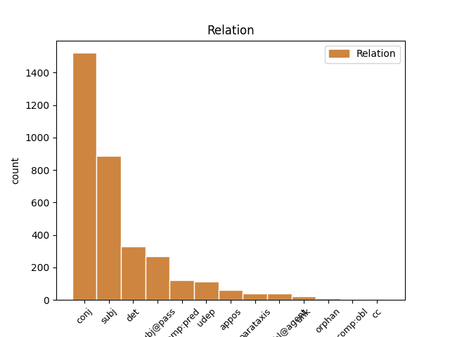
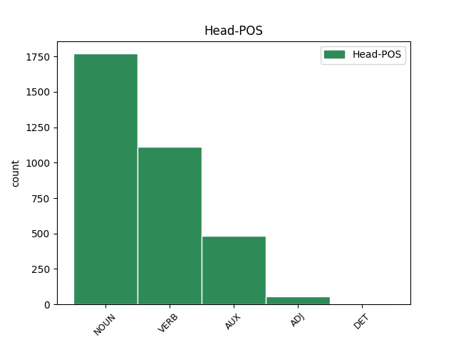
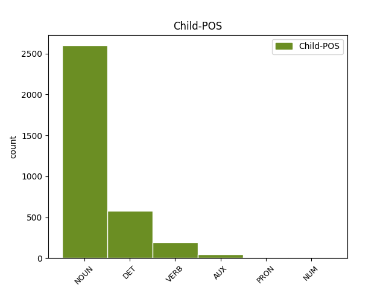

Distribution of features within this leaf



Agreement Rules sorted by frequency.
- When the dependent token is the conjunct(conj) of the head token, and the dependent token is NOUN.
1 Zrušují _ _ _ _ 0 _ _ _
2 se _ _ _ _ 0 _ _ _
3 1 _ _ _ _ 0 _ _ _
4 . _ _ _ _ 0 _ _ _
5 nařízení _ _ _ _ 0 _ _ _
6 vlády _ _ _ _ 0 _ _ _
7 ČSSR _ _ _ _ 0 _ _ _
8 č._136/1989_Sb. _ _ _ _ 0 _ _ _
9 , _ _ _ _ 0 _ _ _
10 o _ _ _ _ 0 _ _ _
11 informační _ _ _ _ 0 _ _ _
12 soustavě _ _ _ _ 0 _ _ _
13 organizací _ _ _ _ 0 _ _ _
14 , _ _ _ _ 0 _ _ _
15 2 _ _ _ _ 0 _ _ _
16 . _ _ _ _ 0 _ _ _
17 vyhláška _ _ _ _ 0 _ _ _
18 federálního _ _ _ _ 0 _ _ _
19 ministerstva _ _ _ _ 0 _ _ _
20 financí _ _ _ _ 0 _ _ _
21 č._155/1971_Sb. _ _ _ _ 0 _ _ _
22 , _ _ _ _ 0 _ _ _
23 o _ _ _ _ 0 _ _ _
24 inventarizacích _ _ _ _ 0 _ _ _
25 hospodářských _ _ _ _ 0 _ _ _
26 prostředků _ _ _ _ 0 _ _ _
27 , _ _ _ _ 0 _ _ _
28 3 _ _ _ _ 0 _ _ _
29 . _ _ _ _ 0 _ _ _
30 vyhláška vyhláška NOUN NNFS1-----A---- Case=Nom|Gender=Fem|Number=Sing|Polarity=Pos 0 _ _ _
31 federálního _ _ _ _ 0 _ _ _
32 ministerstva _ _ _ _ 0 _ _ _
33 financí _ _ _ _ 0 _ _ _
34 č._21/1990_Sb. _ _ _ _ 0 _ _ _
35 , _ _ _ _ 0 _ _ _
36 o _ _ _ _ 0 _ _ _
37 kalkulaci _ _ _ _ 0 _ _ _
38 , _ _ _ _ 0 _ _ _
39 4 _ _ _ _ 0 _ _ _
40 . _ _ _ _ 0 _ _ _
41 vyhláška vyhláška NOUN NNFS1-----A---- Case=Nom|Gender=Fem|Number=Sing|Polarity=Pos 30 conj _ _
42 federálního _ _ _ _ 0 _ _ _
43 ministerstva _ _ _ _ 0 _ _ _
44 financí _ _ _ _ 0 _ _ _
45 č._23/1990_Sb. _ _ _ _ 0 _ _ _
46 , _ _ _ _ 0 _ _ _
47 o _ _ _ _ 0 _ _ _
48 účetnictví _ _ _ _ 0 _ _ _
49 . _ _ _ _ 0 _ _ _
1 Tento _ _ _ _ 0 _ _ _
2 zákon zákon NOUN NNIS1-----A---- Animacy=Inan|Case=Nom|Gender=Masc|Number=Sing|Polarity=Pos 3 subj _ _
3 nabývá nabývat VERB VB-S---3P-AA--- Mood=Ind|Number=Sing|Person=3|Polarity=Pos|Tense=Pres|VerbForm=Fin|Voice=Act 0 _ _ _
4 účinnosti _ _ _ _ 0 _ _ _
5 dnem _ _ _ _ 0 _ _ _
6 1 _ _ _ _ 0 _ _ _
7 . _ _ _ _ 0 _ _ _
8 ledna _ _ _ _ 0 _ _ _
9 1992 _ _ _ _ 0 _ _ _
10 . _ _ _ _ 0 _ _ _
1 Tento tento DET PDYS1---------- Case=Nom|Gender=Masc|Number=Sing|PronType=Dem 2 det _ _
2 zákon zákon NOUN NNIS1-----A---- Animacy=Inan|Case=Nom|Gender=Masc|Number=Sing|Polarity=Pos 0 _ _ _
3 nabývá _ _ _ _ 0 _ _ _
4 účinnosti _ _ _ _ 0 _ _ _
5 dnem _ _ _ _ 0 _ _ _
6 1 _ _ _ _ 0 _ _ _
7 . _ _ _ _ 0 _ _ _
8 ledna _ _ _ _ 0 _ _ _
9 1992 _ _ _ _ 0 _ _ _
10 . _ _ _ _ 0 _ _ _
1 Rozhodnutí _ _ _ _ 0 _ _ _
2 o _ _ _ _ 0 _ _ _
3 použití _ _ _ _ 0 _ _ _
4 mezinárodních _ _ _ _ 0 _ _ _
5 účetních _ _ _ _ 0 _ _ _
6 standardů _ _ _ _ 0 _ _ _
7 pro _ _ _ _ 0 _ _ _
8 účtování _ _ _ _ 0 _ _ _
9 a _ _ _ _ 0 _ _ _
10 sestavení _ _ _ _ 0 _ _ _
11 účetní _ _ _ _ 0 _ _ _
12 závěrky _ _ _ _ 0 _ _ _
13 a _ _ _ _ 0 _ _ _
14 stanovení _ _ _ _ 0 _ _ _
15 účetního _ _ _ _ 0 _ _ _
16 období _ _ _ _ 0 _ _ _
17 , _ _ _ _ 0 _ _ _
18 od _ _ _ _ 0 _ _ _
19 kterého _ _ _ _ 0 _ _ _
20 budou být AUX VB-P---3F-AA--- Mood=Ind|Number=Plur|Person=3|Polarity=Pos|Tense=Fut|VerbForm=Fin|Voice=Act 0 _ _ _
21 mezinárodní _ _ _ _ 0 _ _ _
22 účetní _ _ _ _ 0 _ _ _
23 standardy standard NOUN NNIP1-----A---- Animacy=Inan|Case=Nom|Gender=Masc|Number=Plur|Polarity=Pos 20 subj@pass _ _
24 používány _ _ _ _ 0 _ _ _
25 , _ _ _ _ 0 _ _ _
26 podléhá _ _ _ _ 0 _ _ _
27 schválení _ _ _ _ 0 _ _ _
28 nejvyšším _ _ _ _ 0 _ _ _
29 orgánem _ _ _ _ 0 _ _ _
30 této _ _ _ _ 0 _ _ _
31 účetní _ _ _ _ 0 _ _ _
32 jednotky _ _ _ _ 0 _ _ _
33 . _ _ _ _ 0 _ _ _
1 Občanská _ _ _ _ 0 _ _ _
2 sdružení _ _ _ _ 0 _ _ _
3 , _ _ _ _ 0 _ _ _
4 jejich _ _ _ _ 0 _ _ _
5 organizační _ _ _ _ 0 _ _ _
6 jednotky _ _ _ _ 0 _ _ _
7 , _ _ _ _ 0 _ _ _
8 které _ _ _ _ 0 _ _ _
9 mají _ _ _ _ 0 _ _ _
10 právní _ _ _ _ 0 _ _ _
11 subjektivitu _ _ _ _ 0 _ _ _
12 , _ _ _ _ 0 _ _ _
13 církve _ _ _ _ 0 _ _ _
14 a _ _ _ _ 0 _ _ _
15 náboženské _ _ _ _ 0 _ _ _
16 společnosti _ _ _ _ 0 _ _ _
17 nebo _ _ _ _ 0 _ _ _
18 církevní _ _ _ _ 0 _ _ _
19 instituce _ _ _ _ 0 _ _ _
20 , _ _ _ _ 0 _ _ _
21 které _ _ _ _ 0 _ _ _
22 jsou _ _ _ _ 0 _ _ _
23 církevní _ _ _ _ 0 _ _ _
24 právnickou _ _ _ _ 0 _ _ _
25 osobou _ _ _ _ 0 _ _ _
26 , _ _ _ _ 0 _ _ _
27 a _ _ _ _ 0 _ _ _
28 honební _ _ _ _ 0 _ _ _
29 společenstva _ _ _ _ 0 _ _ _
30 mohou _ _ _ _ 0 _ _ _
31 vést _ _ _ _ 0 _ _ _
32 účetnictví _ _ _ _ 0 _ _ _
33 podle _ _ _ _ 0 _ _ _
34 zákona_č._563/1991_Sb. _ _ _ _ 0 _ _ _
35 , _ _ _ _ 0 _ _ _
36 o _ _ _ _ 0 _ _ _
37 účetnictví _ _ _ _ 0 _ _ _
38 , _ _ _ _ 0 _ _ _
39 ve _ _ _ _ 0 _ _ _
40 znění _ _ _ _ 0 _ _ _
41 zákona_č._117/1994_Sb.,_zákona_č._227/1997_Sb.,_zákona_č._492/2000_Sb.,_zákona_č._353/2001_Sb._a_zákona_č._437/2003_Sb. _ _ _ _ 0 _ _ _
42 , _ _ _ _ 0 _ _ _
43 pokud _ _ _ _ 0 _ _ _
44 jejich _ _ _ _ 0 _ _ _
45 celkové _ _ _ _ 0 _ _ _
46 příjmy _ _ _ _ 0 _ _ _
47 za _ _ _ _ 0 _ _ _
48 poslední _ _ _ _ 0 _ _ _
49 uzavřené _ _ _ _ 0 _ _ _
50 účetní _ _ _ _ 0 _ _ _
51 období _ _ _ _ 0 _ _ _
52 nepřesáhnou _ _ _ _ 0 _ _ _
53 3000000 _ _ _ _ 0 _ _ _
54 Kč _ _ _ _ 0 _ _ _
55 ; _ _ _ _ 0 _ _ _
56 přitom _ _ _ _ 0 _ _ _
57 se _ _ _ _ 0 _ _ _
58 na _ _ _ _ 0 _ _ _
59 ně _ _ _ _ 0 _ _ _
60 vztahují _ _ _ _ 0 _ _ _
61 ustanovení _ _ _ _ 0 _ _ _
62 zákona_č._563/1991_Sb. _ _ _ _ 0 _ _ _
63 , _ _ _ _ 0 _ _ _
64 o _ _ _ _ 0 _ _ _
65 účetnictví _ _ _ _ 0 _ _ _
66 , _ _ _ _ 0 _ _ _
67 a _ _ _ _ 0 _ _ _
68 jeho _ _ _ _ 0 _ _ _
69 prováděcích _ _ _ _ 0 _ _ _
70 právních _ _ _ _ 0 _ _ _
71 předpisů _ _ _ _ 0 _ _ _
72 , _ _ _ _ 0 _ _ _
73 která který DET P4NP1---------- Case=Nom|Gender=Neut|Number=Plur|PronType=Int,Rel 74 subj _ _
74 upravují upravovat VERB VB-P---3P-AA--- Mood=Ind|Number=Plur|Person=3|Polarity=Pos|Tense=Pres|VerbForm=Fin|Voice=Act 0 _ _ _
75 účtování _ _ _ _ 0 _ _ _
76 v _ _ _ _ 0 _ _ _
77 soustavě _ _ _ _ 0 _ _ _
78 jednoduchého _ _ _ _ 0 _ _ _
79 účetnictví _ _ _ _ 0 _ _ _
80 , _ _ _ _ 0 _ _ _
81 ve _ _ _ _ 0 _ _ _
82 znění _ _ _ _ 0 _ _ _
83 účinném _ _ _ _ 0 _ _ _
84 k _ _ _ _ 0 _ _ _
85 31 _ _ _ _ 0 _ _ _
86 . _ _ _ _ 0 _ _ _
87 prosinci _ _ _ _ 0 _ _ _
88 2003 _ _ _ _ 0 _ _ _
89 . _ _ _ _ 0 _ _ _
1 Občanská _ _ _ _ 0 _ _ _
2 sdružení _ _ _ _ 0 _ _ _
3 , _ _ _ _ 0 _ _ _
4 jejich _ _ _ _ 0 _ _ _
5 organizační _ _ _ _ 0 _ _ _
6 jednotky _ _ _ _ 0 _ _ _
7 , _ _ _ _ 0 _ _ _
8 které _ _ _ _ 0 _ _ _
9 mají _ _ _ _ 0 _ _ _
10 právní _ _ _ _ 0 _ _ _
11 subjektivitu _ _ _ _ 0 _ _ _
12 , _ _ _ _ 0 _ _ _
13 církve _ _ _ _ 0 _ _ _
14 a _ _ _ _ 0 _ _ _
15 náboženské _ _ _ _ 0 _ _ _
16 společnosti _ _ _ _ 0 _ _ _
17 nebo _ _ _ _ 0 _ _ _
18 církevní _ _ _ _ 0 _ _ _
19 instituce _ _ _ _ 0 _ _ _
20 , _ _ _ _ 0 _ _ _
21 které _ _ _ _ 0 _ _ _
22 jsou _ _ _ _ 0 _ _ _
23 církevní _ _ _ _ 0 _ _ _
24 právnickou _ _ _ _ 0 _ _ _
25 osobou _ _ _ _ 0 _ _ _
26 , _ _ _ _ 0 _ _ _
27 a _ _ _ _ 0 _ _ _
28 honební _ _ _ _ 0 _ _ _
29 společenstva _ _ _ _ 0 _ _ _
30 mohou moci VERB VB-P---3P-AA--1 Mood=Ind|Number=Plur|Person=3|Polarity=Pos|Tense=Pres|VerbForm=Fin|Voice=Act 0 _ _ _
31 vést _ _ _ _ 0 _ _ _
32 účetnictví _ _ _ _ 0 _ _ _
33 podle _ _ _ _ 0 _ _ _
34 zákona_č._563/1991_Sb. _ _ _ _ 0 _ _ _
35 , _ _ _ _ 0 _ _ _
36 o _ _ _ _ 0 _ _ _
37 účetnictví _ _ _ _ 0 _ _ _
38 , _ _ _ _ 0 _ _ _
39 ve _ _ _ _ 0 _ _ _
40 znění _ _ _ _ 0 _ _ _
41 zákona_č._117/1994_Sb.,_zákona_č._227/1997_Sb.,_zákona_č._492/2000_Sb.,_zákona_č._353/2001_Sb._a_zákona_č._437/2003_Sb. _ _ _ _ 0 _ _ _
42 , _ _ _ _ 0 _ _ _
43 pokud _ _ _ _ 0 _ _ _
44 jejich _ _ _ _ 0 _ _ _
45 celkové _ _ _ _ 0 _ _ _
46 příjmy _ _ _ _ 0 _ _ _
47 za _ _ _ _ 0 _ _ _
48 poslední _ _ _ _ 0 _ _ _
49 uzavřené _ _ _ _ 0 _ _ _
50 účetní _ _ _ _ 0 _ _ _
51 období _ _ _ _ 0 _ _ _
52 nepřesáhnou _ _ _ _ 0 _ _ _
53 3000000 _ _ _ _ 0 _ _ _
54 Kč _ _ _ _ 0 _ _ _
55 ; _ _ _ _ 0 _ _ _
56 přitom _ _ _ _ 0 _ _ _
57 se _ _ _ _ 0 _ _ _
58 na _ _ _ _ 0 _ _ _
59 ně _ _ _ _ 0 _ _ _
60 vztahují vztahovat VERB VB-P---3P-AA--- Mood=Ind|Number=Plur|Person=3|Polarity=Pos|Tense=Pres|VerbForm=Fin|Voice=Act 30 conj _ _
61 ustanovení _ _ _ _ 0 _ _ _
62 zákona_č._563/1991_Sb. _ _ _ _ 0 _ _ _
63 , _ _ _ _ 0 _ _ _
64 o _ _ _ _ 0 _ _ _
65 účetnictví _ _ _ _ 0 _ _ _
66 , _ _ _ _ 0 _ _ _
67 a _ _ _ _ 0 _ _ _
68 jeho _ _ _ _ 0 _ _ _
69 prováděcích _ _ _ _ 0 _ _ _
70 právních _ _ _ _ 0 _ _ _
71 předpisů _ _ _ _ 0 _ _ _
72 , _ _ _ _ 0 _ _ _
73 která _ _ _ _ 0 _ _ _
74 upravují _ _ _ _ 0 _ _ _
75 účtování _ _ _ _ 0 _ _ _
76 v _ _ _ _ 0 _ _ _
77 soustavě _ _ _ _ 0 _ _ _
78 jednoduchého _ _ _ _ 0 _ _ _
79 účetnictví _ _ _ _ 0 _ _ _
80 , _ _ _ _ 0 _ _ _
81 ve _ _ _ _ 0 _ _ _
82 znění _ _ _ _ 0 _ _ _
83 účinném _ _ _ _ 0 _ _ _
84 k _ _ _ _ 0 _ _ _
85 31 _ _ _ _ 0 _ _ _
86 . _ _ _ _ 0 _ _ _
87 prosinci _ _ _ _ 0 _ _ _
88 2003 _ _ _ _ 0 _ _ _
89 . _ _ _ _ 0 _ _ _
1 (1) _ _ _ _ 0 _ _ _
2 Účetní _ _ _ _ 0 _ _ _
3 jednotka _ _ _ _ 0 _ _ _
4 , _ _ _ _ 0 _ _ _
5 která _ _ _ _ 0 _ _ _
6 je _ _ _ _ 0 _ _ _
7 obchodní _ _ _ _ 0 _ _ _
8 společností _ _ _ _ 0 _ _ _
9 a _ _ _ _ 0 _ _ _
10 je být AUX VB-S---3P-AA--- Mood=Ind|Number=Sing|Person=3|Polarity=Pos|Tense=Pres|VerbForm=Fin|Voice=Act 0 _ _ _
11 emitentem emitent NOUN NNMS7-----A---- Animacy=Anim|Case=Ins|Gender=Masc|Number=Sing|Polarity=Pos 10 comp:pred _ _
12 cenných _ _ _ _ 0 _ _ _
13 papírů _ _ _ _ 0 _ _ _
14 přijatých _ _ _ _ 0 _ _ _
15 k _ _ _ _ 0 _ _ _
16 obchodování _ _ _ _ 0 _ _ _
17 na _ _ _ _ 0 _ _ _
18 evropském _ _ _ _ 0 _ _ _
19 regulovaném _ _ _ _ 0 _ _ _
20 trhu _ _ _ _ 0 _ _ _
21 , _ _ _ _ 0 _ _ _
22 použije _ _ _ _ 0 _ _ _
23 pro _ _ _ _ 0 _ _ _
24 účtování _ _ _ _ 0 _ _ _
25 a _ _ _ _ 0 _ _ _
26 sestavení _ _ _ _ 0 _ _ _
27 účetní _ _ _ _ 0 _ _ _
28 závěrky _ _ _ _ 0 _ _ _
29 mezinárodní _ _ _ _ 0 _ _ _
30 účetní _ _ _ _ 0 _ _ _
31 standardy _ _ _ _ 0 _ _ _
32 upravené _ _ _ _ 0 _ _ _
33 právem _ _ _ _ 0 _ _ _
34 Evropské _ _ _ _ 0 _ _ _
35 unie _ _ _ _ 0 _ _ _
36 ( _ _ _ _ 0 _ _ _
37 dále _ _ _ _ 0 _ _ _
38 jen _ _ _ _ 0 _ _ _
39 " _ _ _ _ 0 _ _ _
40 mezinárodní_účetní_standardy _ _ _ _ 0 _ _ _
41 " _ _ _ _ 0 _ _ _
42 ) _ _ _ _ 0 _ _ _
43 . _ _ _ _ 0 _ _ _
1 Tento _ _ _ _ 0 _ _ _
2 zákon _ _ _ _ 0 _ _ _
3 nabývá nabývat VERB VB-S---3P-AA--- Mood=Ind|Number=Sing|Person=3|Polarity=Pos|Tense=Pres|VerbForm=Fin|Voice=Act 0 _ _ _
4 účinnosti _ _ _ _ 0 _ _ _
5 dnem den NOUN NNIS7-----A---- Animacy=Inan|Case=Ins|Gender=Masc|Number=Sing|Polarity=Pos 3 udep _ _
6 1 _ _ _ _ 0 _ _ _
7 . _ _ _ _ 0 _ _ _
8 ledna _ _ _ _ 0 _ _ _
9 1992 _ _ _ _ 0 _ _ _
10 . _ _ _ _ 0 _ _ _
1 (8) _ _ _ _ 0 _ _ _
2 V _ _ _ _ 0 _ _ _
3 případech _ _ _ _ 0 _ _ _
4 , _ _ _ _ 0 _ _ _
5 kdy _ _ _ _ 0 _ _ _
6 to _ _ _ _ 0 _ _ _
7 vyžadují _ _ _ _ 0 _ _ _
8 právní _ _ _ _ 0 _ _ _
9 předpisy _ _ _ _ 0 _ _ _
10 , _ _ _ _ 0 _ _ _
11 mohou _ _ _ _ 0 _ _ _
12 účetní _ _ _ _ 0 _ _ _
13 jednotky _ _ _ _ 0 _ _ _
14 poskytnout _ _ _ _ 0 _ _ _
15 účetní _ _ _ _ 0 _ _ _
16 záznamy _ _ _ _ 0 _ _ _
17 nesoucí _ _ _ _ 0 _ _ _
18 informace _ _ _ _ 0 _ _ _
19 uspořádané _ _ _ _ 0 _ _ _
20 podle _ _ _ _ 0 _ _ _
21 oborů obor NOUN NNIP2-----A---- Animacy=Inan|Case=Gen|Gender=Masc|Number=Plur|Polarity=Pos 0 _ _ _
22 ( _ _ _ _ 0 _ _ _
23 druhů druh NOUN NNIP2-----A---- Animacy=Inan|Case=Gen|Gender=Masc|Number=Plur|Polarity=Pos 21 appos _ LId=druh-1|SpaceAfter=No
24 ) _ _ _ _ 0 _ _ _
25 činnosti _ _ _ _ 0 _ _ _
26 nebo _ _ _ _ 0 _ _ _
27 podle _ _ _ _ 0 _ _ _
28 zeměpisných _ _ _ _ 0 _ _ _
29 oblastí _ _ _ _ 0 _ _ _
30 , _ _ _ _ 0 _ _ _
31 ve _ _ _ _ 0 _ _ _
32 kterých _ _ _ _ 0 _ _ _
33 provozují _ _ _ _ 0 _ _ _
34 svou _ _ _ _ 0 _ _ _
35 činnost _ _ _ _ 0 _ _ _
36 . _ _ _ _ 0 _ _ _
1 (1) _ _ _ _ 0 _ _ _
2 Účetní _ _ _ _ 0 _ _ _
3 jednotka _ _ _ _ 0 _ _ _
4 , _ _ _ _ 0 _ _ _
5 která _ _ _ _ 0 _ _ _
6 je být AUX VB-S---3P-AA--- Mood=Ind|Number=Sing|Person=3|Polarity=Pos|Tense=Pres|VerbForm=Fin|Voice=Act 0 _ _ _
7 obchodní _ _ _ _ 0 _ _ _
8 společností _ _ _ _ 0 _ _ _
9 a _ _ _ _ 0 _ _ _
10 je být AUX VB-S---3P-AA--- Mood=Ind|Number=Sing|Person=3|Polarity=Pos|Tense=Pres|VerbForm=Fin|Voice=Act 6 conj _ _
11 emitentem _ _ _ _ 0 _ _ _
12 cenných _ _ _ _ 0 _ _ _
13 papírů _ _ _ _ 0 _ _ _
14 přijatých _ _ _ _ 0 _ _ _
15 k _ _ _ _ 0 _ _ _
16 obchodování _ _ _ _ 0 _ _ _
17 na _ _ _ _ 0 _ _ _
18 evropském _ _ _ _ 0 _ _ _
19 regulovaném _ _ _ _ 0 _ _ _
20 trhu _ _ _ _ 0 _ _ _
21 , _ _ _ _ 0 _ _ _
22 použije _ _ _ _ 0 _ _ _
23 pro _ _ _ _ 0 _ _ _
24 účtování _ _ _ _ 0 _ _ _
25 a _ _ _ _ 0 _ _ _
26 sestavení _ _ _ _ 0 _ _ _
27 účetní _ _ _ _ 0 _ _ _
28 závěrky _ _ _ _ 0 _ _ _
29 mezinárodní _ _ _ _ 0 _ _ _
30 účetní _ _ _ _ 0 _ _ _
31 standardy _ _ _ _ 0 _ _ _
32 upravené _ _ _ _ 0 _ _ _
33 právem _ _ _ _ 0 _ _ _
34 Evropské _ _ _ _ 0 _ _ _
35 unie _ _ _ _ 0 _ _ _
36 ( _ _ _ _ 0 _ _ _
37 dále _ _ _ _ 0 _ _ _
38 jen _ _ _ _ 0 _ _ _
39 " _ _ _ _ 0 _ _ _
40 mezinárodní_účetní_standardy _ _ _ _ 0 _ _ _
41 " _ _ _ _ 0 _ _ _
42 ) _ _ _ _ 0 _ _ _
43 . _ _ _ _ 0 _ _ _
1 (9) _ _ _ _ 0 _ _ _
2 Využije-li _ _ _ _ 0 _ _ _
3 účetní _ _ _ _ 0 _ _ _
4 jednotka _ _ _ _ 0 _ _ _
5 možnosti _ _ _ _ 0 _ _ _
6 podle _ _ _ _ 0 _ _ _
7 odstavců _ _ _ _ 0 _ _ _
8 7 _ _ _ _ 0 _ _ _
9 nebo _ _ _ _ 0 _ _ _
10 8 _ _ _ _ 0 _ _ _
11 a _ _ _ _ 0 _ _ _
12 dojde _ _ _ _ 0 _ _ _
13 ke _ _ _ _ 0 _ _ _
14 změně _ _ _ _ 0 _ _ _
15 původního _ _ _ _ 0 _ _ _
16 předpokladu _ _ _ _ 0 _ _ _
17 , _ _ _ _ 0 _ _ _
18 a _ _ _ _ 0 _ _ _
19 to _ _ _ _ 0 _ _ _
20 i _ _ _ _ 0 _ _ _
21 v _ _ _ _ 0 _ _ _
22 průběhu _ _ _ _ 0 _ _ _
23 účetního _ _ _ _ 0 _ _ _
24 období _ _ _ _ 0 _ _ _
25 , _ _ _ _ 0 _ _ _
26 nepoužije _ _ _ _ 0 _ _ _
27 účetní _ _ _ _ 0 _ _ _
28 jednotka _ _ _ _ 0 _ _ _
29 pro _ _ _ _ 0 _ _ _
30 účtování _ _ _ _ 0 _ _ _
31 a _ _ _ _ 0 _ _ _
32 sestavení _ _ _ _ 0 _ _ _
33 účetní _ _ _ _ 0 _ _ _
34 závěrky _ _ _ _ 0 _ _ _
35 mezinárodní _ _ _ _ 0 _ _ _
36 účetní _ _ _ _ 0 _ _ _
37 standardy _ _ _ _ 0 _ _ _
38 od _ _ _ _ 0 _ _ _
39 počátku _ _ _ _ 0 _ _ _
40 účetního _ _ _ _ 0 _ _ _
41 období _ _ _ _ 0 _ _ _
42 , _ _ _ _ 0 _ _ _
43 ve _ _ _ _ 0 _ _ _
44 kterém _ _ _ _ 0 _ _ _
45 došlo _ _ _ _ 0 _ _ _
46 ke _ _ _ _ 0 _ _ _
47 změně _ _ _ _ 0 _ _ _
48 původního _ _ _ _ 0 _ _ _
49 předpokladu _ _ _ _ 0 _ _ _
50 , _ _ _ _ 0 _ _ _
51 případně _ _ _ _ 0 _ _ _
52 od _ _ _ _ 0 _ _ _
53 počátku _ _ _ _ 0 _ _ _
54 účetního _ _ _ _ 0 _ _ _
55 období _ _ _ _ 0 _ _ _
56 , _ _ _ _ 0 _ _ _
57 které _ _ _ _ 0 _ _ _
58 bylo _ _ _ _ 0 _ _ _
59 stanoveno stanovený ADJ VsNS---XX-AP--- Gender=Neut|Number=Sing|Polarity=Pos|Variant=Short|VerbForm=Part|Voice=Pass 0 _ _ _
60 rozhodnutím rozhodnutí NOUN NNNS7-----A---- Case=Ins|Gender=Neut|Number=Sing|Polarity=Pos 59 comp:obl@agent _ _
61 nejvyššího _ _ _ _ 0 _ _ _
62 orgánu _ _ _ _ 0 _ _ _
63 účetní _ _ _ _ 0 _ _ _
64 jednotky _ _ _ _ 0 _ _ _
65 , _ _ _ _ 0 _ _ _
66 nebo _ _ _ _ 0 _ _ _
67 od _ _ _ _ 0 _ _ _
68 následujícího _ _ _ _ 0 _ _ _
69 účetního _ _ _ _ 0 _ _ _
70 období _ _ _ _ 0 _ _ _
71 . _ _ _ _ 0 _ _ _
1 Informace _ _ _ _ 0 _ _ _
2 se _ _ _ _ 0 _ _ _
3 považuje považovat VERB VB-S---3P-AA--- Mood=Ind|Number=Sing|Person=3|Polarity=Pos|Tense=Pres|VerbForm=Fin|Voice=Act 0 _ _ _
4 za _ _ _ _ 0 _ _ _
5 významnou _ _ _ _ 0 _ _ _
6 ( _ _ _ _ 0 _ _ _
7 závažnou _ _ _ _ 0 _ _ _
8 ) _ _ _ _ 0 _ _ _
9 , _ _ _ _ 0 _ _ _
10 jestliže _ _ _ _ 0 _ _ _
11 by _ _ _ _ 0 _ _ _
12 její _ _ _ _ 0 _ _ _
13 neuvedení _ _ _ _ 0 _ _ _
14 nebo _ _ _ _ 0 _ _ _
15 chybné _ _ _ _ 0 _ _ _
16 uvedení _ _ _ _ 0 _ _ _
17 mohlo _ _ _ _ 0 _ _ _
18 ovlivnit _ _ _ _ 0 _ _ _
19 úsudek _ _ _ _ 0 _ _ _
20 nebo _ _ _ _ 0 _ _ _
21 rozhodování _ _ _ _ 0 _ _ _
22 osoby _ _ _ _ 0 _ _ _
23 , _ _ _ _ 0 _ _ _
24 která _ _ _ _ 0 _ _ _
25 tuto _ _ _ _ 0 _ _ _
26 informaci _ _ _ _ 0 _ _ _
27 využívá _ _ _ _ 0 _ _ _
28 ( _ _ _ _ 0 _ _ _
29 dále _ _ _ _ 0 _ _ _
30 jen _ _ _ _ 0 _ _ _
31 " _ _ _ _ 0 _ _ _
32 uživatel _ _ _ _ 0 _ _ _
33 " _ _ _ _ 0 _ _ _
34 ) _ _ _ _ 0 _ _ _
35 ; _ _ _ _ 0 _ _ _
36 u _ _ _ _ 0 _ _ _
37 účetních _ _ _ _ 0 _ _ _
38 jednotek _ _ _ _ 0 _ _ _
39 podle _ _ _ _ 0 _ _ _
40 §_1_odst._2_písm._c) _ _ _ _ 0 _ _ _
41 a _ _ _ _ 0 _ _ _
42 u _ _ _ _ 0 _ _ _
43 územních _ _ _ _ 0 _ _ _
44 samosprávných _ _ _ _ 0 _ _ _
45 celků _ _ _ _ 0 _ _ _
46 , _ _ _ _ 0 _ _ _
47 které _ _ _ _ 0 _ _ _
48 jsou _ _ _ _ 0 _ _ _
49 příjemci _ _ _ _ 0 _ _ _
50 prostředků _ _ _ _ 0 _ _ _
51 ze _ _ _ _ 0 _ _ _
52 státního _ _ _ _ 0 _ _ _
53 rozpočtu _ _ _ _ 0 _ _ _
54 nebo _ _ _ _ 0 _ _ _
55 s _ _ _ _ 0 _ _ _
56 nimi _ _ _ _ 0 _ _ _
57 hospodaří _ _ _ _ 0 _ _ _
58 a _ _ _ _ 0 _ _ _
59 jsou _ _ _ _ 0 _ _ _
60 povinny _ _ _ _ 0 _ _ _
61 tyto _ _ _ _ 0 _ _ _
62 prostředky _ _ _ _ 0 _ _ _
63 vypořádat _ _ _ _ 0 _ _ _
64 podle _ _ _ _ 0 _ _ _
65 zvláštního _ _ _ _ 0 _ _ _
66 právního _ _ _ _ 0 _ _ _
67 předpisu _ _ _ _ 0 _ _ _
68 , _ _ _ _ 0 _ _ _
69 se _ _ _ _ 0 _ _ _
70 považuje považovat VERB VB-S---3P-AA--- Mood=Ind|Number=Sing|Person=3|Polarity=Pos|Tense=Pres|VerbForm=Fin|Voice=Act 3 parataxis _ _
71 za _ _ _ _ 0 _ _ _
72 významnou _ _ _ _ 0 _ _ _
73 též _ _ _ _ 0 _ _ _
74 informace _ _ _ _ 0 _ _ _
75 o _ _ _ _ 0 _ _ _
76 ocenění _ _ _ _ 0 _ _ _
77 nehmotného _ _ _ _ 0 _ _ _
78 majetku _ _ _ _ 0 _ _ _
79 ve _ _ _ _ 0 _ _ _
80 výši _ _ _ _ 0 _ _ _
81 nad _ _ _ _ 0 _ _ _
82 60000 _ _ _ _ 0 _ _ _
83 Kč _ _ _ _ 0 _ _ _
84 a _ _ _ _ 0 _ _ _
85 u _ _ _ _ 0 _ _ _
86 samostatných _ _ _ _ 0 _ _ _
87 movitých _ _ _ _ 0 _ _ _
88 věcí _ _ _ _ 0 _ _ _
89 nebo _ _ _ _ 0 _ _ _
90 souboru _ _ _ _ 0 _ _ _
91 movitých _ _ _ _ 0 _ _ _
92 věcí _ _ _ _ 0 _ _ _
93 ve _ _ _ _ 0 _ _ _
94 výši _ _ _ _ 0 _ _ _
95 nad _ _ _ _ 0 _ _ _
96 40000 _ _ _ _ 0 _ _ _
97 Kč _ _ _ _ 0 _ _ _
98 . _ _ _ _ 0 _ _ _
1 (9) _ _ _ _ 0 _ _ _
2 Využije-li _ _ _ _ 0 _ _ _
3 účetní _ _ _ _ 0 _ _ _
4 jednotka _ _ _ _ 0 _ _ _
5 možnosti _ _ _ _ 0 _ _ _
6 podle _ _ _ _ 0 _ _ _
7 odstavců _ _ _ _ 0 _ _ _
8 7 _ _ _ _ 0 _ _ _
9 nebo _ _ _ _ 0 _ _ _
10 8 _ _ _ _ 0 _ _ _
11 a _ _ _ _ 0 _ _ _
12 dojde _ _ _ _ 0 _ _ _
13 ke _ _ _ _ 0 _ _ _
14 změně _ _ _ _ 0 _ _ _
15 původního _ _ _ _ 0 _ _ _
16 předpokladu _ _ _ _ 0 _ _ _
17 , _ _ _ _ 0 _ _ _
18 a _ _ _ _ 0 _ _ _
19 to _ _ _ _ 0 _ _ _
20 i _ _ _ _ 0 _ _ _
21 v _ _ _ _ 0 _ _ _
22 průběhu _ _ _ _ 0 _ _ _
23 účetního _ _ _ _ 0 _ _ _
24 období _ _ _ _ 0 _ _ _
25 , _ _ _ _ 0 _ _ _
26 nepoužije _ _ _ _ 0 _ _ _
27 účetní _ _ _ _ 0 _ _ _
28 jednotka _ _ _ _ 0 _ _ _
29 pro _ _ _ _ 0 _ _ _
30 účtování _ _ _ _ 0 _ _ _
31 a _ _ _ _ 0 _ _ _
32 sestavení _ _ _ _ 0 _ _ _
33 účetní _ _ _ _ 0 _ _ _
34 závěrky _ _ _ _ 0 _ _ _
35 mezinárodní _ _ _ _ 0 _ _ _
36 účetní _ _ _ _ 0 _ _ _
37 standardy _ _ _ _ 0 _ _ _
38 od _ _ _ _ 0 _ _ _
39 počátku _ _ _ _ 0 _ _ _
40 účetního _ _ _ _ 0 _ _ _
41 období _ _ _ _ 0 _ _ _
42 , _ _ _ _ 0 _ _ _
43 ve _ _ _ _ 0 _ _ _
44 kterém _ _ _ _ 0 _ _ _
45 došlo _ _ _ _ 0 _ _ _
46 ke _ _ _ _ 0 _ _ _
47 změně _ _ _ _ 0 _ _ _
48 původního _ _ _ _ 0 _ _ _
49 předpokladu _ _ _ _ 0 _ _ _
50 , _ _ _ _ 0 _ _ _
51 případně _ _ _ _ 0 _ _ _
52 od _ _ _ _ 0 _ _ _
53 počátku _ _ _ _ 0 _ _ _
54 účetního _ _ _ _ 0 _ _ _
55 období _ _ _ _ 0 _ _ _
56 , _ _ _ _ 0 _ _ _
57 které který DET P4NS1---------- Case=Nom|Gender=Neut|Number=Sing|PronType=Int,Rel 58 subj@pass _ _
58 bylo být AUX VpNS---XR-AA--- Gender=Neut|Number=Sing|Polarity=Pos|Tense=Past|VerbForm=Part|Voice=Act 0 _ _ _
59 stanoveno _ _ _ _ 0 _ _ _
60 rozhodnutím _ _ _ _ 0 _ _ _
61 nejvyššího _ _ _ _ 0 _ _ _
62 orgánu _ _ _ _ 0 _ _ _
63 účetní _ _ _ _ 0 _ _ _
64 jednotky _ _ _ _ 0 _ _ _
65 , _ _ _ _ 0 _ _ _
66 nebo _ _ _ _ 0 _ _ _
67 od _ _ _ _ 0 _ _ _
68 následujícího _ _ _ _ 0 _ _ _
69 účetního _ _ _ _ 0 _ _ _
70 období _ _ _ _ 0 _ _ _
71 . _ _ _ _ 0 _ _ _
1 (2) _ _ _ _ 0 _ _ _
2 Změny _ _ _ _ 0 _ _ _
3 reálných _ _ _ _ 0 _ _ _
4 hodnot _ _ _ _ 0 _ _ _
5 ostatních _ _ _ _ 0 _ _ _
6 cenných _ _ _ _ 0 _ _ _
7 papírů papír NOUN NNIP2-----A---- Animacy=Inan|Case=Gen|Gender=Masc|Number=Plur|Polarity=Pos 0 _ _ _
8 oceňovaných _ _ _ _ 0 _ _ _
9 reálnou _ _ _ _ 0 _ _ _
10 hodnotou _ _ _ _ 0 _ _ _
11 ( _ _ _ _ 0 _ _ _
12 realizovatelné _ _ _ _ 0 _ _ _
13 cenné _ _ _ _ 0 _ _ _
14 papíry papír NOUN NNIP1-----A---- Animacy=Inan|Case=Nom|Gender=Masc|Number=Plur|Polarity=Pos 7 unk _ SpaceAfter=No
15 ) _ _ _ _ 0 _ _ _
16 se _ _ _ _ 0 _ _ _
17 účtují _ _ _ _ 0 _ _ _
18 prostřednictvím _ _ _ _ 0 _ _ _
19 rozvahových _ _ _ _ 0 _ _ _
20 účtů _ _ _ _ 0 _ _ _
21 v _ _ _ _ 0 _ _ _
22 účtové _ _ _ _ 0 _ _ _
23 skupině _ _ _ _ 0 _ _ _
24 41 _ _ _ _ 0 _ _ _
25 . _ _ _ _ 0 _ _ _
1 Do _ _ _ _ 0 _ _ _
2 okamžiku _ _ _ _ 0 _ _ _
3 schválení _ _ _ _ 0 _ _ _
4 účetní _ _ _ _ 0 _ _ _
5 závěrky _ _ _ _ 0 _ _ _
6 , _ _ _ _ 0 _ _ _
7 nejpozději _ _ _ _ 0 _ _ _
8 však _ _ _ _ 0 _ _ _
9 do _ _ _ _ 0 _ _ _
10 konce _ _ _ _ 0 _ _ _
11 následujícího _ _ _ _ 0 _ _ _
12 účetního _ _ _ _ 0 _ _ _
13 období _ _ _ _ 0 _ _ _
14 , _ _ _ _ 0 _ _ _
15 může _ _ _ _ 0 _ _ _
16 účetní _ _ _ _ 0 _ _ _
17 jednotka _ _ _ _ 0 _ _ _
18 pouze _ _ _ _ 0 _ _ _
19 z _ _ _ _ 0 _ _ _
20 důvodů _ _ _ _ 0 _ _ _
21 , _ _ _ _ 0 _ _ _
22 že _ _ _ _ 0 _ _ _
23 obsah _ _ _ _ 0 _ _ _
24 položek _ _ _ _ 0 _ _ _
25 účetní _ _ _ _ 0 _ _ _
26 závěrky _ _ _ _ 0 _ _ _
27 neodpovídá _ _ _ _ 0 _ _ _
28 skutečnému _ _ _ _ 0 _ _ _
29 stavu _ _ _ _ 0 _ _ _
30 , _ _ _ _ 0 _ _ _
31 již _ _ _ _ 0 _ _ _
32 uzavřené _ _ _ _ 0 _ _ _
33 účetní _ _ _ _ 0 _ _ _
34 knihy _ _ _ _ 0 _ _ _
35 opět _ _ _ _ 0 _ _ _
36 otevřít _ _ _ _ 0 _ _ _
37 a _ _ _ _ 0 _ _ _
38 provést _ _ _ _ 0 _ _ _
39 případnou _ _ _ _ 0 _ _ _
40 opravu _ _ _ _ 0 _ _ _
41 účetních _ _ _ _ 0 _ _ _
42 zápisů _ _ _ _ 0 _ _ _
43 a _ _ _ _ 0 _ _ _
44 sestavit _ _ _ _ 0 _ _ _
45 novou _ _ _ _ 0 _ _ _
46 účetní _ _ _ _ 0 _ _ _
47 závěrku _ _ _ _ 0 _ _ _
48 , _ _ _ _ 0 _ _ _
49 která _ _ _ _ 0 _ _ _
50 se _ _ _ _ 0 _ _ _
51 tímto tento DET PDZS7---------- Case=Ins|Gender=Masc,Neut|Number=Sing|PronType=Dem 52 udep _ _
52 stává stávat VERB VB-S---3P-AA--- Mood=Ind|Number=Sing|Person=3|Polarity=Pos|Tense=Pres|VerbForm=Fin|Voice=Act 0 _ _ _
53 účetní _ _ _ _ 0 _ _ _
54 závěrkou _ _ _ _ 0 _ _ _
55 podle _ _ _ _ 0 _ _ _
56 tohoto _ _ _ _ 0 _ _ _
57 zákona _ _ _ _ 0 _ _ _
58 . _ _ _ _ 0 _ _ _
1 (3) _ _ _ _ 0 _ _ _
2 Rozvahový _ _ _ _ 0 _ _ _
3 přístup _ _ _ _ 0 _ _ _
4 znamená _ _ _ _ 0 _ _ _
5 , _ _ _ _ 0 _ _ _
6 že _ _ _ _ 0 _ _ _
7 závazková _ _ _ _ 0 _ _ _
8 metoda _ _ _ _ 0 _ _ _
9 podle _ _ _ _ 0 _ _ _
10 odstavce _ _ _ _ 0 _ _ _
11 2 _ _ _ _ 0 _ _ _
12 vychází _ _ _ _ 0 _ _ _
13 z _ _ _ _ 0 _ _ _
14 přechodných _ _ _ _ 0 _ _ _
15 rozdílů _ _ _ _ 0 _ _ _
16 , _ _ _ _ 0 _ _ _
17 jimiž jenž PRON PJXP7---------- Case=Ins|Number=Plur|PrepCase=Npr|PronType=Rel 18 comp:pred _ _
18 jsou být AUX VB-P---3P-AA--- Mood=Ind|Number=Plur|Person=3|Polarity=Pos|Tense=Pres|VerbForm=Fin|Voice=Act 0 _ _ _
19 rozdíly _ _ _ _ 0 _ _ _
20 mezi _ _ _ _ 0 _ _ _
21 daňovou _ _ _ _ 0 _ _ _
22 základnou _ _ _ _ 0 _ _ _
23 aktiv _ _ _ _ 0 _ _ _
24 , _ _ _ _ 0 _ _ _
25 popřípadě _ _ _ _ 0 _ _ _
26 pasiv _ _ _ _ 0 _ _ _
27 a _ _ _ _ 0 _ _ _
28 výší _ _ _ _ 0 _ _ _
29 aktiv _ _ _ _ 0 _ _ _
30 , _ _ _ _ 0 _ _ _
31 popřípadě _ _ _ _ 0 _ _ _
32 pasiv _ _ _ _ 0 _ _ _
33 uvedených _ _ _ _ 0 _ _ _
34 v _ _ _ _ 0 _ _ _
35 rozvaze _ _ _ _ 0 _ _ _
36 ( _ _ _ _ 0 _ _ _
37 bilanci _ _ _ _ 0 _ _ _
38 ) _ _ _ _ 0 _ _ _
39 . _ _ _ _ 0 _ _ _
1 Rozsah _ _ _ _ 0 _ _ _
2 vedení _ _ _ _ 0 _ _ _
3 účetnictví _ _ _ _ 0 _ _ _
4 , _ _ _ _ 0 _ _ _
5 účetní _ _ _ _ 0 _ _ _
6 doklady doklad NOUN NNIP1-----A---- Animacy=Inan|Case=Nom|Gender=Masc|Number=Plur|Polarity=Pos 0 _ _ _
7 , _ _ _ _ 0 _ _ _
8 účetní _ _ _ _ 0 _ _ _
9 zápisy _ _ _ _ 0 _ _ _
10 a _ _ _ _ 0 _ _ _
11 účetní _ _ _ _ 0 _ _ _
12 knihy kniha NOUN NNFP1-----A---- Case=Nom|Gender=Fem|Number=Plur|Polarity=Pos 6 orphan _ _
1 (1) _ _ _ _ 0 _ _ _
2 Konsolidující _ _ _ _ 0 _ _ _
3 účetní _ _ _ _ 0 _ _ _
4 jednotka _ _ _ _ 0 _ _ _
5 uvede _ _ _ _ 0 _ _ _
6 v _ _ _ _ 0 _ _ _
7 příloze _ _ _ _ 0 _ _ _
8 v _ _ _ _ 0 _ _ _
9 konsolidované _ _ _ _ 0 _ _ _
10 účetní _ _ _ _ 0 _ _ _
11 závěrce _ _ _ _ 0 _ _ _
12 a) _ _ _ _ 0 _ _ _
13 způsob _ _ _ _ 0 _ _ _
14 konsolidace _ _ _ _ 0 _ _ _
15 podle _ _ _ _ 0 _ _ _
16 §_63_odst._1 _ _ _ _ 0 _ _ _
17 a _ _ _ _ 0 _ _ _
18 použité _ _ _ _ 0 _ _ _
19 metody _ _ _ _ 0 _ _ _
20 konsolidace _ _ _ _ 0 _ _ _
21 podle _ _ _ _ 0 _ _ _
22 §_63_odst._4 _ _ _ _ 0 _ _ _
23 , _ _ _ _ 0 _ _ _
24 b) _ _ _ _ 0 _ _ _
25 obchodní _ _ _ _ 0 _ _ _
26 firmu _ _ _ _ 0 _ _ _
27 a _ _ _ _ 0 _ _ _
28 sídlo _ _ _ _ 0 _ _ _
29 konsolidovaných _ _ _ _ 0 _ _ _
30 účetních _ _ _ _ 0 _ _ _
31 jednotek _ _ _ _ 0 _ _ _
32 zahrnutých _ _ _ _ 0 _ _ _
33 do _ _ _ _ 0 _ _ _
34 konsolidačního _ _ _ _ 0 _ _ _
35 celku _ _ _ _ 0 _ _ _
36 ; _ _ _ _ 0 _ _ _
37 podíl _ _ _ _ 0 _ _ _
38 na _ _ _ _ 0 _ _ _
39 vlastním _ _ _ _ 0 _ _ _
40 kapitálu _ _ _ _ 0 _ _ _
41 v _ _ _ _ 0 _ _ _
42 těchto _ _ _ _ 0 _ _ _
43 účetních _ _ _ _ 0 _ _ _
44 jednotkách _ _ _ _ 0 _ _ _
45 zahrnutých _ _ _ _ 0 _ _ _
46 do _ _ _ _ 0 _ _ _
47 konsolidačního _ _ _ _ 0 _ _ _
48 celku _ _ _ _ 0 _ _ _
49 držený _ _ _ _ 0 _ _ _
50 jinými _ _ _ _ 0 _ _ _
51 účetními _ _ _ _ 0 _ _ _
52 jednotkami _ _ _ _ 0 _ _ _
53 než _ _ _ _ 0 _ _ _
54 konsolidující _ _ _ _ 0 _ _ _
55 účetní _ _ _ _ 0 _ _ _
56 jednotkou _ _ _ _ 0 _ _ _
57 nebo _ _ _ _ 0 _ _ _
58 osobami _ _ _ _ 0 _ _ _
59 jednajícími _ _ _ _ 0 _ _ _
60 vlastním _ _ _ _ 0 _ _ _
61 jménem _ _ _ _ 0 _ _ _
62 , _ _ _ _ 0 _ _ _
63 ale _ _ _ _ 0 _ _ _
64 na _ _ _ _ 0 _ _ _
65 účet _ _ _ _ 0 _ _ _
66 těchto _ _ _ _ 0 _ _ _
67 účetních _ _ _ _ 0 _ _ _
68 jednotek _ _ _ _ 0 _ _ _
69 ; _ _ _ _ 0 _ _ _
70 dále _ _ _ _ 0 _ _ _
71 uvede _ _ _ _ 0 _ _ _
72 důvody _ _ _ _ 0 _ _ _
73 , _ _ _ _ 0 _ _ _
74 na _ _ _ _ 0 _ _ _
75 základě _ _ _ _ 0 _ _ _
76 kterých _ _ _ _ 0 _ _ _
77 se _ _ _ _ 0 _ _ _
78 stala _ _ _ _ 0 _ _ _
79 ovládající _ _ _ _ 0 _ _ _
80 osobou _ _ _ _ 0 _ _ _
81 , _ _ _ _ 0 _ _ _
82 c) _ _ _ _ 0 _ _ _
83 obchodní _ _ _ _ 0 _ _ _
84 firmu _ _ _ _ 0 _ _ _
85 a _ _ _ _ 0 _ _ _
86 sídlo _ _ _ _ 0 _ _ _
87 konsolidovaných _ _ _ _ 0 _ _ _
88 účetních _ _ _ _ 0 _ _ _
89 jednotek _ _ _ _ 0 _ _ _
90 nezahrnutých _ _ _ _ 0 _ _ _
91 do _ _ _ _ 0 _ _ _
92 konsolidačního _ _ _ _ 0 _ _ _
93 celku _ _ _ _ 0 _ _ _
94 podle _ _ _ _ 0 _ _ _
95 §_62_odst._6_a_§_22a_odst._3_zákona _ _ _ _ 0 _ _ _
96 , _ _ _ _ 0 _ _ _
97 včetně _ _ _ _ 0 _ _ _
98 důvodů _ _ _ _ 0 _ _ _
99 jejich _ _ _ _ 0 _ _ _
100 nezahrnutí _ _ _ _ 0 _ _ _
101 s _ _ _ _ 0 _ _ _
102 uvedením _ _ _ _ 0 _ _ _
103 podílu _ _ _ _ 0 _ _ _
104 na _ _ _ _ 0 _ _ _
105 vlastním _ _ _ _ 0 _ _ _
106 kapitálu _ _ _ _ 0 _ _ _
107 v _ _ _ _ 0 _ _ _
108 těchto _ _ _ _ 0 _ _ _
109 účetních _ _ _ _ 0 _ _ _
110 jednotkách _ _ _ _ 0 _ _ _
111 drženého _ _ _ _ 0 _ _ _
112 jinými _ _ _ _ 0 _ _ _
113 osobami _ _ _ _ 0 _ _ _
114 než _ _ _ _ 0 _ _ _
115 konsolidující _ _ _ _ 0 _ _ _
116 účetní _ _ _ _ 0 _ _ _
117 jednotkou _ _ _ _ 0 _ _ _
118 , _ _ _ _ 0 _ _ _
119 d) _ _ _ _ 0 _ _ _
120 obchodní _ _ _ _ 0 _ _ _
121 firmu _ _ _ _ 0 _ _ _
122 a _ _ _ _ 0 _ _ _
123 sídlo _ _ _ _ 0 _ _ _
124 účetních _ _ _ _ 0 _ _ _
125 jednotek _ _ _ _ 0 _ _ _
126 přidružených _ _ _ _ 0 _ _ _
127 , _ _ _ _ 0 _ _ _
128 které _ _ _ _ 0 _ _ _
129 jsou _ _ _ _ 0 _ _ _
130 zahrnuty _ _ _ _ 0 _ _ _
131 do _ _ _ _ 0 _ _ _
132 konsolidované _ _ _ _ 0 _ _ _
133 účetní _ _ _ _ 0 _ _ _
134 závěrky _ _ _ _ 0 _ _ _
135 ; _ _ _ _ 0 _ _ _
136 podíl _ _ _ _ 0 _ _ _
137 na _ _ _ _ 0 _ _ _
138 vlastním _ _ _ _ 0 _ _ _
139 kapitálu _ _ _ _ 0 _ _ _
140 v _ _ _ _ 0 _ _ _
141 těchto _ _ _ _ 0 _ _ _
142 účetních _ _ _ _ 0 _ _ _
143 jednotkách _ _ _ _ 0 _ _ _
144 přidružených _ _ _ _ 0 _ _ _
145 , _ _ _ _ 0 _ _ _
146 který _ _ _ _ 0 _ _ _
147 drží _ _ _ _ 0 _ _ _
148 účetní _ _ _ _ 0 _ _ _
149 jednotky _ _ _ _ 0 _ _ _
150 zahrnuté _ _ _ _ 0 _ _ _
151 do _ _ _ _ 0 _ _ _
152 konsolidace _ _ _ _ 0 _ _ _
153 nebo _ _ _ _ 0 _ _ _
154 osoby _ _ _ _ 0 _ _ _
155 jednající _ _ _ _ 0 _ _ _
156 vlastním _ _ _ _ 0 _ _ _
157 jménem _ _ _ _ 0 _ _ _
158 , _ _ _ _ 0 _ _ _
159 ale _ _ _ _ 0 _ _ _
160 na _ _ _ _ 0 _ _ _
161 účet _ _ _ _ 0 _ _ _
162 těchto _ _ _ _ 0 _ _ _
163 účetních _ _ _ _ 0 _ _ _
164 jednotek _ _ _ _ 0 _ _ _
165 , _ _ _ _ 0 _ _ _
166 e) _ _ _ _ 0 _ _ _
167 obchodní _ _ _ _ 0 _ _ _
168 firmu _ _ _ _ 0 _ _ _
169 a _ _ _ _ 0 _ _ _
170 sídlo _ _ _ _ 0 _ _ _
171 účetních _ _ _ _ 0 _ _ _
172 jednotek _ _ _ _ 0 _ _ _
173 přidružených _ _ _ _ 0 _ _ _
174 , _ _ _ _ 0 _ _ _
175 které _ _ _ _ 0 _ _ _
176 nejsou _ _ _ _ 0 _ _ _
177 zahrnuty _ _ _ _ 0 _ _ _
178 do _ _ _ _ 0 _ _ _
179 konsolidované _ _ _ _ 0 _ _ _
180 účetní _ _ _ _ 0 _ _ _
181 závěrky _ _ _ _ 0 _ _ _
182 podle _ _ _ _ 0 _ _ _
183 §_62_odst._8 _ _ _ _ 0 _ _ _
184 , _ _ _ _ 0 _ _ _
185 včetně _ _ _ _ 0 _ _ _
186 uvedení _ _ _ _ 0 _ _ _
187 důvodu _ _ _ _ 0 _ _ _
188 pro _ _ _ _ 0 _ _ _
189 nezahrnutí _ _ _ _ 0 _ _ _
190 , _ _ _ _ 0 _ _ _
191 f) _ _ _ _ 0 _ _ _
192 obchodní _ _ _ _ 0 _ _ _
193 firmu _ _ _ _ 0 _ _ _
194 a _ _ _ _ 0 _ _ _
195 sídlo _ _ _ _ 0 _ _ _
196 účetních _ _ _ _ 0 _ _ _
197 jednotek _ _ _ _ 0 _ _ _
198 pod _ _ _ _ 0 _ _ _
199 společným _ _ _ _ 0 _ _ _
200 vlivem _ _ _ _ 0 _ _ _
201 zahrnutých _ _ _ _ 0 _ _ _
202 do _ _ _ _ 0 _ _ _
203 konsolidované _ _ _ _ 0 _ _ _
204 účetní _ _ _ _ 0 _ _ _
205 závěrky _ _ _ _ 0 _ _ _
206 ; _ _ _ _ 0 _ _ _
207 podíl _ _ _ _ 0 _ _ _
208 na _ _ _ _ 0 _ _ _
209 vlastním _ _ _ _ 0 _ _ _
210 kapitálu _ _ _ _ 0 _ _ _
211 v _ _ _ _ 0 _ _ _
212 těchto _ _ _ _ 0 _ _ _
213 účetních _ _ _ _ 0 _ _ _
214 jednotkách _ _ _ _ 0 _ _ _
215 pod _ _ _ _ 0 _ _ _
216 společným _ _ _ _ 0 _ _ _
217 vlivem _ _ _ _ 0 _ _ _
218 , _ _ _ _ 0 _ _ _
219 který _ _ _ _ 0 _ _ _
220 drží _ _ _ _ 0 _ _ _
221 účetní _ _ _ _ 0 _ _ _
222 jednotky _ _ _ _ 0 _ _ _
223 zahrnuté _ _ _ _ 0 _ _ _
224 do _ _ _ _ 0 _ _ _
225 konsolidace _ _ _ _ 0 _ _ _
226 nebo _ _ _ _ 0 _ _ _
227 osoby _ _ _ _ 0 _ _ _
228 jednající _ _ _ _ 0 _ _ _
229 vlastním _ _ _ _ 0 _ _ _
230 jménem _ _ _ _ 0 _ _ _
231 , _ _ _ _ 0 _ _ _
232 ale _ _ _ _ 0 _ _ _
233 na _ _ _ _ 0 _ _ _
234 účet _ _ _ _ 0 _ _ _
235 těchto _ _ _ _ 0 _ _ _
236 účetních _ _ _ _ 0 _ _ _
237 jednotek _ _ _ _ 0 _ _ _
238 ; _ _ _ _ 0 _ _ _
239 dále _ _ _ _ 0 _ _ _
240 uvede _ _ _ _ 0 _ _ _
241 důvody _ _ _ _ 0 _ _ _
242 , _ _ _ _ 0 _ _ _
243 na _ _ _ _ 0 _ _ _
244 základě _ _ _ _ 0 _ _ _
245 kterých _ _ _ _ 0 _ _ _
246 je _ _ _ _ 0 _ _ _
247 vykonáván _ _ _ _ 0 _ _ _
248 společný _ _ _ _ 0 _ _ _
249 vliv _ _ _ _ 0 _ _ _
250 , _ _ _ _ 0 _ _ _
251 g) _ _ _ _ 0 _ _ _
252 obchodní _ _ _ _ 0 _ _ _
253 firmu _ _ _ _ 0 _ _ _
254 a _ _ _ _ 0 _ _ _
255 sídlo _ _ _ _ 0 _ _ _
256 účetních _ _ _ _ 0 _ _ _
257 jednotek _ _ _ _ 0 _ _ _
258 , _ _ _ _ 0 _ _ _
259 které _ _ _ _ 0 _ _ _
260 nejsou _ _ _ _ 0 _ _ _
261 uvedeny _ _ _ _ 0 _ _ _
262 pod _ _ _ _ 0 _ _ _
263 písmeny _ _ _ _ 0 _ _ _
264 b)_až_f) _ _ _ _ 0 _ _ _
265 , _ _ _ _ 0 _ _ _
266 v _ _ _ _ 0 _ _ _
267 nichž _ _ _ _ 0 _ _ _
268 mají mít VERB VB-P---3P-AA--- Mood=Ind|Number=Plur|Person=3|Polarity=Pos|Tense=Pres|VerbForm=Fin|Voice=Act 0 _ _ _
269 účetní _ _ _ _ 0 _ _ _
270 jednotky _ _ _ _ 0 _ _ _
271 samy sám DET PLFP1---------- Case=Nom|Gender=Fem|Number=Plur|PronType=Emp 268 comp:pred _ _
272 nebo _ _ _ _ 0 _ _ _
273 prostřednictvím _ _ _ _ 0 _ _ _
274 osoby _ _ _ _ 0 _ _ _
275 jednající _ _ _ _ 0 _ _ _
276 vlastním _ _ _ _ 0 _ _ _
277 jménem _ _ _ _ 0 _ _ _
278 na _ _ _ _ 0 _ _ _
279 její _ _ _ _ 0 _ _ _
280 účet _ _ _ _ 0 _ _ _
281 podíl _ _ _ _ 0 _ _ _
282 na _ _ _ _ 0 _ _ _
283 vlastním _ _ _ _ 0 _ _ _
284 kapitálu _ _ _ _ 0 _ _ _
285 menší _ _ _ _ 0 _ _ _
286 než _ _ _ _ 0 _ _ _
287 20 _ _ _ _ 0 _ _ _
288 % _ _ _ _ 0 _ _ _
289 ; _ _ _ _ 0 _ _ _
290 uvede _ _ _ _ 0 _ _ _
291 se _ _ _ _ 0 _ _ _
292 výše _ _ _ _ 0 _ _ _
293 podílu _ _ _ _ 0 _ _ _
294 na _ _ _ _ 0 _ _ _
295 vlastním _ _ _ _ 0 _ _ _
296 kapitálu _ _ _ _ 0 _ _ _
297 , _ _ _ _ 0 _ _ _
298 včetně _ _ _ _ 0 _ _ _
299 celkové _ _ _ _ 0 _ _ _
300 výše _ _ _ _ 0 _ _ _
301 vlastního _ _ _ _ 0 _ _ _
302 kapitálu _ _ _ _ 0 _ _ _
303 , _ _ _ _ 0 _ _ _
304 výše _ _ _ _ 0 _ _ _
305 výsledku _ _ _ _ 0 _ _ _
306 hospodaření _ _ _ _ 0 _ _ _
307 za _ _ _ _ 0 _ _ _
308 poslední _ _ _ _ 0 _ _ _
309 účetní _ _ _ _ 0 _ _ _
310 období _ _ _ _ 0 _ _ _
311 těchto _ _ _ _ 0 _ _ _
312 účetních _ _ _ _ 0 _ _ _
313 jednotek _ _ _ _ 0 _ _ _
314 ; _ _ _ _ 0 _ _ _
315 tato _ _ _ _ 0 _ _ _
316 informace _ _ _ _ 0 _ _ _
317 nemusí _ _ _ _ 0 _ _ _
318 být _ _ _ _ 0 _ _ _
319 uvedena _ _ _ _ 0 _ _ _
320 , _ _ _ _ 0 _ _ _
321 nejsou-li _ _ _ _ 0 _ _ _
322 tyto _ _ _ _ 0 _ _ _
323 účetní _ _ _ _ 0 _ _ _
324 jednotky _ _ _ _ 0 _ _ _
325 významné _ _ _ _ 0 _ _ _
326 z _ _ _ _ 0 _ _ _
327 hlediska _ _ _ _ 0 _ _ _
328 podání _ _ _ _ 0 _ _ _
329 věrného _ _ _ _ 0 _ _ _
330 a _ _ _ _ 0 _ _ _
331 poctivého _ _ _ _ 0 _ _ _
332 obrazu _ _ _ _ 0 _ _ _
333 předmětu _ _ _ _ 0 _ _ _
334 účetnictví _ _ _ _ 0 _ _ _
335 a _ _ _ _ 0 _ _ _
336 finanční _ _ _ _ 0 _ _ _
337 situace _ _ _ _ 0 _ _ _
338 v _ _ _ _ 0 _ _ _
339 konsolidované _ _ _ _ 0 _ _ _
340 účetní _ _ _ _ 0 _ _ _
341 závěrce _ _ _ _ 0 _ _ _
342 , _ _ _ _ 0 _ _ _
343 informace _ _ _ _ 0 _ _ _
344 o _ _ _ _ 0 _ _ _
345 vlastním _ _ _ _ 0 _ _ _
346 kapitálu _ _ _ _ 0 _ _ _
347 a _ _ _ _ 0 _ _ _
348 o _ _ _ _ 0 _ _ _
349 výsledku _ _ _ _ 0 _ _ _
350 hospodaření _ _ _ _ 0 _ _ _
351 se _ _ _ _ 0 _ _ _
352 rovněž _ _ _ _ 0 _ _ _
353 neuvádějí _ _ _ _ 0 _ _ _
354 , _ _ _ _ 0 _ _ _
355 nejsou-li _ _ _ _ 0 _ _ _
356 zveřejněny _ _ _ _ 0 _ _ _
357 a _ _ _ _ 0 _ _ _
358 je-li _ _ _ _ 0 _ _ _
359 podíl _ _ _ _ 0 _ _ _
360 konsolidující _ _ _ _ 0 _ _ _
361 účetní _ _ _ _ 0 _ _ _
362 jednotky _ _ _ _ 0 _ _ _
363 na _ _ _ _ 0 _ _ _
364 vlastním _ _ _ _ 0 _ _ _
365 kapitálu _ _ _ _ 0 _ _ _
366 přímo _ _ _ _ 0 _ _ _
367 nebo _ _ _ _ 0 _ _ _
368 prostřednictvím _ _ _ _ 0 _ _ _
369 jiných _ _ _ _ 0 _ _ _
370 účetních _ _ _ _ 0 _ _ _
371 jednotek _ _ _ _ 0 _ _ _
372 menší _ _ _ _ 0 _ _ _
373 než _ _ _ _ 0 _ _ _
374 50 _ _ _ _ 0 _ _ _
375 % _ _ _ _ 0 _ _ _
376 , _ _ _ _ 0 _ _ _
377 h) _ _ _ _ 0 _ _ _
378 informace _ _ _ _ 0 _ _ _
379 o _ _ _ _ 0 _ _ _
380 použitých _ _ _ _ 0 _ _ _
381 účetních _ _ _ _ 0 _ _ _
382 metodách _ _ _ _ 0 _ _ _
383 a _ _ _ _ 0 _ _ _
384 zásadách _ _ _ _ 0 _ _ _
385 , _ _ _ _ 0 _ _ _
386 o _ _ _ _ 0 _ _ _
387 změnách _ _ _ _ 0 _ _ _
388 způsobů _ _ _ _ 0 _ _ _
389 oceňování _ _ _ _ 0 _ _ _
390 , _ _ _ _ 0 _ _ _
391 postupů _ _ _ _ 0 _ _ _
392 účtování _ _ _ _ 0 _ _ _
393 , _ _ _ _ 0 _ _ _
394 uspořádání _ _ _ _ 0 _ _ _
395 položek _ _ _ _ 0 _ _ _
396 konsolidované _ _ _ _ 0 _ _ _
397 účetní _ _ _ _ 0 _ _ _
398 závěrky _ _ _ _ 0 _ _ _
399 a _ _ _ _ 0 _ _ _
400 obsahového _ _ _ _ 0 _ _ _
401 vymezení _ _ _ _ 0 _ _ _
402 položek _ _ _ _ 0 _ _ _
403 oproti _ _ _ _ 0 _ _ _
404 předcházejícímu _ _ _ _ 0 _ _ _
405 účetnímu _ _ _ _ 0 _ _ _
406 období _ _ _ _ 0 _ _ _
407 , _ _ _ _ 0 _ _ _
408 s _ _ _ _ 0 _ _ _
409 uvedením _ _ _ _ 0 _ _ _
410 důvodů _ _ _ _ 0 _ _ _
411 těchto _ _ _ _ 0 _ _ _
412 změn _ _ _ _ 0 _ _ _
413 ; _ _ _ _ 0 _ _ _
414 u _ _ _ _ 0 _ _ _
415 položek _ _ _ _ 0 _ _ _
416 uvedených _ _ _ _ 0 _ _ _
417 v _ _ _ _ 0 _ _ _
418 konsolidované _ _ _ _ 0 _ _ _
419 účetní _ _ _ _ 0 _ _ _
420 závěrce _ _ _ _ 0 _ _ _
421 , _ _ _ _ 0 _ _ _
422 které _ _ _ _ 0 _ _ _
423 jsou _ _ _ _ 0 _ _ _
424 nebo _ _ _ _ 0 _ _ _
425 původně _ _ _ _ 0 _ _ _
426 byly _ _ _ _ 0 _ _ _
427 vyjádřeny _ _ _ _ 0 _ _ _
428 v _ _ _ _ 0 _ _ _
429 cizí _ _ _ _ 0 _ _ _
430 měně _ _ _ _ 0 _ _ _
431 , _ _ _ _ 0 _ _ _
432 se _ _ _ _ 0 _ _ _
433 uvedou _ _ _ _ 0 _ _ _
434 informace _ _ _ _ 0 _ _ _
435 o _ _ _ _ 0 _ _ _
436 způsobu _ _ _ _ 0 _ _ _
437 jejich _ _ _ _ 0 _ _ _
438 přepočtu _ _ _ _ 0 _ _ _
439 na _ _ _ _ 0 _ _ _
440 měnu _ _ _ _ 0 _ _ _
441 , _ _ _ _ 0 _ _ _
442 v _ _ _ _ 0 _ _ _
443 níž _ _ _ _ 0 _ _ _
444 byla _ _ _ _ 0 _ _ _
445 sestavena _ _ _ _ 0 _ _ _
446 konsolidovaná _ _ _ _ 0 _ _ _
447 účetní _ _ _ _ 0 _ _ _
448 závěrka _ _ _ _ 0 _ _ _
449 , _ _ _ _ 0 _ _ _
450 i) _ _ _ _ 0 _ _ _
451 vysvětlení _ _ _ _ 0 _ _ _
452 položek _ _ _ _ 0 _ _ _
453 " _ _ _ _ 0 _ _ _
454 Kladný_konsolidační_rozdíl _ _ _ _ 0 _ _ _
455 " _ _ _ _ 0 _ _ _
456 a _ _ _ _ 0 _ _ _
457 " _ _ _ _ 0 _ _ _
458 Záporný_konsolidační_rozdíl _ _ _ _ 0 _ _ _
459 " _ _ _ _ 0 _ _ _
460 , _ _ _ _ 0 _ _ _
461 metody _ _ _ _ 0 _ _ _
462 jejich _ _ _ _ 0 _ _ _
463 stanovení _ _ _ _ 0 _ _ _
464 a _ _ _ _ 0 _ _ _
465 jakékoli _ _ _ _ 0 _ _ _
466 významné _ _ _ _ 0 _ _ _
467 změny _ _ _ _ 0 _ _ _
468 oproti _ _ _ _ 0 _ _ _
469 předcházejícímu _ _ _ _ 0 _ _ _
470 účetnímu _ _ _ _ 0 _ _ _
471 období _ _ _ _ 0 _ _ _
472 , _ _ _ _ 0 _ _ _
473 j) _ _ _ _ 0 _ _ _
474 průměrný _ _ _ _ 0 _ _ _
475 přepočtený _ _ _ _ 0 _ _ _
476 počet _ _ _ _ 0 _ _ _
477 zaměstnanců _ _ _ _ 0 _ _ _
478 konsolidačního _ _ _ _ 0 _ _ _
479 celku _ _ _ _ 0 _ _ _
480 během _ _ _ _ 0 _ _ _
481 účetního _ _ _ _ 0 _ _ _
482 období _ _ _ _ 0 _ _ _
483 , _ _ _ _ 0 _ _ _
484 za _ _ _ _ 0 _ _ _
485 které _ _ _ _ 0 _ _ _
486 se _ _ _ _ 0 _ _ _
487 sestavuje _ _ _ _ 0 _ _ _
488 konsolidovaná _ _ _ _ 0 _ _ _
489 účetní _ _ _ _ 0 _ _ _
490 závěrka _ _ _ _ 0 _ _ _
491 , _ _ _ _ 0 _ _ _
492 rozčleněných _ _ _ _ 0 _ _ _
493 podle _ _ _ _ 0 _ _ _
494 kategorií _ _ _ _ 0 _ _ _
495 ; _ _ _ _ 0 _ _ _
496 samostatně _ _ _ _ 0 _ _ _
497 se _ _ _ _ 0 _ _ _
498 uvede _ _ _ _ 0 _ _ _
499 průměrný _ _ _ _ 0 _ _ _
500 přepočtený _ _ _ _ 0 _ _ _
501 počet _ _ _ _ 0 _ _ _
502 zaměstnanců _ _ _ _ 0 _ _ _
503 v _ _ _ _ 0 _ _ _
504 průběhu _ _ _ _ 0 _ _ _
505 účetního _ _ _ _ 0 _ _ _
506 období _ _ _ _ 0 _ _ _
507 u _ _ _ _ 0 _ _ _
508 účetních _ _ _ _ 0 _ _ _
509 jednotek _ _ _ _ 0 _ _ _
510 pod _ _ _ _ 0 _ _ _
511 společným _ _ _ _ 0 _ _ _
512 vlivem _ _ _ _ 0 _ _ _
513 . _ _ _ _ 0 _ _ _
1 (8) _ _ _ _ 0 _ _ _
2 Dlouhodobým _ _ _ _ 0 _ _ _
3 nehmotným _ _ _ _ 0 _ _ _
4 majetkem _ _ _ _ 0 _ _ _
5 se _ _ _ _ 0 _ _ _
6 stává _ _ _ _ 0 _ _ _
7 pořizovaný _ _ _ _ 0 _ _ _
8 majetek _ _ _ _ 0 _ _ _
9 uvedený _ _ _ _ 0 _ _ _
10 do _ _ _ _ 0 _ _ _
11 stavu _ _ _ _ 0 _ _ _
12 způsobilého _ _ _ _ 0 _ _ _
13 k _ _ _ _ 0 _ _ _
14 užívání _ _ _ _ 0 _ _ _
15 , _ _ _ _ 0 _ _ _
16 kterým který DET P4ZS7---------- Case=Ins|Gender=Masc,Neut|Number=Sing|PronType=Int,Rel 18 comp:obl@agent _ _
17 se _ _ _ _ 0 _ _ _
18 rozumí rozumět VERB VB-S---3P-AA--- Mood=Ind|Number=Sing|Person=3|Polarity=Pos|Tense=Pres|VerbForm=Fin|Voice=Act 0 _ _ _
19 dokončení _ _ _ _ 0 _ _ _
20 pořizovaného _ _ _ _ 0 _ _ _
21 majetku _ _ _ _ 0 _ _ _
22 a _ _ _ _ 0 _ _ _
23 splnění _ _ _ _ 0 _ _ _
24 stanovených _ _ _ _ 0 _ _ _
25 funkcí _ _ _ _ 0 _ _ _
26 a _ _ _ _ 0 _ _ _
27 povinností _ _ _ _ 0 _ _ _
28 stanovených _ _ _ _ 0 _ _ _
29 právními _ _ _ _ 0 _ _ _
30 předpisy _ _ _ _ 0 _ _ _
31 pro _ _ _ _ 0 _ _ _
32 jeho _ _ _ _ 0 _ _ _
33 užívání _ _ _ _ 0 _ _ _
34 . _ _ _ _ 0 _ _ _
1 (1) _ _ _ _ 0 _ _ _
2 Položka _ _ _ _ 0 _ _ _
3 " _ _ _ _ 0 _ _ _
4 C.I.1._Materiál _ _ _ _ 0 _ _ _
5 " _ _ _ _ 0 _ _ _
6 zejména _ _ _ _ 0 _ _ _
7 obsahuje _ _ _ _ 0 _ _ _
8 a) _ _ _ _ 0 _ _ _
9 suroviny _ _ _ _ 0 _ _ _
10 , _ _ _ _ 0 _ _ _
11 to _ _ _ _ 0 _ _ _
12 je být VERB VB-S---3P-AA--- Mood=Ind|Number=Sing|Person=3|Polarity=Pos|Tense=Pres|VerbForm=Fin|Voice=Act 14 cc _ _
13 základní _ _ _ _ 0 _ _ _
14 materiál materiál NOUN NNIS1-----A---- Animacy=Inan|Case=Nom|Gender=Masc|Number=Sing|Polarity=Pos 0 _ _ _
15 , _ _ _ _ 0 _ _ _
16 které _ _ _ _ 0 _ _ _
17 při _ _ _ _ 0 _ _ _
18 výrobním _ _ _ _ 0 _ _ _
19 procesu _ _ _ _ 0 _ _ _
20 přecházejí _ _ _ _ 0 _ _ _
21 zcela _ _ _ _ 0 _ _ _
22 nebo _ _ _ _ 0 _ _ _
23 zčásti _ _ _ _ 0 _ _ _
24 do _ _ _ _ 0 _ _ _
25 výrobku _ _ _ _ 0 _ _ _
26 a _ _ _ _ 0 _ _ _
27 tvoří _ _ _ _ 0 _ _ _
28 jeho _ _ _ _ 0 _ _ _
29 podstatu _ _ _ _ 0 _ _ _
30 , _ _ _ _ 0 _ _ _
31 b) _ _ _ _ 0 _ _ _
32 pomocné _ _ _ _ 0 _ _ _
33 látky _ _ _ _ 0 _ _ _
34 , _ _ _ _ 0 _ _ _
35 které _ _ _ _ 0 _ _ _
36 přecházejí _ _ _ _ 0 _ _ _
37 také _ _ _ _ 0 _ _ _
38 přímo _ _ _ _ 0 _ _ _
39 do _ _ _ _ 0 _ _ _
40 výrobku _ _ _ _ 0 _ _ _
41 , _ _ _ _ 0 _ _ _
42 netvoří _ _ _ _ 0 _ _ _
43 však _ _ _ _ 0 _ _ _
44 jeho _ _ _ _ 0 _ _ _
45 podstatu _ _ _ _ 0 _ _ _
46 , _ _ _ _ 0 _ _ _
47 například _ _ _ _ 0 _ _ _
48 lak _ _ _ _ 0 _ _ _
49 na _ _ _ _ 0 _ _ _
50 výrobky _ _ _ _ 0 _ _ _
51 , _ _ _ _ 0 _ _ _
52 c) _ _ _ _ 0 _ _ _
53 látky _ _ _ _ 0 _ _ _
54 , _ _ _ _ 0 _ _ _
55 kterých _ _ _ _ 0 _ _ _
56 je _ _ _ _ 0 _ _ _
57 zapotřebí _ _ _ _ 0 _ _ _
58 pro _ _ _ _ 0 _ _ _
59 zajištění _ _ _ _ 0 _ _ _
60 provozu _ _ _ _ 0 _ _ _
61 účetní _ _ _ _ 0 _ _ _
62 jednotky _ _ _ _ 0 _ _ _
63 , _ _ _ _ 0 _ _ _
64 například _ _ _ _ 0 _ _ _
65 mazadla _ _ _ _ 0 _ _ _
66 , _ _ _ _ 0 _ _ _
67 palivo _ _ _ _ 0 _ _ _
68 , _ _ _ _ 0 _ _ _
69 čisticí _ _ _ _ 0 _ _ _
70 prostředky _ _ _ _ 0 _ _ _
71 , _ _ _ _ 0 _ _ _
72 d) _ _ _ _ 0 _ _ _
73 náhradní _ _ _ _ 0 _ _ _
74 díly _ _ _ _ 0 _ _ _
75 včetně _ _ _ _ 0 _ _ _
76 náhradních _ _ _ _ 0 _ _ _
77 dílů _ _ _ _ 0 _ _ _
78 určených _ _ _ _ 0 _ _ _
79 k _ _ _ _ 0 _ _ _
80 výměně _ _ _ _ 0 _ _ _
81 komponenty _ _ _ _ 0 _ _ _
82 , _ _ _ _ 0 _ _ _
83 e) _ _ _ _ 0 _ _ _
84 obaly _ _ _ _ 0 _ _ _
85 a _ _ _ _ 0 _ _ _
86 obalové _ _ _ _ 0 _ _ _
87 materiály _ _ _ _ 0 _ _ _
88 , _ _ _ _ 0 _ _ _
89 pokud _ _ _ _ 0 _ _ _
90 nejsou _ _ _ _ 0 _ _ _
91 účtovány _ _ _ _ 0 _ _ _
92 jako _ _ _ _ 0 _ _ _
93 dlouhodobý _ _ _ _ 0 _ _ _
94 majetek _ _ _ _ 0 _ _ _
95 nebo _ _ _ _ 0 _ _ _
96 zboží _ _ _ _ 0 _ _ _
97 , _ _ _ _ 0 _ _ _
98 f) _ _ _ _ 0 _ _ _
99 další _ _ _ _ 0 _ _ _
100 movité _ _ _ _ 0 _ _ _
101 věci _ _ _ _ 0 _ _ _
102 s _ _ _ _ 0 _ _ _
103 dobou _ _ _ _ 0 _ _ _
104 použitelnosti _ _ _ _ 0 _ _ _
105 jeden _ _ _ _ 0 _ _ _
106 rok _ _ _ _ 0 _ _ _
107 a _ _ _ _ 0 _ _ _
108 kratší _ _ _ _ 0 _ _ _
109 bez _ _ _ _ 0 _ _ _
110 ohledu _ _ _ _ 0 _ _ _
111 na _ _ _ _ 0 _ _ _
112 výši _ _ _ _ 0 _ _ _
113 ocenění _ _ _ _ 0 _ _ _
114 , _ _ _ _ 0 _ _ _
115 g) _ _ _ _ 0 _ _ _
116 samostatné _ _ _ _ 0 _ _ _
117 movité _ _ _ _ 0 _ _ _
118 věci _ _ _ _ 0 _ _ _
119 a _ _ _ _ 0 _ _ _
120 soubory _ _ _ _ 0 _ _ _
121 movitých _ _ _ _ 0 _ _ _
122 věcí _ _ _ _ 0 _ _ _
123 s _ _ _ _ 0 _ _ _
124 dobou _ _ _ _ 0 _ _ _
125 použitelnosti _ _ _ _ 0 _ _ _
126 delší _ _ _ _ 0 _ _ _
127 než _ _ _ _ 0 _ _ _
128 jeden _ _ _ _ 0 _ _ _
129 rok _ _ _ _ 0 _ _ _
130 , _ _ _ _ 0 _ _ _
131 nevykázané _ _ _ _ 0 _ _ _
132 v _ _ _ _ 0 _ _ _
133 položce _ _ _ _ 0 _ _ _
134 " _ _ _ _ 0 _ _ _
135 B.II.3._Samostatné_movité_věci_a_soubory_movitých_věcí _ _ _ _ 0 _ _ _
136 " _ _ _ _ 0 _ _ _
137 , _ _ _ _ 0 _ _ _
138 považované _ _ _ _ 0 _ _ _
139 za _ _ _ _ 0 _ _ _
140 drobný _ _ _ _ 0 _ _ _
141 hmotný _ _ _ _ 0 _ _ _
142 majetek _ _ _ _ 0 _ _ _
143 , _ _ _ _ 0 _ _ _
144 o _ _ _ _ 0 _ _ _
145 kterém _ _ _ _ 0 _ _ _
146 účetní _ _ _ _ 0 _ _ _
147 jednotka _ _ _ _ 0 _ _ _
148 účtuje _ _ _ _ 0 _ _ _
149 jako _ _ _ _ 0 _ _ _
150 o _ _ _ _ 0 _ _ _
151 zásobách _ _ _ _ 0 _ _ _
152 , _ _ _ _ 0 _ _ _
153 h) _ _ _ _ 0 _ _ _
154 pokusná _ _ _ _ 0 _ _ _
155 zvířata _ _ _ _ 0 _ _ _
156 . _ _ _ _ 0 _ _ _
1 (5) _ _ _ _ 0 _ _ _
2 Účetní _ _ _ _ 0 _ _ _
3 jednotka _ _ _ _ 0 _ _ _
4 uvede _ _ _ _ 0 _ _ _
5 a) _ _ _ _ 0 _ _ _
6 informace _ _ _ _ 0 _ _ _
7 o _ _ _ _ 0 _ _ _
8 aplikaci _ _ _ _ 0 _ _ _
9 obecných _ _ _ _ 0 _ _ _
10 účetních _ _ _ _ 0 _ _ _
11 zásad _ _ _ _ 0 _ _ _
12 , _ _ _ _ 0 _ _ _
13 o _ _ _ _ 0 _ _ _
14 použitých _ _ _ _ 0 _ _ _
15 účetních _ _ _ _ 0 _ _ _
16 metodách _ _ _ _ 0 _ _ _
17 , _ _ _ _ 0 _ _ _
18 způsobech _ _ _ _ 0 _ _ _
19 oceňování _ _ _ _ 0 _ _ _
20 a _ _ _ _ 0 _ _ _
21 odpisování _ _ _ _ 0 _ _ _
22 , _ _ _ _ 0 _ _ _
23 jejichž _ _ _ _ 0 _ _ _
24 znalost _ _ _ _ 0 _ _ _
25 je _ _ _ _ 0 _ _ _
26 významná _ _ _ _ 0 _ _ _
27 pro _ _ _ _ 0 _ _ _
28 posouzení _ _ _ _ 0 _ _ _
29 finanční _ _ _ _ 0 _ _ _
30 , _ _ _ _ 0 _ _ _
31 majetkové _ _ _ _ 0 _ _ _
32 situace _ _ _ _ 0 _ _ _
33 a _ _ _ _ 0 _ _ _
34 výsledku _ _ _ _ 0 _ _ _
35 hospodaření _ _ _ _ 0 _ _ _
36 účetní _ _ _ _ 0 _ _ _
37 jednotky _ _ _ _ 0 _ _ _
38 a _ _ _ _ 0 _ _ _
39 pro _ _ _ _ 0 _ _ _
40 analýzu _ _ _ _ 0 _ _ _
41 údajů _ _ _ _ 0 _ _ _
42 obsažených _ _ _ _ 0 _ _ _
43 v _ _ _ _ 0 _ _ _
44 rozvaze _ _ _ _ 0 _ _ _
45 ( _ _ _ _ 0 _ _ _
46 bilanci _ _ _ _ 0 _ _ _
47 ) _ _ _ _ 0 _ _ _
48 a _ _ _ _ 0 _ _ _
49 ve _ _ _ _ 0 _ _ _
50 výkazu _ _ _ _ 0 _ _ _
51 zisku _ _ _ _ 0 _ _ _
52 a _ _ _ _ 0 _ _ _
53 ztráty _ _ _ _ 0 _ _ _
54 , _ _ _ _ 0 _ _ _
55 b) _ _ _ _ 0 _ _ _
56 informace _ _ _ _ 0 _ _ _
57 o _ _ _ _ 0 _ _ _
58 odchylkách _ _ _ _ 0 _ _ _
59 od _ _ _ _ 0 _ _ _
60 metod _ _ _ _ 0 _ _ _
61 podle _ _ _ _ 0 _ _ _
62 §_7_odst._5_zákona _ _ _ _ 0 _ _ _
63 s _ _ _ _ 0 _ _ _
64 uvedením _ _ _ _ 0 _ _ _
65 jejich _ _ _ _ 0 _ _ _
66 vlivu _ _ _ _ 0 _ _ _
67 na _ _ _ _ 0 _ _ _
68 majetek _ _ _ _ 0 _ _ _
69 a _ _ _ _ 0 _ _ _
70 závazky _ _ _ _ 0 _ _ _
71 , _ _ _ _ 0 _ _ _
72 na _ _ _ _ 0 _ _ _
73 finanční _ _ _ _ 0 _ _ _
74 situaci _ _ _ _ 0 _ _ _
75 a _ _ _ _ 0 _ _ _
76 výsledek _ _ _ _ 0 _ _ _
77 hospodaření _ _ _ _ 0 _ _ _
78 účetní _ _ _ _ 0 _ _ _
79 jednotky _ _ _ _ 0 _ _ _
80 , _ _ _ _ 0 _ _ _
81 c) _ _ _ _ 0 _ _ _
82 podle _ _ _ _ 0 _ _ _
83 principu _ _ _ _ 0 _ _ _
84 významnosti _ _ _ _ 0 _ _ _
85 způsob způsob NOUN NNIS1-----A---- Animacy=Inan|Case=Nom|Gender=Masc|Number=Sing|Polarity=Pos 0 _ _ _
86 stanovení _ _ _ _ 0 _ _ _
87 opravných _ _ _ _ 0 _ _ _
88 položek _ _ _ _ 0 _ _ _
89 a _ _ _ _ 0 _ _ _
90 oprávek _ _ _ _ 0 _ _ _
91 k _ _ _ _ 0 _ _ _
92 majetku _ _ _ _ 0 _ _ _
93 s _ _ _ _ 0 _ _ _
94 uvedením _ _ _ _ 0 _ _ _
95 zdroje _ _ _ _ 0 _ _ _
96 informací _ _ _ _ 0 _ _ _
97 pro _ _ _ _ 0 _ _ _
98 stanovení _ _ _ _ 0 _ _ _
99 výše _ _ _ _ 0 _ _ _
100 opravných _ _ _ _ 0 _ _ _
101 položek _ _ _ _ 0 _ _ _
102 a _ _ _ _ 0 _ _ _
103 oprávek _ _ _ _ 0 _ _ _
104 , _ _ _ _ 0 _ _ _
105 způsob _ _ _ _ 0 _ _ _
106 uplatněný _ _ _ _ 0 _ _ _
107 při _ _ _ _ 0 _ _ _
108 přepočtu _ _ _ _ 0 _ _ _
109 údajů _ _ _ _ 0 _ _ _
110 v _ _ _ _ 0 _ _ _
111 cizích _ _ _ _ 0 _ _ _
112 měnách _ _ _ _ 0 _ _ _
113 na _ _ _ _ 0 _ _ _
114 českou _ _ _ _ 0 _ _ _
115 měnu _ _ _ _ 0 _ _ _
116 a _ _ _ _ 0 _ _ _
117 způsob _ _ _ _ 0 _ _ _
118 stanovení _ _ _ _ 0 _ _ _
119 reálné _ _ _ _ 0 _ _ _
120 hodnoty _ _ _ _ 0 _ _ _
121 příslušného _ _ _ _ 0 _ _ _
122 majetku _ _ _ _ 0 _ _ _
123 a _ _ _ _ 0 _ _ _
124 závazků _ _ _ _ 0 _ _ _
125 podle _ _ _ _ 0 _ _ _
126 zákona _ _ _ _ 0 _ _ _
127 , _ _ _ _ 0 _ _ _
128 popis _ _ _ _ 0 _ _ _
129 použitého _ _ _ _ 0 _ _ _
130 oceňovacího _ _ _ _ 0 _ _ _
131 modelu _ _ _ _ 0 _ _ _
132 při _ _ _ _ 0 _ _ _
133 ocenění _ _ _ _ 0 _ _ _
134 reálnou _ _ _ _ 0 _ _ _
135 hodnotou _ _ _ _ 0 _ _ _
136 , _ _ _ _ 0 _ _ _
137 změny _ _ _ _ 0 _ _ _
138 reálné _ _ _ _ 0 _ _ _
139 hodnoty _ _ _ _ 0 _ _ _
140 včetně _ _ _ _ 0 _ _ _
141 změn _ _ _ _ 0 _ _ _
142 v _ _ _ _ 0 _ _ _
143 ocenění _ _ _ _ 0 _ _ _
144 podílu _ _ _ _ 0 _ _ _
145 ekvivalencí _ _ _ _ 0 _ _ _
146 podle _ _ _ _ 0 _ _ _
147 jednotlivých _ _ _ _ 0 _ _ _
148 druhů _ _ _ _ 0 _ _ _
149 finančního _ _ _ _ 0 _ _ _
150 majetku _ _ _ _ 0 _ _ _
151 a _ _ _ _ 0 _ _ _
152 způsob _ _ _ _ 0 _ _ _
153 jejich _ _ _ _ 0 _ _ _
154 zaúčtování _ _ _ _ 0 _ _ _
155 , _ _ _ _ 0 _ _ _
156 pro _ _ _ _ 0 _ _ _
157 každý _ _ _ _ 0 _ _ _
158 druh _ _ _ _ 0 _ _ _
159 derivátů _ _ _ _ 0 _ _ _
160 údaje _ _ _ _ 0 _ _ _
161 o _ _ _ _ 0 _ _ _
162 rozsahu _ _ _ _ 0 _ _ _
163 a _ _ _ _ 0 _ _ _
164 podstatě _ _ _ _ 0 _ _ _
165 , _ _ _ _ 0 _ _ _
166 včetně _ _ _ _ 0 _ _ _
167 hlavních _ _ _ _ 0 _ _ _
168 podmínek _ _ _ _ 0 _ _ _
169 a _ _ _ _ 0 _ _ _
170 okolností _ _ _ _ 0 _ _ _
171 , _ _ _ _ 0 _ _ _
172 které _ _ _ _ 0 _ _ _
173 mohou _ _ _ _ 0 _ _ _
174 ovlivnit _ _ _ _ 0 _ _ _
175 výši _ _ _ _ 0 _ _ _
176 , _ _ _ _ 0 _ _ _
177 časový _ _ _ _ 0 _ _ _
178 průběh _ _ _ _ 0 _ _ _
179 a _ _ _ _ 0 _ _ _
180 určitost _ _ _ _ 0 _ _ _
181 budoucích _ _ _ _ 0 _ _ _
182 peněžních _ _ _ _ 0 _ _ _
183 toků _ _ _ _ 0 _ _ _
184 a _ _ _ _ 0 _ _ _
185 tabulku _ _ _ _ 0 _ _ _
186 s _ _ _ _ 0 _ _ _
187 uvedením _ _ _ _ 0 _ _ _
188 změn _ _ _ _ 0 _ _ _
189 reálné _ _ _ _ 0 _ _ _
190 hodnoty _ _ _ _ 0 _ _ _
191 během _ _ _ _ 0 _ _ _
192 účetního _ _ _ _ 0 _ _ _
193 období _ _ _ _ 0 _ _ _
194 na _ _ _ _ 0 _ _ _
195 příslušném _ _ _ _ 0 _ _ _
196 účtu _ _ _ _ 0 _ _ _
197 v _ _ _ _ 0 _ _ _
198 účtové _ _ _ _ 0 _ _ _
199 skupině _ _ _ _ 0 _ _ _
200 41 _ _ _ _ 0 _ _ _
201 ; _ _ _ _ 0 _ _ _
202 pokud _ _ _ _ 0 _ _ _
203 nebyly _ _ _ _ 0 _ _ _
204 majetek _ _ _ _ 0 _ _ _
205 a _ _ _ _ 0 _ _ _
206 závazky _ _ _ _ 0 _ _ _
207 oceněny _ _ _ _ 0 _ _ _
208 reálnou _ _ _ _ 0 _ _ _
209 hodnotou _ _ _ _ 0 _ _ _
210 nebo _ _ _ _ 0 _ _ _
211 ekvivalencí _ _ _ _ 0 _ _ _
212 , _ _ _ _ 0 _ _ _
213 uvede uvést VERB VB-S---3P-AA--- Mood=Ind|Number=Sing|Person=3|Polarity=Pos|Tense=Pres|VerbForm=Fin|Voice=Act 85 unk _ _
214 účetní _ _ _ _ 0 _ _ _
215 jednotka _ _ _ _ 0 _ _ _
216 důvody _ _ _ _ 0 _ _ _
217 a _ _ _ _ 0 _ _ _
218 případnou _ _ _ _ 0 _ _ _
219 výši _ _ _ _ 0 _ _ _
220 opravné _ _ _ _ 0 _ _ _
221 položky _ _ _ _ 0 _ _ _
222 . _ _ _ _ 0 _ _ _
1 Pokud _ _ _ _ 0 _ _ _
2 účetní _ _ _ _ 0 _ _ _
3 jednotka _ _ _ _ 0 _ _ _
4 vlastní vlastnit VERB VB-S---3P-AA--- Mood=Ind|Number=Sing|Person=3|Polarity=Pos|Tense=Pres|VerbForm=Fin|Voice=Act 0 _ _ _
5 , _ _ _ _ 0 _ _ _
6 má mít VERB VB-S---3P-AA--- Mood=Ind|Number=Sing|Person=3|Polarity=Pos|Tense=Pres|VerbForm=Fin|Voice=Act 4 appos _ _
7 právo _ _ _ _ 0 _ _ _
8 nebo _ _ _ _ 0 _ _ _
9 příslušnost _ _ _ _ 0 _ _ _
10 k _ _ _ _ 0 _ _ _
11 hospodaření _ _ _ _ 0 _ _ _
12 k _ _ _ _ 0 _ _ _
13 více _ _ _ _ 0 _ _ _
14 než _ _ _ _ 0 _ _ _
15 10 _ _ _ _ 0 _ _ _
16 ha _ _ _ _ 0 _ _ _
17 lesních _ _ _ _ 0 _ _ _
18 pozemků _ _ _ _ 0 _ _ _
19 s _ _ _ _ 0 _ _ _
20 lesním _ _ _ _ 0 _ _ _
21 porostem _ _ _ _ 0 _ _ _
22 , _ _ _ _ 0 _ _ _
23 uvede _ _ _ _ 0 _ _ _
24 také _ _ _ _ 0 _ _ _
25 tyto _ _ _ _ 0 _ _ _
26 údaje _ _ _ _ 0 _ _ _
27 : _ _ _ _ 0 _ _ _
28 a) _ _ _ _ 0 _ _ _
29 celková _ _ _ _ 0 _ _ _
30 výměra _ _ _ _ 0 _ _ _
31 lesních _ _ _ _ 0 _ _ _
32 pozemků _ _ _ _ 0 _ _ _
33 s _ _ _ _ 0 _ _ _
34 lesním _ _ _ _ 0 _ _ _
35 porostem _ _ _ _ 0 _ _ _
36 , _ _ _ _ 0 _ _ _
37 b) _ _ _ _ 0 _ _ _
38 výše _ _ _ _ 0 _ _ _
39 ocenění _ _ _ _ 0 _ _ _
40 lesních _ _ _ _ 0 _ _ _
41 porostů _ _ _ _ 0 _ _ _
42 stanovená _ _ _ _ 0 _ _ _
43 součinem _ _ _ _ 0 _ _ _
44 výměry _ _ _ _ 0 _ _ _
45 lesních _ _ _ _ 0 _ _ _
46 pozemků _ _ _ _ 0 _ _ _
47 s _ _ _ _ 0 _ _ _
48 lesním _ _ _ _ 0 _ _ _
49 porostem _ _ _ _ 0 _ _ _
50 v _ _ _ _ 0 _ _ _
51 m2 _ _ _ _ 0 _ _ _
52 a _ _ _ _ 0 _ _ _
53 průměrné _ _ _ _ 0 _ _ _
54 hodnoty _ _ _ _ 0 _ _ _
55 zásoby _ _ _ _ 0 _ _ _
56 surového _ _ _ _ 0 _ _ _
57 dřeva _ _ _ _ 0 _ _ _
58 na _ _ _ _ 0 _ _ _
59 m2 _ _ _ _ 0 _ _ _
60 , _ _ _ _ 0 _ _ _
61 která _ _ _ _ 0 _ _ _
62 činí _ _ _ _ 0 _ _ _
63 57 _ _ _ _ 0 _ _ _
64 Kč _ _ _ _ 0 _ _ _
65 . _ _ _ _ 0 _ _ _
1 a) _ _ _ _ 0 _ _ _
2 (9) _ _ _ _ 0 _ _ _
3 celkovou _ _ _ _ 0 _ _ _
4 V _ _ _ _ 0 _ _ _
5 výši výše NOUN NNFS4-----A---- Case=Acc|Gender=Fem|Number=Sing|Polarity=Pos 18 parataxis _ _
6 další _ _ _ _ 0 _ _ _
7 závazků _ _ _ _ 0 _ _ _
8 části _ _ _ _ 0 _ _ _
9 , _ _ _ _ 0 _ _ _
10 přílohy _ _ _ _ 0 _ _ _
11 je-li _ _ _ _ 0 _ _ _
12 uvede _ _ _ _ 0 _ _ _
13 tato _ _ _ _ 0 _ _ _
14 účetní _ _ _ _ 0 _ _ _
15 informace _ _ _ _ 0 _ _ _
16 jednotka _ _ _ _ 0 _ _ _
17 významná _ _ _ _ 0 _ _ _
18 informace informace NOUN NNFS2-----A---- Case=Gen|Gender=Fem|Number=Sing|Polarity=Pos 0 _ _ _
19 k _ _ _ _ 0 _ _ _
20 , _ _ _ _ 0 _ _ _
21 posouzení _ _ _ _ 0 _ _ _
22 které _ _ _ _ 0 _ _ _
23 finanční _ _ _ _ 0 _ _ _
24 nejsou _ _ _ _ 0 _ _ _
25 situace _ _ _ _ 0 _ _ _
26 vykázány _ _ _ _ 0 _ _ _
27 účetní _ _ _ _ 0 _ _ _
28 v _ _ _ _ 0 _ _ _
29 jednotky _ _ _ _ 0 _ _ _
30 rozvaze _ _ _ _ 0 _ _ _
31 , _ _ _ _ 0 _ _ _
32 ( _ _ _ _ 0 _ _ _
33 bilanci _ _ _ _ 0 _ _ _
34 b) _ _ _ _ 0 _ _ _
35 ) _ _ _ _ 0 _ _ _
36 s _ _ _ _ 0 _ _ _
37 : _ _ _ _ 0 _ _ _
38 ohledem _ _ _ _ 0 _ _ _
39 na _ _ _ _ 0 _ _ _
40 . _ _ _ _ 0 _ _ _
41 princip _ _ _ _ 0 _ _ _
42 významnosti _ _ _ _ 0 _ _ _
43 drobný _ _ _ _ 0 _ _ _
44 nehmotný _ _ _ _ 0 _ _ _
45 a _ _ _ _ 0 _ _ _
46 hmotný _ _ _ _ 0 _ _ _
47 majetek _ _ _ _ 0 _ _ _
48 , _ _ _ _ 0 _ _ _
49 c) _ _ _ _ 0 _ _ _
50 charakter _ _ _ _ 0 _ _ _
51 a _ _ _ _ 0 _ _ _
52 obchodní _ _ _ _ 0 _ _ _
53 účel _ _ _ _ 0 _ _ _
54 operací _ _ _ _ 0 _ _ _
55 účetní _ _ _ _ 0 _ _ _
56 jednotky _ _ _ _ 0 _ _ _
57 , _ _ _ _ 0 _ _ _
58 která _ _ _ _ 0 _ _ _
59 je _ _ _ _ 0 _ _ _
60 právnickou _ _ _ _ 0 _ _ _
61 osobou _ _ _ _ 0 _ _ _
62 , _ _ _ _ 0 _ _ _
63 jsou-li _ _ _ _ 0 _ _ _
64 rizika _ _ _ _ 0 _ _ _
65 nebo _ _ _ _ 0 _ _ _
66 užitky _ _ _ _ 0 _ _ _
67 z _ _ _ _ 0 _ _ _
68 těchto _ _ _ _ 0 _ _ _
69 operací _ _ _ _ 0 _ _ _
70 významné _ _ _ _ 0 _ _ _
71 a _ _ _ _ 0 _ _ _
72 pokud _ _ _ _ 0 _ _ _
73 je _ _ _ _ 0 _ _ _
74 zveřejnění _ _ _ _ 0 _ _ _
75 těchto _ _ _ _ 0 _ _ _
76 rizik _ _ _ _ 0 _ _ _
77 nebo _ _ _ _ 0 _ _ _
78 užitků _ _ _ _ 0 _ _ _
79 nezbytné _ _ _ _ 0 _ _ _
80 k _ _ _ _ 0 _ _ _
81 posouzení _ _ _ _ 0 _ _ _
82 finanční _ _ _ _ 0 _ _ _
83 situace _ _ _ _ 0 _ _ _
84 účetní _ _ _ _ 0 _ _ _
85 jednotky _ _ _ _ 0 _ _ _
1 (3) _ _ _ _ 0 _ _ _
2 Pokud _ _ _ _ 0 _ _ _
3 je být AUX VB-S---3P-AA--- Mood=Ind|Number=Sing|Person=3|Polarity=Pos|Tense=Pres|VerbForm=Fin|Voice=Act 0 _ _ _
4 v _ _ _ _ 0 _ _ _
5 případě _ _ _ _ 0 _ _ _
6 uvedeném _ _ _ _ 0 _ _ _
7 v _ _ _ _ 0 _ _ _
8 odstavci _ _ _ _ 0 _ _ _
9 2 _ _ _ _ 0 _ _ _
10 alespoň _ _ _ _ 0 _ _ _
11 jednou jeden NUM ClFS7---------- Case=Ins|Gender=Fem|Number=Sing|NumForm=Word|NumType=Card|NumValue=1,2,3 3 comp:pred _ _
12 z _ _ _ _ 0 _ _ _
13 nástupnických _ _ _ _ 0 _ _ _
14 účetních _ _ _ _ 0 _ _ _
15 jednotek _ _ _ _ 0 _ _ _
16 účetní _ _ _ _ 0 _ _ _
17 jednotka _ _ _ _ 0 _ _ _
18 , _ _ _ _ 0 _ _ _
19 která _ _ _ _ 0 _ _ _
20 má _ _ _ _ 0 _ _ _
21 nebo _ _ _ _ 0 _ _ _
22 má _ _ _ _ 0 _ _ _
23 mít _ _ _ _ 0 _ _ _
24 sídlo _ _ _ _ 0 _ _ _
25 v _ _ _ _ 0 _ _ _
26 České _ _ _ _ 0 _ _ _
27 republice _ _ _ _ 0 _ _ _
28 , _ _ _ _ 0 _ _ _
29 použijí _ _ _ _ 0 _ _ _
30 zanikající _ _ _ _ 0 _ _ _
31 účetní _ _ _ _ 0 _ _ _
32 jednotka _ _ _ _ 0 _ _ _
33 i _ _ _ _ 0 _ _ _
34 nástupnická _ _ _ _ 0 _ _ _
35 účetní _ _ _ _ 0 _ _ _
36 jednotka _ _ _ _ 0 _ _ _
37 při _ _ _ _ 0 _ _ _
38 účtování _ _ _ _ 0 _ _ _
39 o _ _ _ _ 0 _ _ _
40 ocenění _ _ _ _ 0 _ _ _
41 majetku _ _ _ _ 0 _ _ _
42 a _ _ _ _ 0 _ _ _
43 závazků _ _ _ _ 0 _ _ _
44 reálnou _ _ _ _ 0 _ _ _
45 hodnotou _ _ _ _ 0 _ _ _
46 §_54 _ _ _ _ 0 _ _ _
47 obdobně _ _ _ _ 0 _ _ _
48 . _ _ _ _ 0 _ _ _
1 (7) _ _ _ _ 0 _ _ _
2 Technické _ _ _ _ 0 _ _ _
3 zhodnocení zhodnocení NOUN NNNS1-----A---- Case=Nom|Gender=Neut|Number=Sing|Polarity=Pos 0 _ _ _
4 , _ _ _ _ 0 _ _ _
5 k _ _ _ _ 0 _ _ _
6 jehož _ _ _ _ 0 _ _ _
7 účtování _ _ _ _ 0 _ _ _
8 a _ _ _ _ 0 _ _ _
9 odpisování _ _ _ _ 0 _ _ _
10 je být AUX VB-S---3P-AA--- Mood=Ind|Number=Sing|Person=3|Polarity=Pos|Tense=Pres|VerbForm=Fin|Voice=Act 3 parataxis _ _
11 oprávněna _ _ _ _ 0 _ _ _
12 jiná _ _ _ _ 0 _ _ _
13 účetní _ _ _ _ 0 _ _ _
14 jednotka _ _ _ _ 0 _ _ _
15 než _ _ _ _ 0 _ _ _
16 vlastník _ _ _ _ 0 _ _ _
17 majetku _ _ _ _ 0 _ _ _
18 , _ _ _ _ 0 _ _ _
19 se _ _ _ _ 0 _ _ _
20 odepíše _ _ _ _ 0 _ _ _
21 v _ _ _ _ 0 _ _ _
22 průběhu _ _ _ _ 0 _ _ _
23 používání _ _ _ _ 0 _ _ _
24 technického _ _ _ _ 0 _ _ _
25 zhodnocení _ _ _ _ 0 _ _ _
26 . _ _ _ _ 0 _ _ _
1 (2) _ _ _ _ 0 _ _ _
2 Nejsou-li _ _ _ _ 0 _ _ _
3 součástí _ _ _ _ 0 _ _ _
4 nabytého _ _ _ _ 0 _ _ _
5 majetku _ _ _ _ 0 _ _ _
6 též _ _ _ _ 0 _ _ _
7 závazky _ _ _ _ 0 _ _ _
8 a _ _ _ _ 0 _ _ _
9 jsou-li _ _ _ _ 0 _ _ _
10 zároveň _ _ _ _ 0 _ _ _
11 náklady _ _ _ _ 0 _ _ _
12 na _ _ _ _ 0 _ _ _
13 ocenění _ _ _ _ 0 _ _ _
14 majetku _ _ _ _ 0 _ _ _
15 nabytého _ _ _ _ 0 _ _ _
16 podle _ _ _ _ 0 _ _ _
17 odstavce _ _ _ _ 0 _ _ _
18 1 _ _ _ _ 0 _ _ _
19 znalcem _ _ _ _ 0 _ _ _
20 neúměrné _ _ _ _ 0 _ _ _
21 významu _ _ _ _ 0 _ _ _
22 tohoto _ _ _ _ 0 _ _ _
23 ocenění _ _ _ _ 0 _ _ _
24 , _ _ _ _ 0 _ _ _
25 lze _ _ _ _ 0 _ _ _
26 pro _ _ _ _ 0 _ _ _
27 účely _ _ _ _ 0 _ _ _
28 zjištění _ _ _ _ 0 _ _ _
29 základu _ _ _ _ 0 _ _ _
30 pro _ _ _ _ 0 _ _ _
31 poměrné _ _ _ _ 0 _ _ _
32 rozúčtování _ _ _ _ 0 _ _ _
33 celkové _ _ _ _ 0 _ _ _
34 pořizovací _ _ _ _ 0 _ _ _
35 ceny _ _ _ _ 0 _ _ _
36 nebo _ _ _ _ 0 _ _ _
37 reprodukční _ _ _ _ 0 _ _ _
38 pořizovací _ _ _ _ 0 _ _ _
39 ceny _ _ _ _ 0 _ _ _
40 podle _ _ _ _ 0 _ _ _
41 odstavce _ _ _ _ 0 _ _ _
42 1 _ _ _ _ 0 _ _ _
43 použít _ _ _ _ 0 _ _ _
44 ocenění _ _ _ _ 0 _ _ _
45 kvalifikovaným _ _ _ _ 0 _ _ _
46 odhadem _ _ _ _ 0 _ _ _
47 , _ _ _ _ 0 _ _ _
48 jenž jenž PRON PJYS1---------- Case=Nom|Gender=Masc|Number=Sing|PrepCase=Npr|PronType=Rel 49 subj _ _
49 zajistí zajistit VERB VB-S---3P-AA--- Mood=Ind|Number=Sing|Person=3|Polarity=Pos|Tense=Pres|VerbForm=Fin|Voice=Act 0 _ _ _
50 přiměřené _ _ _ _ 0 _ _ _
51 přiblížení _ _ _ _ 0 _ _ _
52 se _ _ _ _ 0 _ _ _
53 k _ _ _ _ 0 _ _ _
54 tržní _ _ _ _ 0 _ _ _
55 hodnotě _ _ _ _ 0 _ _ _
56 majetku _ _ _ _ 0 _ _ _
57 . _ _ _ _ 0 _ _ _
1 (2) _ _ _ _ 0 _ _ _
2 Tento _ _ _ _ 0 _ _ _
3 zákon _ _ _ _ 0 _ _ _
4 se _ _ _ _ 0 _ _ _
5 vztahuje _ _ _ _ 0 _ _ _
6 na _ _ _ _ 0 _ _ _
7 a) _ _ _ _ 0 _ _ _
8 právnické _ _ _ _ 0 _ _ _
9 osoby _ _ _ _ 0 _ _ _
10 , _ _ _ _ 0 _ _ _
11 které _ _ _ _ 0 _ _ _
12 mají _ _ _ _ 0 _ _ _
13 sídlo _ _ _ _ 0 _ _ _
14 na _ _ _ _ 0 _ _ _
15 území _ _ _ _ 0 _ _ _
16 České _ _ _ _ 0 _ _ _
17 republiky _ _ _ _ 0 _ _ _
18 , _ _ _ _ 0 _ _ _
19 b) _ _ _ _ 0 _ _ _
20 zahraniční _ _ _ _ 0 _ _ _
21 osoby _ _ _ _ 0 _ _ _
22 , _ _ _ _ 0 _ _ _
23 pokud _ _ _ _ 0 _ _ _
24 na _ _ _ _ 0 _ _ _
25 území _ _ _ _ 0 _ _ _
26 České _ _ _ _ 0 _ _ _
27 republiky _ _ _ _ 0 _ _ _
28 podnikají _ _ _ _ 0 _ _ _
29 nebo _ _ _ _ 0 _ _ _
30 provozují _ _ _ _ 0 _ _ _
31 jinou _ _ _ _ 0 _ _ _
32 činnost _ _ _ _ 0 _ _ _
33 podle _ _ _ _ 0 _ _ _
34 zvláštních _ _ _ _ 0 _ _ _
35 právních _ _ _ _ 0 _ _ _
36 předpisů _ _ _ _ 0 _ _ _
37 , _ _ _ _ 0 _ _ _
38 c) _ _ _ _ 0 _ _ _
39 organizační _ _ _ _ 0 _ _ _
40 složky _ _ _ _ 0 _ _ _
41 státu _ _ _ _ 0 _ _ _
42 podle _ _ _ _ 0 _ _ _
43 zvláštního _ _ _ _ 0 _ _ _
44 právního _ _ _ _ 0 _ _ _
45 předpisu _ _ _ _ 0 _ _ _
46 , _ _ _ _ 0 _ _ _
47 d) _ _ _ _ 0 _ _ _
48 fyzické _ _ _ _ 0 _ _ _
49 osoby _ _ _ _ 0 _ _ _
50 , _ _ _ _ 0 _ _ _
51 které _ _ _ _ 0 _ _ _
52 jsou _ _ _ _ 0 _ _ _
53 jako _ _ _ _ 0 _ _ _
54 podnikatelé _ _ _ _ 0 _ _ _
55 zapsány _ _ _ _ 0 _ _ _
56 v _ _ _ _ 0 _ _ _
57 obchodním _ _ _ _ 0 _ _ _
58 rejstříku _ _ _ _ 0 _ _ _
59 , _ _ _ _ 0 _ _ _
60 e) _ _ _ _ 0 _ _ _
61 ostatní _ _ _ _ 0 _ _ _
62 fyzické _ _ _ _ 0 _ _ _
63 osoby _ _ _ _ 0 _ _ _
64 , _ _ _ _ 0 _ _ _
65 které _ _ _ _ 0 _ _ _
66 jsou _ _ _ _ 0 _ _ _
67 podnikateli _ _ _ _ 0 _ _ _
68 , _ _ _ _ 0 _ _ _
69 pokud _ _ _ _ 0 _ _ _
70 jejich _ _ _ _ 0 _ _ _
71 obrat _ _ _ _ 0 _ _ _
72 podle _ _ _ _ 0 _ _ _
73 zákona _ _ _ _ 0 _ _ _
74 o _ _ _ _ 0 _ _ _
75 dani _ _ _ _ 0 _ _ _
76 z _ _ _ _ 0 _ _ _
77 přidané _ _ _ _ 0 _ _ _
78 hodnoty _ _ _ _ 0 _ _ _
79 , _ _ _ _ 0 _ _ _
80 včetně _ _ _ _ 0 _ _ _
81 plnění _ _ _ _ 0 _ _ _
82 osvobozených _ _ _ _ 0 _ _ _
83 od _ _ _ _ 0 _ _ _
84 této _ _ _ _ 0 _ _ _
85 daně _ _ _ _ 0 _ _ _
86 , _ _ _ _ 0 _ _ _
87 jež _ _ _ _ 0 _ _ _
88 nejsou _ _ _ _ 0 _ _ _
89 součástí _ _ _ _ 0 _ _ _
90 obratu _ _ _ _ 0 _ _ _
91 , _ _ _ _ 0 _ _ _
92 v _ _ _ _ 0 _ _ _
93 rámci _ _ _ _ 0 _ _ _
94 jejich _ _ _ _ 0 _ _ _
95 podnikatelské _ _ _ _ 0 _ _ _
96 činnosti _ _ _ _ 0 _ _ _
97 přesáhl _ _ _ _ 0 _ _ _
98 za _ _ _ _ 0 _ _ _
99 bezprostředně _ _ _ _ 0 _ _ _
100 předcházející _ _ _ _ 0 _ _ _
101 kalendářní _ _ _ _ 0 _ _ _
102 rok _ _ _ _ 0 _ _ _
103 částku _ _ _ _ 0 _ _ _
104 25000000 _ _ _ _ 0 _ _ _
105 Kč _ _ _ _ 0 _ _ _
106 , _ _ _ _ 0 _ _ _
107 a _ _ _ _ 0 _ _ _
108 to _ _ _ _ 0 _ _ _
109 od _ _ _ _ 0 _ _ _
110 prvního _ _ _ _ 0 _ _ _
111 dne _ _ _ _ 0 _ _ _
112 kalendářního _ _ _ _ 0 _ _ _
113 roku _ _ _ _ 0 _ _ _
114 . _ _ _ _ 0 _ _ _
115 f) _ _ _ _ 0 _ _ _
116 ostatní _ _ _ _ 0 _ _ _
117 fyzické _ _ _ _ 0 _ _ _
118 osoby _ _ _ _ 0 _ _ _
119 , _ _ _ _ 0 _ _ _
120 které _ _ _ _ 0 _ _ _
121 vedou _ _ _ _ 0 _ _ _
122 účetnictví _ _ _ _ 0 _ _ _
123 na _ _ _ _ 0 _ _ _
124 základě _ _ _ _ 0 _ _ _
125 svého _ _ _ _ 0 _ _ _
126 rozhodnutí _ _ _ _ 0 _ _ _
127 , _ _ _ _ 0 _ _ _
128 g) _ _ _ _ 0 _ _ _
129 ostatní _ _ _ _ 0 _ _ _
130 fyzické _ _ _ _ 0 _ _ _
131 osoby _ _ _ _ 0 _ _ _
132 , _ _ _ _ 0 _ _ _
133 které _ _ _ _ 0 _ _ _
134 jsou _ _ _ _ 0 _ _ _
135 podnikateli _ _ _ _ 0 _ _ _
136 a _ _ _ _ 0 _ _ _
137 jsou _ _ _ _ 0 _ _ _
138 účastníky _ _ _ _ 0 _ _ _
139 sdružení _ _ _ _ 0 _ _ _
140 bez _ _ _ _ 0 _ _ _
141 právní _ _ _ _ 0 _ _ _
142 subjektivity _ _ _ _ 0 _ _ _
143 podle _ _ _ _ 0 _ _ _
144 zvláštního _ _ _ _ 0 _ _ _
145 právního _ _ _ _ 0 _ _ _
146 předpisu _ _ _ _ 0 _ _ _
147 , _ _ _ _ 0 _ _ _
148 pokud _ _ _ _ 0 _ _ _
149 alespoň _ _ _ _ 0 _ _ _
150 jeden jeden NUM ClYS1---------- Case=Nom|Gender=Masc|Number=Sing|NumForm=Word|NumType=Card|NumValue=1,2,3 155 subj _ _
151 z _ _ _ _ 0 _ _ _
152 účastníků _ _ _ _ 0 _ _ _
153 tohoto _ _ _ _ 0 _ _ _
154 sdružení _ _ _ _ 0 _ _ _
155 je být AUX VB-S---3P-AA--- Mood=Ind|Number=Sing|Person=3|Polarity=Pos|Tense=Pres|VerbForm=Fin|Voice=Act 0 _ _ _
156 osobou _ _ _ _ 0 _ _ _
157 uvedenou _ _ _ _ 0 _ _ _
158 v _ _ _ _ 0 _ _ _
159 písmenech _ _ _ _ 0 _ _ _
160 a)_až_f) _ _ _ _ 0 _ _ _
161 nebo _ _ _ _ 0 _ _ _
162 h) _ _ _ _ 0 _ _ _
163 , _ _ _ _ 0 _ _ _
164 nebo _ _ _ _ 0 _ _ _
165 h) _ _ _ _ 0 _ _ _
166 ostatní _ _ _ _ 0 _ _ _
167 fyzické _ _ _ _ 0 _ _ _
168 osoby _ _ _ _ 0 _ _ _
169 , _ _ _ _ 0 _ _ _
170 kterým _ _ _ _ 0 _ _ _
171 povinnost _ _ _ _ 0 _ _ _
172 vedení _ _ _ _ 0 _ _ _
173 účetnictví _ _ _ _ 0 _ _ _
174 ukládá _ _ _ _ 0 _ _ _
175 zvláštní _ _ _ _ 0 _ _ _
176 právní _ _ _ _ 0 _ _ _
177 předpis _ _ _ _ 0 _ _ _
178 , _ _ _ _ 0 _ _ _
179 ( _ _ _ _ 0 _ _ _
180 dále _ _ _ _ 0 _ _ _
181 jen _ _ _ _ 0 _ _ _
182 " _ _ _ _ 0 _ _ _
183 účetní_jednotky _ _ _ _ 0 _ _ _
184 " _ _ _ _ 0 _ _ _
185 ) _ _ _ _ 0 _ _ _
186 . _ _ _ _ 0 _ _ _
1 Prováděcí _ _ _ _ 0 _ _ _
2 právní _ _ _ _ 0 _ _ _
3 předpisy _ _ _ _ 0 _ _ _
4 pro _ _ _ _ 0 _ _ _
5 jednotlivé _ _ _ _ 0 _ _ _
6 skupiny _ _ _ _ 0 _ _ _
7 účetních _ _ _ _ 0 _ _ _
8 jednotek _ _ _ _ 0 _ _ _
9 upraví _ _ _ _ 0 _ _ _
10 a) _ _ _ _ 0 _ _ _
11 rozsah _ _ _ _ 0 _ _ _
12 a _ _ _ _ 0 _ _ _
13 způsob _ _ _ _ 0 _ _ _
14 sestavování _ _ _ _ 0 _ _ _
15 účetní _ _ _ _ 0 _ _ _
16 závěrky _ _ _ _ 0 _ _ _
17 , _ _ _ _ 0 _ _ _
18 b) _ _ _ _ 0 _ _ _
19 uspořádání _ _ _ _ 0 _ _ _
20 , _ _ _ _ 0 _ _ _
21 označování _ _ _ _ 0 _ _ _
22 a _ _ _ _ 0 _ _ _
23 obsahové _ _ _ _ 0 _ _ _
24 vymezení _ _ _ _ 0 _ _ _
25 položek _ _ _ _ 0 _ _ _
26 majetku _ _ _ _ 0 _ _ _
27 a _ _ _ _ 0 _ _ _
28 jiných _ _ _ _ 0 _ _ _
29 aktiv _ _ _ _ 0 _ _ _
30 , _ _ _ _ 0 _ _ _
31 závazků _ _ _ _ 0 _ _ _
32 a _ _ _ _ 0 _ _ _
33 jiných _ _ _ _ 0 _ _ _
34 pasiv _ _ _ _ 0 _ _ _
35 v _ _ _ _ 0 _ _ _
36 účetní _ _ _ _ 0 _ _ _
37 závěrce _ _ _ _ 0 _ _ _
38 , _ _ _ _ 0 _ _ _
39 včetně _ _ _ _ 0 _ _ _
40 uspořádání _ _ _ _ 0 _ _ _
41 , _ _ _ _ 0 _ _ _
42 označování _ _ _ _ 0 _ _ _
43 a _ _ _ _ 0 _ _ _
44 obsahového _ _ _ _ 0 _ _ _
45 vymezení _ _ _ _ 0 _ _ _
46 podrozvahových _ _ _ _ 0 _ _ _
47 účtů _ _ _ _ 0 _ _ _
48 , _ _ _ _ 0 _ _ _
49 c) _ _ _ _ 0 _ _ _
50 uspořádání _ _ _ _ 0 _ _ _
51 , _ _ _ _ 0 _ _ _
52 označování _ _ _ _ 0 _ _ _
53 a _ _ _ _ 0 _ _ _
54 obsahové _ _ _ _ 0 _ _ _
55 vymezení _ _ _ _ 0 _ _ _
56 nákladů _ _ _ _ 0 _ _ _
57 , _ _ _ _ 0 _ _ _
58 výnosů _ _ _ _ 0 _ _ _
59 a _ _ _ _ 0 _ _ _
60 výsledků _ _ _ _ 0 _ _ _
61 hospodaření _ _ _ _ 0 _ _ _
62 v _ _ _ _ 0 _ _ _
63 účetní _ _ _ _ 0 _ _ _
64 závěrce _ _ _ _ 0 _ _ _
65 , _ _ _ _ 0 _ _ _
66 d) _ _ _ _ 0 _ _ _
67 uspořádání _ _ _ _ 0 _ _ _
68 a _ _ _ _ 0 _ _ _
69 obsahové _ _ _ _ 0 _ _ _
70 vymezení _ _ _ _ 0 _ _ _
71 vysvětlujících _ _ _ _ 0 _ _ _
72 a _ _ _ _ 0 _ _ _
73 doplňujících _ _ _ _ 0 _ _ _
74 informací _ _ _ _ 0 _ _ _
75 v _ _ _ _ 0 _ _ _
76 příloze _ _ _ _ 0 _ _ _
77 v _ _ _ _ 0 _ _ _
78 účetní _ _ _ _ 0 _ _ _
79 závěrce _ _ _ _ 0 _ _ _
80 , _ _ _ _ 0 _ _ _
81 včetně _ _ _ _ 0 _ _ _
82 informací _ _ _ _ 0 _ _ _
83 o _ _ _ _ 0 _ _ _
84 nakládání _ _ _ _ 0 _ _ _
85 s _ _ _ _ 0 _ _ _
86 prostředky _ _ _ _ 0 _ _ _
87 státního _ _ _ _ 0 _ _ _
88 rozpočtu _ _ _ _ 0 _ _ _
89 a _ _ _ _ 0 _ _ _
90 rozpočtů _ _ _ _ 0 _ _ _
91 územních _ _ _ _ 0 _ _ _
92 samosprávných _ _ _ _ 0 _ _ _
93 celků _ _ _ _ 0 _ _ _
94 , _ _ _ _ 0 _ _ _
95 e) _ _ _ _ 0 _ _ _
96 uspořádání _ _ _ _ 0 _ _ _
97 a _ _ _ _ 0 _ _ _
98 obsahové _ _ _ _ 0 _ _ _
99 vymezení _ _ _ _ 0 _ _ _
100 přehledu _ _ _ _ 0 _ _ _
101 o _ _ _ _ 0 _ _ _
102 peněžních _ _ _ _ 0 _ _ _
103 tocích _ _ _ _ 0 _ _ _
104 a _ _ _ _ 0 _ _ _
105 přehledu _ _ _ _ 0 _ _ _
106 o _ _ _ _ 0 _ _ _
107 změnách _ _ _ _ 0 _ _ _
108 vlastního _ _ _ _ 0 _ _ _
109 kapitálu _ _ _ _ 0 _ _ _
110 , _ _ _ _ 0 _ _ _
111 f) _ _ _ _ 0 _ _ _
112 směrnou _ _ _ _ 0 _ _ _
113 účtovou _ _ _ _ 0 _ _ _
114 osnovu _ _ _ _ 0 _ _ _
115 , _ _ _ _ 0 _ _ _
116 g) _ _ _ _ 0 _ _ _
117 účetní _ _ _ _ 0 _ _ _
118 metody _ _ _ _ 0 _ _ _
119 , _ _ _ _ 0 _ _ _
120 zejména _ _ _ _ 0 _ _ _
121 způsoby _ _ _ _ 0 _ _ _
122 oceňování _ _ _ _ 0 _ _ _
123 a _ _ _ _ 0 _ _ _
124 jejich _ _ _ _ 0 _ _ _
125 použití _ _ _ _ 0 _ _ _
126 včetně _ _ _ _ 0 _ _ _
127 oceňování _ _ _ _ 0 _ _ _
128 souboru _ _ _ _ 0 _ _ _
129 majetku _ _ _ _ 0 _ _ _
130 , _ _ _ _ 0 _ _ _
131 postupy _ _ _ _ 0 _ _ _
132 tvorby _ _ _ _ 0 _ _ _
133 a _ _ _ _ 0 _ _ _
134 použití _ _ _ _ 0 _ _ _
135 opravných _ _ _ _ 0 _ _ _
136 položek _ _ _ _ 0 _ _ _
137 , _ _ _ _ 0 _ _ _
138 postupy _ _ _ _ 0 _ _ _
139 odpisování _ _ _ _ 0 _ _ _
140 , _ _ _ _ 0 _ _ _
141 postupy _ _ _ _ 0 _ _ _
142 tvorby _ _ _ _ 0 _ _ _
143 a _ _ _ _ 0 _ _ _
144 použití _ _ _ _ 0 _ _ _
145 rezerv _ _ _ _ 0 _ _ _
146 , _ _ _ _ 0 _ _ _
147 h) _ _ _ _ 0 _ _ _
148 metody _ _ _ _ 0 _ _ _
149 přechodu _ _ _ _ 0 _ _ _
150 z _ _ _ _ 0 _ _ _
151 jednoduchého _ _ _ _ 0 _ _ _
152 účetnictví _ _ _ _ 0 _ _ _
153 nebo _ _ _ _ 0 _ _ _
154 daňové _ _ _ _ 0 _ _ _
155 evidence _ _ _ _ 0 _ _ _
156 podle _ _ _ _ 0 _ _ _
157 zvláštního _ _ _ _ 0 _ _ _
158 zákona _ _ _ _ 0 _ _ _
159 na _ _ _ _ 0 _ _ _
160 účetnictví _ _ _ _ 0 _ _ _
161 , _ _ _ _ 0 _ _ _
162 i) _ _ _ _ 0 _ _ _
163 uspořádání _ _ _ _ 0 _ _ _
164 , _ _ _ _ 0 _ _ _
165 označování _ _ _ _ 0 _ _ _
166 a _ _ _ _ 0 _ _ _
167 obsahové _ _ _ _ 0 _ _ _
168 vymezení _ _ _ _ 0 _ _ _
169 položek _ _ _ _ 0 _ _ _
170 konsolidované _ _ _ _ 0 _ _ _
171 účetní _ _ _ _ 0 _ _ _
172 závěrky _ _ _ _ 0 _ _ _
173 , _ _ _ _ 0 _ _ _
174 j) _ _ _ _ 0 _ _ _
175 metody _ _ _ _ 0 _ _ _
176 konsolidace _ _ _ _ 0 _ _ _
177 účetní _ _ _ _ 0 _ _ _
178 závěrky _ _ _ _ 0 _ _ _
179 , _ _ _ _ 0 _ _ _
180 k) _ _ _ _ 0 _ _ _
181 postup _ _ _ _ 0 _ _ _
182 zahrnování _ _ _ _ 0 _ _ _
183 účetních _ _ _ _ 0 _ _ _
184 jednotek _ _ _ _ 0 _ _ _
185 do _ _ _ _ 0 _ _ _
186 konsolidačního _ _ _ _ 0 _ _ _
187 celku _ _ _ _ 0 _ _ _
188 , _ _ _ _ 0 _ _ _
189 l) _ _ _ _ 0 _ _ _
190 vymezení _ _ _ _ 0 _ _ _
191 vybraných _ _ _ _ 0 _ _ _
192 účetních _ _ _ _ 0 _ _ _
193 jednotek _ _ _ _ 0 _ _ _
194 a _ _ _ _ 0 _ _ _
195 stanovení _ _ _ _ 0 _ _ _
196 , _ _ _ _ 0 _ _ _
197 které _ _ _ _ 0 _ _ _
198 z _ _ _ _ 0 _ _ _
199 nich _ _ _ _ 0 _ _ _
200 předávají _ _ _ _ 0 _ _ _
201 do _ _ _ _ 0 _ _ _
202 centrálního _ _ _ _ 0 _ _ _
203 systému _ _ _ _ 0 _ _ _
204 účetních _ _ _ _ 0 _ _ _
205 informací _ _ _ _ 0 _ _ _
206 státu _ _ _ _ 0 _ _ _
207 pouze _ _ _ _ 0 _ _ _
208 účetní _ _ _ _ 0 _ _ _
209 záznamy _ _ _ _ 0 _ _ _
210 pro _ _ _ _ 0 _ _ _
211 sestavení _ _ _ _ 0 _ _ _
212 účetních _ _ _ _ 0 _ _ _
213 výkazů _ _ _ _ 0 _ _ _
214 za _ _ _ _ 0 _ _ _
215 Českou _ _ _ _ 0 _ _ _
216 republiku _ _ _ _ 0 _ _ _
217 a _ _ _ _ 0 _ _ _
218 za _ _ _ _ 0 _ _ _
219 dílčí _ _ _ _ 0 _ _ _
220 konsolidační _ _ _ _ 0 _ _ _
221 celky _ _ _ _ 0 _ _ _
222 státu _ _ _ _ 0 _ _ _
223 , _ _ _ _ 0 _ _ _
224 m) _ _ _ _ 0 _ _ _
225 pravidla _ _ _ _ 0 _ _ _
226 pro _ _ _ _ 0 _ _ _
227 formát _ _ _ _ 0 _ _ _
228 , _ _ _ _ 0 _ _ _
229 strukturu _ _ _ _ 0 _ _ _
230 , _ _ _ _ 0 _ _ _
231 přenos _ _ _ _ 0 _ _ _
232 a _ _ _ _ 0 _ _ _
233 zabezpečení _ _ _ _ 0 _ _ _
234 účetních _ _ _ _ 0 _ _ _
235 záznamů _ _ _ _ 0 _ _ _
236 v _ _ _ _ 0 _ _ _
237 technické _ _ _ _ 0 _ _ _
238 formě _ _ _ _ 0 _ _ _
239 vybraných _ _ _ _ 0 _ _ _
240 účetních _ _ _ _ 0 _ _ _
241 jednotek _ _ _ _ 0 _ _ _
242 , _ _ _ _ 0 _ _ _
243 n) _ _ _ _ 0 _ _ _
244 požadavky _ _ _ _ 0 _ _ _
245 pro _ _ _ _ 0 _ _ _
246 technické _ _ _ _ 0 _ _ _
247 a _ _ _ _ 0 _ _ _
248 smíšené _ _ _ _ 0 _ _ _
249 formy _ _ _ _ 0 _ _ _
250 účetních _ _ _ _ 0 _ _ _
251 záznamů _ _ _ _ 0 _ _ _
252 , _ _ _ _ 0 _ _ _
253 včetně _ _ _ _ 0 _ _ _
254 požadavků _ _ _ _ 0 _ _ _
255 na _ _ _ _ 0 _ _ _
256 jejich _ _ _ _ 0 _ _ _
257 průkaznost _ _ _ _ 0 _ _ _
258 , _ _ _ _ 0 _ _ _
259 přenos _ _ _ _ 0 _ _ _
260 a _ _ _ _ 0 _ _ _
261 úschovu _ _ _ _ 0 _ _ _
262 , _ _ _ _ 0 _ _ _
263 o) _ _ _ _ 0 _ _ _
264 rozsah _ _ _ _ 0 _ _ _
265 a _ _ _ _ 0 _ _ _
266 četnost _ _ _ _ 0 _ _ _
267 předávání _ _ _ _ 0 _ _ _
268 účetních _ _ _ _ 0 _ _ _
269 záznamů _ _ _ _ 0 _ _ _
270 vybranými _ _ _ _ 0 _ _ _
271 účetními _ _ _ _ 0 _ _ _
272 jednotkami _ _ _ _ 0 _ _ _
273 do _ _ _ _ 0 _ _ _
274 centrálního _ _ _ _ 0 _ _ _
275 systému _ _ _ _ 0 _ _ _
276 účetních _ _ _ _ 0 _ _ _
277 informací _ _ _ _ 0 _ _ _
278 státu _ _ _ _ 0 _ _ _
279 , _ _ _ _ 0 _ _ _
280 p) _ _ _ _ 0 _ _ _
281 rozsah _ _ _ _ 0 _ _ _
282 a _ _ _ _ 0 _ _ _
283 způsob _ _ _ _ 0 _ _ _
284 sestavování _ _ _ _ 0 _ _ _
285 účetních _ _ _ _ 0 _ _ _
286 výkazů _ _ _ _ 0 _ _ _
287 za _ _ _ _ 0 _ _ _
288 Českou _ _ _ _ 0 _ _ _
289 republiku _ _ _ _ 0 _ _ _
290 a _ _ _ _ 0 _ _ _
291 za _ _ _ _ 0 _ _ _
292 dílčí _ _ _ _ 0 _ _ _
293 konsolidační _ _ _ _ 0 _ _ _
294 celky _ _ _ _ 0 _ _ _
295 státu _ _ _ _ 0 _ _ _
296 , _ _ _ _ 0 _ _ _
297 q) _ _ _ _ 0 _ _ _
298 uspořádání uspořádání NOUN NNNS1-----A---- Case=Nom|Gender=Neut|Number=Sing|Polarity=Pos 0 _ _ _
299 , _ _ _ _ 0 _ _ _
300 označování _ _ _ _ 0 _ _ _
301 a _ _ _ _ 0 _ _ _
302 obsahové _ _ _ _ 0 _ _ _
303 vymezení _ _ _ _ 0 _ _ _
304 položek _ _ _ _ 0 _ _ _
305 majetku _ _ _ _ 0 _ _ _
306 a _ _ _ _ 0 _ _ _
307 jiných _ _ _ _ 0 _ _ _
308 aktiv _ _ _ _ 0 _ _ _
309 a _ _ _ _ 0 _ _ _
310 závazků _ _ _ _ 0 _ _ _
311 a _ _ _ _ 0 _ _ _
312 jiných _ _ _ _ 0 _ _ _
313 pasiv _ _ _ _ 0 _ _ _
314 v _ _ _ _ 0 _ _ _
315 účetních _ _ _ _ 0 _ _ _
316 výkazech _ _ _ _ 0 _ _ _
317 za _ _ _ _ 0 _ _ _
318 Českou _ _ _ _ 0 _ _ _
319 republiku _ _ _ _ 0 _ _ _
320 a _ _ _ _ 0 _ _ _
321 za _ _ _ _ 0 _ _ _
322 dílčí _ _ _ _ 0 _ _ _
323 konsolidační _ _ _ _ 0 _ _ _
324 celky _ _ _ _ 0 _ _ _
325 státu _ _ _ _ 0 _ _ _
326 ; _ _ _ _ 0 _ _ _
327 u _ _ _ _ 0 _ _ _
328 vybraných _ _ _ _ 0 _ _ _
329 účetních _ _ _ _ 0 _ _ _
330 jednotek _ _ _ _ 0 _ _ _
331 je být AUX VB-S---3P-AA--- Mood=Ind|Number=Sing|Person=3|Polarity=Pos|Tense=Pres|VerbForm=Fin|Voice=Act 298 unk _ _
332 součástí _ _ _ _ 0 _ _ _
333 prováděcího _ _ _ _ 0 _ _ _
334 předpisu _ _ _ _ 0 _ _ _
335 závazný _ _ _ _ 0 _ _ _
336 vzor _ _ _ _ 0 _ _ _
337 částí _ _ _ _ 0 _ _ _
338 účetní _ _ _ _ 0 _ _ _
339 závěrky _ _ _ _ 0 _ _ _
340 , _ _ _ _ 0 _ _ _
341 r) _ _ _ _ 0 _ _ _
342 uspořádání _ _ _ _ 0 _ _ _
343 , _ _ _ _ 0 _ _ _
344 označování _ _ _ _ 0 _ _ _
345 a _ _ _ _ 0 _ _ _
346 obsahové _ _ _ _ 0 _ _ _
347 vymezení _ _ _ _ 0 _ _ _
348 položek _ _ _ _ 0 _ _ _
349 nákladů _ _ _ _ 0 _ _ _
350 a _ _ _ _ 0 _ _ _
351 výnosů _ _ _ _ 0 _ _ _
352 a _ _ _ _ 0 _ _ _
353 peněžních _ _ _ _ 0 _ _ _
354 toků _ _ _ _ 0 _ _ _
355 v _ _ _ _ 0 _ _ _
356 účetních _ _ _ _ 0 _ _ _
357 výkazech _ _ _ _ 0 _ _ _
358 za _ _ _ _ 0 _ _ _
359 Českou _ _ _ _ 0 _ _ _
360 republiku _ _ _ _ 0 _ _ _
361 a _ _ _ _ 0 _ _ _
362 za _ _ _ _ 0 _ _ _
363 dílčí _ _ _ _ 0 _ _ _
364 konsolidační _ _ _ _ 0 _ _ _
365 celky _ _ _ _ 0 _ _ _
366 státu _ _ _ _ 0 _ _ _
367 , _ _ _ _ 0 _ _ _
368 s) _ _ _ _ 0 _ _ _
369 uspořádání _ _ _ _ 0 _ _ _
370 , _ _ _ _ 0 _ _ _
371 označování _ _ _ _ 0 _ _ _
372 a _ _ _ _ 0 _ _ _
373 obsahové _ _ _ _ 0 _ _ _
374 vymezení _ _ _ _ 0 _ _ _
375 vysvětlujících _ _ _ _ 0 _ _ _
376 a _ _ _ _ 0 _ _ _
377 doplňujících _ _ _ _ 0 _ _ _
378 informací _ _ _ _ 0 _ _ _
379 v _ _ _ _ 0 _ _ _
380 příloze _ _ _ _ 0 _ _ _
381 účetních _ _ _ _ 0 _ _ _
382 závěrek _ _ _ _ 0 _ _ _
383 vybraných _ _ _ _ 0 _ _ _
384 účetních _ _ _ _ 0 _ _ _
385 jednotek _ _ _ _ 0 _ _ _
386 a _ _ _ _ 0 _ _ _
387 v _ _ _ _ 0 _ _ _
388 příloze _ _ _ _ 0 _ _ _
389 v _ _ _ _ 0 _ _ _
390 účetních _ _ _ _ 0 _ _ _
391 výkazech _ _ _ _ 0 _ _ _
392 za _ _ _ _ 0 _ _ _
393 Českou _ _ _ _ 0 _ _ _
394 republiku _ _ _ _ 0 _ _ _
395 a _ _ _ _ 0 _ _ _
396 za _ _ _ _ 0 _ _ _
397 dílčí _ _ _ _ 0 _ _ _
398 konsolidační _ _ _ _ 0 _ _ _
399 celky _ _ _ _ 0 _ _ _
400 státu _ _ _ _ 0 _ _ _
401 , _ _ _ _ 0 _ _ _
402 t) _ _ _ _ 0 _ _ _
403 metody _ _ _ _ 0 _ _ _
404 konsolidace _ _ _ _ 0 _ _ _
405 a _ _ _ _ 0 _ _ _
406 jejich _ _ _ _ 0 _ _ _
407 použití _ _ _ _ 0 _ _ _
408 při _ _ _ _ 0 _ _ _
409 sestavování _ _ _ _ 0 _ _ _
410 účetních _ _ _ _ 0 _ _ _
411 výkazů _ _ _ _ 0 _ _ _
412 za _ _ _ _ 0 _ _ _
413 Českou _ _ _ _ 0 _ _ _
414 republiku _ _ _ _ 0 _ _ _
415 a _ _ _ _ 0 _ _ _
416 za _ _ _ _ 0 _ _ _
417 dílčí _ _ _ _ 0 _ _ _
418 konsolidační _ _ _ _ 0 _ _ _
419 celky _ _ _ _ 0 _ _ _
420 státu _ _ _ _ 0 _ _ _
421 , _ _ _ _ 0 _ _ _
422 u) _ _ _ _ 0 _ _ _
423 požadavky _ _ _ _ 0 _ _ _
424 na _ _ _ _ 0 _ _ _
425 organizaci _ _ _ _ 0 _ _ _
426 a _ _ _ _ 0 _ _ _
427 způsob _ _ _ _ 0 _ _ _
428 provedení _ _ _ _ 0 _ _ _
429 inventarizace _ _ _ _ 0 _ _ _
430 u _ _ _ _ 0 _ _ _
431 vybraných _ _ _ _ 0 _ _ _
432 účetních _ _ _ _ 0 _ _ _
433 jednotek _ _ _ _ 0 _ _ _
434 , _ _ _ _ 0 _ _ _
435 v) _ _ _ _ 0 _ _ _
436 metodu _ _ _ _ 0 _ _ _
437 přeměny _ _ _ _ 0 _ _ _
438 společnosti _ _ _ _ 0 _ _ _
439 včetně _ _ _ _ 0 _ _ _
440 úprav _ _ _ _ 0 _ _ _
441 prováděných _ _ _ _ 0 _ _ _
442 v _ _ _ _ 0 _ _ _
443 rámci _ _ _ _ 0 _ _ _
444 přeměn _ _ _ _ 0 _ _ _
445 společnosti _ _ _ _ 0 _ _ _
446 k _ _ _ _ 0 _ _ _
447 datu _ _ _ _ 0 _ _ _
448 zápisu _ _ _ _ 0 _ _ _
449 do _ _ _ _ 0 _ _ _
450 obchodního _ _ _ _ 0 _ _ _
451 rejstříku _ _ _ _ 0 _ _ _
452 s _ _ _ _ 0 _ _ _
453 účinky _ _ _ _ 0 _ _ _
454 od _ _ _ _ 0 _ _ _
455 rozhodného _ _ _ _ 0 _ _ _
456 dne _ _ _ _ 0 _ _ _
457 , _ _ _ _ 0 _ _ _
458 metodu _ _ _ _ 0 _ _ _
459 sestavení _ _ _ _ 0 _ _ _
460 zahajovací _ _ _ _ 0 _ _ _
461 rozvahy _ _ _ _ 0 _ _ _
462 a _ _ _ _ 0 _ _ _
463 úpravy _ _ _ _ 0 _ _ _
464 při _ _ _ _ 0 _ _ _
465 přeshraniční _ _ _ _ 0 _ _ _
466 přeměně _ _ _ _ 0 _ _ _
467 , _ _ _ _ 0 _ _ _
468 vkladu _ _ _ _ 0 _ _ _
469 nebo _ _ _ _ 0 _ _ _
470 prodeji _ _ _ _ 0 _ _ _
471 podniku _ _ _ _ 0 _ _ _
472 , _ _ _ _ 0 _ _ _
473 w) _ _ _ _ 0 _ _ _
474 požadavky _ _ _ _ 0 _ _ _
475 na _ _ _ _ 0 _ _ _
476 organizaci _ _ _ _ 0 _ _ _
477 schvalování _ _ _ _ 0 _ _ _
478 účetních _ _ _ _ 0 _ _ _
479 závěrek _ _ _ _ 0 _ _ _
480 vybraných _ _ _ _ 0 _ _ _
481 účetních _ _ _ _ 0 _ _ _
482 jednotek _ _ _ _ 0 _ _ _
483 a _ _ _ _ 0 _ _ _
484 způsob _ _ _ _ 0 _ _ _
485 poskytování _ _ _ _ 0 _ _ _
486 součinnosti _ _ _ _ 0 _ _ _
487 osob _ _ _ _ 0 _ _ _
488 zúčastněných _ _ _ _ 0 _ _ _
489 na _ _ _ _ 0 _ _ _
490 tomto _ _ _ _ 0 _ _ _
491 schvalování _ _ _ _ 0 _ _ _
492 . _ _ _ _ 0 _ _ _
1 (4) _ _ _ _ 0 _ _ _
2 Z _ _ _ _ 0 _ _ _
3 účetních _ _ _ _ 0 _ _ _
4 jednotek _ _ _ _ 0 _ _ _
5 podle _ _ _ _ 0 _ _ _
6 §_1_odst._2_písm._d)_až_h) _ _ _ _ 0 _ _ _
7 mohou _ _ _ _ 0 _ _ _
8 vést _ _ _ _ 0 _ _ _
9 účetnictví _ _ _ _ 0 _ _ _
10 ve _ _ _ _ 0 _ _ _
11 zjednodušeném _ _ _ _ 0 _ _ _
12 rozsahu _ _ _ _ 0 _ _ _
13 ty ten DET PDFP4---------- Case=Acc|Gender=Fem|Number=Plur|PronType=Dem 0 _ _ _
14 , _ _ _ _ 0 _ _ _
15 které _ _ _ _ 0 _ _ _
16 nemají _ _ _ _ 0 _ _ _
17 povinnost _ _ _ _ 0 _ _ _
18 mít _ _ _ _ 0 _ _ _
19 účetní _ _ _ _ 0 _ _ _
20 závěrku _ _ _ _ 0 _ _ _
21 ověřenu _ _ _ _ 0 _ _ _
22 auditorem _ _ _ _ 0 _ _ _
23 , _ _ _ _ 0 _ _ _
24 nebo _ _ _ _ 0 _ _ _
25 ty ten DET PDMP4---------- Animacy=Anim|Case=Acc|Gender=Masc|Number=Plur|PronType=Dem 13 conj _ SpaceAfter=No
26 , _ _ _ _ 0 _ _ _
27 o _ _ _ _ 0 _ _ _
28 nichž _ _ _ _ 0 _ _ _
29 to _ _ _ _ 0 _ _ _
30 stanoví _ _ _ _ 0 _ _ _
31 zvláštní _ _ _ _ 0 _ _ _
32 zákon _ _ _ _ 0 _ _ _
33 . _ _ _ _ 0 _ _ _
1 (2) _ _ _ _ 0 _ _ _
2 Účetní _ _ _ _ 0 _ _ _
3 jednotky _ _ _ _ 0 _ _ _
4 jsou _ _ _ _ 0 _ _ _
5 povinny _ _ _ _ 0 _ _ _
6 vyhotovovat _ _ _ _ 0 _ _ _
7 účetní _ _ _ _ 0 _ _ _
8 doklady _ _ _ _ 0 _ _ _
9 bez _ _ _ _ 0 _ _ _
10 zbytečného _ _ _ _ 0 _ _ _
11 odkladu _ _ _ _ 0 _ _ _
12 po _ _ _ _ 0 _ _ _
13 zjištění _ _ _ _ 0 _ _ _
14 skutečností _ _ _ _ 0 _ _ _
15 , _ _ _ _ 0 _ _ _
16 které _ _ _ _ 0 _ _ _
17 se _ _ _ _ 0 _ _ _
18 jimi on PRON PPXP7--3------- Case=Ins|Number=Plur|Person=3|PronType=Prs 19 udep _ LId=on-1
19 zachycují zachycovat VERB VB-P---3P-AA--- Mood=Ind|Number=Plur|Person=3|Polarity=Pos|Tense=Pres|VerbForm=Fin|Voice=Act 0 _ _ _
20 , _ _ _ _ 0 _ _ _
21 a _ _ _ _ 0 _ _ _
22 to _ _ _ _ 0 _ _ _
23 tak _ _ _ _ 0 _ _ _
24 , _ _ _ _ 0 _ _ _
25 aby _ _ _ _ 0 _ _ _
26 by _ _ _ _ 0 _ _ _
27 bylo _ _ _ _ 0 _ _ _
28 možno _ _ _ _ 0 _ _ _
29 určit _ _ _ _ 0 _ _ _
30 obsah _ _ _ _ 0 _ _ _
31 každého _ _ _ _ 0 _ _ _
32 jednotlivého _ _ _ _ 0 _ _ _
33 účetního _ _ _ _ 0 _ _ _
34 případu _ _ _ _ 0 _ _ _
35 způsobem _ _ _ _ 0 _ _ _
36 podle _ _ _ _ 0 _ _ _
37 §_8_odst._5 _ _ _ _ 0 _ _ _
38 . _ _ _ _ 0 _ _ _
Disagree Examples:
1 Tato _ _ _ _ 0 _ _ _
2 vyhláška _ _ _ _ 0 _ _ _
3 zapracovávqá _ _ _ _ 0 _ _ _
4 příslušné _ _ _ _ 0 _ _ _
5 předpisy _ _ _ _ 0 _ _ _
6 Evropské _ _ _ _ 0 _ _ _
7 unie _ _ _ _ 0 _ _ _
8 a _ _ _ _ 0 _ _ _
9 upravuje _ _ _ _ 0 _ _ _
10 : _ _ _ _ 0 _ _ _
11 a) _ _ _ _ 0 _ _ _
12 rozsah _ _ _ _ 0 _ _ _
13 a _ _ _ _ 0 _ _ _
14 způsob _ _ _ _ 0 _ _ _
15 sestavování _ _ _ _ 0 _ _ _
16 účetní _ _ _ _ 0 _ _ _
17 závěrky _ _ _ _ 0 _ _ _
18 ; _ _ _ _ 0 _ _ _
19 uspořádání _ _ _ _ 0 _ _ _
20 , _ _ _ _ 0 _ _ _
21 označování _ _ _ _ 0 _ _ _
22 a _ _ _ _ 0 _ _ _
23 obsahové _ _ _ _ 0 _ _ _
24 vymezení _ _ _ _ 0 _ _ _
25 položek _ _ _ _ 0 _ _ _
26 majetku majetek NOUN NNIS2-----A---- Animacy=Inan|Case=Gen|Gender=Masc|Number=Sing|Polarity=Pos 0 _ _ _
27 a _ _ _ _ 0 _ _ _
28 jiných _ _ _ _ 0 _ _ _
29 aktiv aktivum NOUN NNNP2-----A---- Case=Gen|Gender=Neut|Number=Plur|Polarity=Pos 26 conj _ LId=aktivum-2|SpaceAfter=No
30 , _ _ _ _ 0 _ _ _
31 závazků _ _ _ _ 0 _ _ _
32 a _ _ _ _ 0 _ _ _
33 jiných _ _ _ _ 0 _ _ _
34 pasiv _ _ _ _ 0 _ _ _
35 v _ _ _ _ 0 _ _ _
36 účetní _ _ _ _ 0 _ _ _
37 závěrce _ _ _ _ 0 _ _ _
38 ; _ _ _ _ 0 _ _ _
39 uspořádání _ _ _ _ 0 _ _ _
40 , _ _ _ _ 0 _ _ _
41 označování _ _ _ _ 0 _ _ _
42 a _ _ _ _ 0 _ _ _
43 obsahové _ _ _ _ 0 _ _ _
44 vymezení _ _ _ _ 0 _ _ _
45 nákladů _ _ _ _ 0 _ _ _
46 , _ _ _ _ 0 _ _ _
47 výnosů _ _ _ _ 0 _ _ _
48 a _ _ _ _ 0 _ _ _
49 výsledků _ _ _ _ 0 _ _ _
50 hospodaření _ _ _ _ 0 _ _ _
51 v _ _ _ _ 0 _ _ _
52 účetní _ _ _ _ 0 _ _ _
53 závěrce _ _ _ _ 0 _ _ _
54 ; _ _ _ _ 0 _ _ _
55 uspořádání _ _ _ _ 0 _ _ _
56 a _ _ _ _ 0 _ _ _
57 obsahové _ _ _ _ 0 _ _ _
58 vymezení _ _ _ _ 0 _ _ _
59 vysvětlujících _ _ _ _ 0 _ _ _
60 a _ _ _ _ 0 _ _ _
61 doplňujících _ _ _ _ 0 _ _ _
62 informací _ _ _ _ 0 _ _ _
63 v _ _ _ _ 0 _ _ _
64 příloze _ _ _ _ 0 _ _ _
65 v _ _ _ _ 0 _ _ _
66 účetní _ _ _ _ 0 _ _ _
67 závěrce _ _ _ _ 0 _ _ _
68 ; _ _ _ _ 0 _ _ _
69 uspořádání _ _ _ _ 0 _ _ _
70 , _ _ _ _ 0 _ _ _
71 označování _ _ _ _ 0 _ _ _
72 a _ _ _ _ 0 _ _ _
73 obsahové _ _ _ _ 0 _ _ _
74 vymezení _ _ _ _ 0 _ _ _
75 položek _ _ _ _ 0 _ _ _
76 konsolidované _ _ _ _ 0 _ _ _
77 účetní _ _ _ _ 0 _ _ _
78 závěrky _ _ _ _ 0 _ _ _
79 ; _ _ _ _ 0 _ _ _
80 metody _ _ _ _ 0 _ _ _
81 konsolidace _ _ _ _ 0 _ _ _
82 účetní _ _ _ _ 0 _ _ _
83 závěrky _ _ _ _ 0 _ _ _
84 a _ _ _ _ 0 _ _ _
85 postup _ _ _ _ 0 _ _ _
86 zahrnování _ _ _ _ 0 _ _ _
87 účetních _ _ _ _ 0 _ _ _
88 jednotek _ _ _ _ 0 _ _ _
89 do _ _ _ _ 0 _ _ _
90 konsolidačního _ _ _ _ 0 _ _ _
91 celku _ _ _ _ 0 _ _ _
92 ; _ _ _ _ 0 _ _ _
93 b) _ _ _ _ 0 _ _ _
94 uspořádání _ _ _ _ 0 _ _ _
95 a _ _ _ _ 0 _ _ _
96 obsahové _ _ _ _ 0 _ _ _
97 vymezení _ _ _ _ 0 _ _ _
98 přehledu _ _ _ _ 0 _ _ _
99 o _ _ _ _ 0 _ _ _
100 peněžních _ _ _ _ 0 _ _ _
101 tocích _ _ _ _ 0 _ _ _
102 a _ _ _ _ 0 _ _ _
103 přehledu _ _ _ _ 0 _ _ _
104 o _ _ _ _ 0 _ _ _
105 změnách _ _ _ _ 0 _ _ _
106 vlastního _ _ _ _ 0 _ _ _
107 kapitálu _ _ _ _ 0 _ _ _
108 ; _ _ _ _ 0 _ _ _
109 směrnou _ _ _ _ 0 _ _ _
110 účtovou _ _ _ _ 0 _ _ _
111 osnovu _ _ _ _ 0 _ _ _
112 ; _ _ _ _ 0 _ _ _
113 účetní _ _ _ _ 0 _ _ _
114 metody _ _ _ _ 0 _ _ _
115 ; _ _ _ _ 0 _ _ _
116 metody _ _ _ _ 0 _ _ _
117 přechodu _ _ _ _ 0 _ _ _
118 z _ _ _ _ 0 _ _ _
119 daňové _ _ _ _ 0 _ _ _
120 evidence _ _ _ _ 0 _ _ _
121 podle _ _ _ _ 0 _ _ _
122 zvláštního _ _ _ _ 0 _ _ _
123 zákona _ _ _ _ 0 _ _ _
124 na _ _ _ _ 0 _ _ _
125 účetnictví _ _ _ _ 0 _ _ _
126 ; _ _ _ _ 0 _ _ _
127 c) _ _ _ _ 0 _ _ _
128 metodu _ _ _ _ 0 _ _ _
129 ocenění _ _ _ _ 0 _ _ _
130 při _ _ _ _ 0 _ _ _
131 pořízení _ _ _ _ 0 _ _ _
132 souboru _ _ _ _ 0 _ _ _
133 movitých _ _ _ _ 0 _ _ _
134 věcí _ _ _ _ 0 _ _ _
135 se _ _ _ _ 0 _ _ _
136 samostatným _ _ _ _ 0 _ _ _
137 technicko-ekonomickým _ _ _ _ 0 _ _ _
138 určením _ _ _ _ 0 _ _ _
139 ; _ _ _ _ 0 _ _ _
140 d) _ _ _ _ 0 _ _ _
141 metodu _ _ _ _ 0 _ _ _
142 oceňování _ _ _ _ 0 _ _ _
143 při _ _ _ _ 0 _ _ _
144 přeměně _ _ _ _ 0 _ _ _
145 společnosti _ _ _ _ 0 _ _ _
146 nebo _ _ _ _ 0 _ _ _
147 družstva _ _ _ _ 0 _ _ _
148 ( _ _ _ _ 0 _ _ _
149 dále _ _ _ _ 0 _ _ _
150 jen _ _ _ _ 0 _ _ _
151 " _ _ _ _ 0 _ _ _
152 společnost _ _ _ _ 0 _ _ _
153 " _ _ _ _ 0 _ _ _
154 ) _ _ _ _ 0 _ _ _
155 podle _ _ _ _ 0 _ _ _
156 zákona _ _ _ _ 0 _ _ _
157 upravujícího _ _ _ _ 0 _ _ _
158 přeměny _ _ _ _ 0 _ _ _
159 obchodních _ _ _ _ 0 _ _ _
160 společností _ _ _ _ 0 _ _ _
161 a _ _ _ _ 0 _ _ _
162 družstev _ _ _ _ 0 _ _ _
163 ( _ _ _ _ 0 _ _ _
164 dále _ _ _ _ 0 _ _ _
165 jen _ _ _ _ 0 _ _ _
166 " _ _ _ _ 0 _ _ _
167 zákon_o_přeměnách _ _ _ _ 0 _ _ _
168 " _ _ _ _ 0 _ _ _
169 ) _ _ _ _ 0 _ _ _
170 , _ _ _ _ 0 _ _ _
171 včetně _ _ _ _ 0 _ _ _
172 úprav _ _ _ _ 0 _ _ _
173 prováděných _ _ _ _ 0 _ _ _
174 v _ _ _ _ 0 _ _ _
175 rámci _ _ _ _ 0 _ _ _
176 přeměn _ _ _ _ 0 _ _ _
177 společnosti _ _ _ _ 0 _ _ _
178 ke _ _ _ _ 0 _ _ _
179 dni _ _ _ _ 0 _ _ _
180 zápisu _ _ _ _ 0 _ _ _
181 do _ _ _ _ 0 _ _ _
182 obchodního _ _ _ _ 0 _ _ _
183 rejstříku _ _ _ _ 0 _ _ _
184 s _ _ _ _ 0 _ _ _
185 účinky _ _ _ _ 0 _ _ _
186 od _ _ _ _ 0 _ _ _
187 rozhodného _ _ _ _ 0 _ _ _
188 dne _ _ _ _ 0 _ _ _
189 ; _ _ _ _ 0 _ _ _
190 e) _ _ _ _ 0 _ _ _
191 metodu _ _ _ _ 0 _ _ _
192 sestavení _ _ _ _ 0 _ _ _
193 zahajovací _ _ _ _ 0 _ _ _
194 rozvahy _ _ _ _ 0 _ _ _
195 při _ _ _ _ 0 _ _ _
196 přeměně _ _ _ _ 0 _ _ _
197 společnosti _ _ _ _ 0 _ _ _
198 ; _ _ _ _ 0 _ _ _
199 f) _ _ _ _ 0 _ _ _
200 úpravy _ _ _ _ 0 _ _ _
201 při _ _ _ _ 0 _ _ _
202 přeshraniční _ _ _ _ 0 _ _ _
203 přeměně _ _ _ _ 0 _ _ _
204 nebo _ _ _ _ 0 _ _ _
205 převodu _ _ _ _ 0 _ _ _
206 podniku _ _ _ _ 0 _ _ _
207 ; _ _ _ _ 0 _ _ _
208 g) _ _ _ _ 0 _ _ _
209 metodu _ _ _ _ 0 _ _ _
210 ocenění _ _ _ _ 0 _ _ _
211 při _ _ _ _ 0 _ _ _
212 nabytí _ _ _ _ 0 _ _ _
213 více _ _ _ _ 0 _ _ _
214 než _ _ _ _ 0 _ _ _
215 jedné _ _ _ _ 0 _ _ _
216 složky _ _ _ _ 0 _ _ _
217 majetku _ _ _ _ 0 _ _ _
218 převodem _ _ _ _ 0 _ _ _
219 či _ _ _ _ 0 _ _ _
220 přechodem _ _ _ _ 0 _ _ _
221 , _ _ _ _ 0 _ _ _
222 včetně _ _ _ _ 0 _ _ _
223 možnosti _ _ _ _ 0 _ _ _
224 použití _ _ _ _ 0 _ _ _
225 způsobu _ _ _ _ 0 _ _ _
226 oceňování _ _ _ _ 0 _ _ _
227 podle _ _ _ _ 0 _ _ _
228 §_24_odst._3_písm._a)_bodu_1 _ _ _ _ 0 _ _ _
229 v _ _ _ _ 0 _ _ _
230 případě _ _ _ _ 0 _ _ _
231 přeshraniční _ _ _ _ 0 _ _ _
232 přeměny _ _ _ _ 0 _ _ _
233 , _ _ _ _ 0 _ _ _
234 vkladu _ _ _ _ 0 _ _ _
235 nebo _ _ _ _ 0 _ _ _
236 prodeje _ _ _ _ 0 _ _ _
237 podniku _ _ _ _ 0 _ _ _
238 ; _ _ _ _ 0 _ _ _
239 h) _ _ _ _ 0 _ _ _
240 ocenění _ _ _ _ 0 _ _ _
241 majetku _ _ _ _ 0 _ _ _
242 a _ _ _ _ 0 _ _ _
243 závazků _ _ _ _ 0 _ _ _
244 při _ _ _ _ 0 _ _ _
245 přeměně _ _ _ _ 0 _ _ _
246 společnosti _ _ _ _ 0 _ _ _
247 včetně _ _ _ _ 0 _ _ _
248 okamžiku _ _ _ _ 0 _ _ _
249 účtování _ _ _ _ 0 _ _ _
250 o _ _ _ _ 0 _ _ _
251 ocenění _ _ _ _ 0 _ _ _
252 reálnou _ _ _ _ 0 _ _ _
253 hodnotou _ _ _ _ 0 _ _ _
254 . _ _ _ _ 0 _ _ _
1 Tato _ _ _ _ 0 _ _ _
2 vyhláška _ _ _ _ 0 _ _ _
3 zapracovávqá _ _ _ _ 0 _ _ _
4 příslušné _ _ _ _ 0 _ _ _
5 předpisy _ _ _ _ 0 _ _ _
6 Evropské _ _ _ _ 0 _ _ _
7 unie _ _ _ _ 0 _ _ _
8 a _ _ _ _ 0 _ _ _
9 upravuje _ _ _ _ 0 _ _ _
10 : _ _ _ _ 0 _ _ _
11 a) _ _ _ _ 0 _ _ _
12 rozsah _ _ _ _ 0 _ _ _
13 a _ _ _ _ 0 _ _ _
14 způsob _ _ _ _ 0 _ _ _
15 sestavování _ _ _ _ 0 _ _ _
16 účetní _ _ _ _ 0 _ _ _
17 závěrky _ _ _ _ 0 _ _ _
18 ; _ _ _ _ 0 _ _ _
19 uspořádání _ _ _ _ 0 _ _ _
20 , _ _ _ _ 0 _ _ _
21 označování _ _ _ _ 0 _ _ _
22 a _ _ _ _ 0 _ _ _
23 obsahové _ _ _ _ 0 _ _ _
24 vymezení _ _ _ _ 0 _ _ _
25 položek _ _ _ _ 0 _ _ _
26 majetku _ _ _ _ 0 _ _ _
27 a _ _ _ _ 0 _ _ _
28 jiných _ _ _ _ 0 _ _ _
29 aktiv _ _ _ _ 0 _ _ _
30 , _ _ _ _ 0 _ _ _
31 závazků _ _ _ _ 0 _ _ _
32 a _ _ _ _ 0 _ _ _
33 jiných _ _ _ _ 0 _ _ _
34 pasiv _ _ _ _ 0 _ _ _
35 v _ _ _ _ 0 _ _ _
36 účetní _ _ _ _ 0 _ _ _
37 závěrce _ _ _ _ 0 _ _ _
38 ; _ _ _ _ 0 _ _ _
39 uspořádání _ _ _ _ 0 _ _ _
40 , _ _ _ _ 0 _ _ _
41 označování _ _ _ _ 0 _ _ _
42 a _ _ _ _ 0 _ _ _
43 obsahové _ _ _ _ 0 _ _ _
44 vymezení _ _ _ _ 0 _ _ _
45 nákladů _ _ _ _ 0 _ _ _
46 , _ _ _ _ 0 _ _ _
47 výnosů _ _ _ _ 0 _ _ _
48 a _ _ _ _ 0 _ _ _
49 výsledků _ _ _ _ 0 _ _ _
50 hospodaření _ _ _ _ 0 _ _ _
51 v _ _ _ _ 0 _ _ _
52 účetní _ _ _ _ 0 _ _ _
53 závěrce _ _ _ _ 0 _ _ _
54 ; _ _ _ _ 0 _ _ _
55 uspořádání _ _ _ _ 0 _ _ _
56 a _ _ _ _ 0 _ _ _
57 obsahové _ _ _ _ 0 _ _ _
58 vymezení _ _ _ _ 0 _ _ _
59 vysvětlujících _ _ _ _ 0 _ _ _
60 a _ _ _ _ 0 _ _ _
61 doplňujících _ _ _ _ 0 _ _ _
62 informací _ _ _ _ 0 _ _ _
63 v _ _ _ _ 0 _ _ _
64 příloze _ _ _ _ 0 _ _ _
65 v _ _ _ _ 0 _ _ _
66 účetní _ _ _ _ 0 _ _ _
67 závěrce _ _ _ _ 0 _ _ _
68 ; _ _ _ _ 0 _ _ _
69 uspořádání _ _ _ _ 0 _ _ _
70 , _ _ _ _ 0 _ _ _
71 označování _ _ _ _ 0 _ _ _
72 a _ _ _ _ 0 _ _ _
73 obsahové _ _ _ _ 0 _ _ _
74 vymezení _ _ _ _ 0 _ _ _
75 položek _ _ _ _ 0 _ _ _
76 konsolidované _ _ _ _ 0 _ _ _
77 účetní _ _ _ _ 0 _ _ _
78 závěrky _ _ _ _ 0 _ _ _
79 ; _ _ _ _ 0 _ _ _
80 metody metoda NOUN NNFP1-----A---- Case=Nom|Gender=Fem|Number=Plur|Polarity=Pos 0 _ _ _
81 konsolidace _ _ _ _ 0 _ _ _
82 účetní _ _ _ _ 0 _ _ _
83 závěrky _ _ _ _ 0 _ _ _
84 a _ _ _ _ 0 _ _ _
85 postup postup NOUN NNIS1-----A---- Animacy=Inan|Case=Nom|Gender=Masc|Number=Sing|Polarity=Pos 80 conj _ _
86 zahrnování _ _ _ _ 0 _ _ _
87 účetních _ _ _ _ 0 _ _ _
88 jednotek _ _ _ _ 0 _ _ _
89 do _ _ _ _ 0 _ _ _
90 konsolidačního _ _ _ _ 0 _ _ _
91 celku _ _ _ _ 0 _ _ _
92 ; _ _ _ _ 0 _ _ _
93 b) _ _ _ _ 0 _ _ _
94 uspořádání _ _ _ _ 0 _ _ _
95 a _ _ _ _ 0 _ _ _
96 obsahové _ _ _ _ 0 _ _ _
97 vymezení _ _ _ _ 0 _ _ _
98 přehledu _ _ _ _ 0 _ _ _
99 o _ _ _ _ 0 _ _ _
100 peněžních _ _ _ _ 0 _ _ _
101 tocích _ _ _ _ 0 _ _ _
102 a _ _ _ _ 0 _ _ _
103 přehledu _ _ _ _ 0 _ _ _
104 o _ _ _ _ 0 _ _ _
105 změnách _ _ _ _ 0 _ _ _
106 vlastního _ _ _ _ 0 _ _ _
107 kapitálu _ _ _ _ 0 _ _ _
108 ; _ _ _ _ 0 _ _ _
109 směrnou _ _ _ _ 0 _ _ _
110 účtovou _ _ _ _ 0 _ _ _
111 osnovu _ _ _ _ 0 _ _ _
112 ; _ _ _ _ 0 _ _ _
113 účetní _ _ _ _ 0 _ _ _
114 metody _ _ _ _ 0 _ _ _
115 ; _ _ _ _ 0 _ _ _
116 metody _ _ _ _ 0 _ _ _
117 přechodu _ _ _ _ 0 _ _ _
118 z _ _ _ _ 0 _ _ _
119 daňové _ _ _ _ 0 _ _ _
120 evidence _ _ _ _ 0 _ _ _
121 podle _ _ _ _ 0 _ _ _
122 zvláštního _ _ _ _ 0 _ _ _
123 zákona _ _ _ _ 0 _ _ _
124 na _ _ _ _ 0 _ _ _
125 účetnictví _ _ _ _ 0 _ _ _
126 ; _ _ _ _ 0 _ _ _
127 c) _ _ _ _ 0 _ _ _
128 metodu _ _ _ _ 0 _ _ _
129 ocenění _ _ _ _ 0 _ _ _
130 při _ _ _ _ 0 _ _ _
131 pořízení _ _ _ _ 0 _ _ _
132 souboru _ _ _ _ 0 _ _ _
133 movitých _ _ _ _ 0 _ _ _
134 věcí _ _ _ _ 0 _ _ _
135 se _ _ _ _ 0 _ _ _
136 samostatným _ _ _ _ 0 _ _ _
137 technicko-ekonomickým _ _ _ _ 0 _ _ _
138 určením _ _ _ _ 0 _ _ _
139 ; _ _ _ _ 0 _ _ _
140 d) _ _ _ _ 0 _ _ _
141 metodu _ _ _ _ 0 _ _ _
142 oceňování _ _ _ _ 0 _ _ _
143 při _ _ _ _ 0 _ _ _
144 přeměně _ _ _ _ 0 _ _ _
145 společnosti _ _ _ _ 0 _ _ _
146 nebo _ _ _ _ 0 _ _ _
147 družstva _ _ _ _ 0 _ _ _
148 ( _ _ _ _ 0 _ _ _
149 dále _ _ _ _ 0 _ _ _
150 jen _ _ _ _ 0 _ _ _
151 " _ _ _ _ 0 _ _ _
152 společnost _ _ _ _ 0 _ _ _
153 " _ _ _ _ 0 _ _ _
154 ) _ _ _ _ 0 _ _ _
155 podle _ _ _ _ 0 _ _ _
156 zákona _ _ _ _ 0 _ _ _
157 upravujícího _ _ _ _ 0 _ _ _
158 přeměny _ _ _ _ 0 _ _ _
159 obchodních _ _ _ _ 0 _ _ _
160 společností _ _ _ _ 0 _ _ _
161 a _ _ _ _ 0 _ _ _
162 družstev _ _ _ _ 0 _ _ _
163 ( _ _ _ _ 0 _ _ _
164 dále _ _ _ _ 0 _ _ _
165 jen _ _ _ _ 0 _ _ _
166 " _ _ _ _ 0 _ _ _
167 zákon_o_přeměnách _ _ _ _ 0 _ _ _
168 " _ _ _ _ 0 _ _ _
169 ) _ _ _ _ 0 _ _ _
170 , _ _ _ _ 0 _ _ _
171 včetně _ _ _ _ 0 _ _ _
172 úprav _ _ _ _ 0 _ _ _
173 prováděných _ _ _ _ 0 _ _ _
174 v _ _ _ _ 0 _ _ _
175 rámci _ _ _ _ 0 _ _ _
176 přeměn _ _ _ _ 0 _ _ _
177 společnosti _ _ _ _ 0 _ _ _
178 ke _ _ _ _ 0 _ _ _
179 dni _ _ _ _ 0 _ _ _
180 zápisu _ _ _ _ 0 _ _ _
181 do _ _ _ _ 0 _ _ _
182 obchodního _ _ _ _ 0 _ _ _
183 rejstříku _ _ _ _ 0 _ _ _
184 s _ _ _ _ 0 _ _ _
185 účinky _ _ _ _ 0 _ _ _
186 od _ _ _ _ 0 _ _ _
187 rozhodného _ _ _ _ 0 _ _ _
188 dne _ _ _ _ 0 _ _ _
189 ; _ _ _ _ 0 _ _ _
190 e) _ _ _ _ 0 _ _ _
191 metodu _ _ _ _ 0 _ _ _
192 sestavení _ _ _ _ 0 _ _ _
193 zahajovací _ _ _ _ 0 _ _ _
194 rozvahy _ _ _ _ 0 _ _ _
195 při _ _ _ _ 0 _ _ _
196 přeměně _ _ _ _ 0 _ _ _
197 společnosti _ _ _ _ 0 _ _ _
198 ; _ _ _ _ 0 _ _ _
199 f) _ _ _ _ 0 _ _ _
200 úpravy _ _ _ _ 0 _ _ _
201 při _ _ _ _ 0 _ _ _
202 přeshraniční _ _ _ _ 0 _ _ _
203 přeměně _ _ _ _ 0 _ _ _
204 nebo _ _ _ _ 0 _ _ _
205 převodu _ _ _ _ 0 _ _ _
206 podniku _ _ _ _ 0 _ _ _
207 ; _ _ _ _ 0 _ _ _
208 g) _ _ _ _ 0 _ _ _
209 metodu _ _ _ _ 0 _ _ _
210 ocenění _ _ _ _ 0 _ _ _
211 při _ _ _ _ 0 _ _ _
212 nabytí _ _ _ _ 0 _ _ _
213 více _ _ _ _ 0 _ _ _
214 než _ _ _ _ 0 _ _ _
215 jedné _ _ _ _ 0 _ _ _
216 složky _ _ _ _ 0 _ _ _
217 majetku _ _ _ _ 0 _ _ _
218 převodem _ _ _ _ 0 _ _ _
219 či _ _ _ _ 0 _ _ _
220 přechodem _ _ _ _ 0 _ _ _
221 , _ _ _ _ 0 _ _ _
222 včetně _ _ _ _ 0 _ _ _
223 možnosti _ _ _ _ 0 _ _ _
224 použití _ _ _ _ 0 _ _ _
225 způsobu _ _ _ _ 0 _ _ _
226 oceňování _ _ _ _ 0 _ _ _
227 podle _ _ _ _ 0 _ _ _
228 §_24_odst._3_písm._a)_bodu_1 _ _ _ _ 0 _ _ _
229 v _ _ _ _ 0 _ _ _
230 případě _ _ _ _ 0 _ _ _
231 přeshraniční _ _ _ _ 0 _ _ _
232 přeměny _ _ _ _ 0 _ _ _
233 , _ _ _ _ 0 _ _ _
234 vkladu _ _ _ _ 0 _ _ _
235 nebo _ _ _ _ 0 _ _ _
236 prodeje _ _ _ _ 0 _ _ _
237 podniku _ _ _ _ 0 _ _ _
238 ; _ _ _ _ 0 _ _ _
239 h) _ _ _ _ 0 _ _ _
240 ocenění _ _ _ _ 0 _ _ _
241 majetku _ _ _ _ 0 _ _ _
242 a _ _ _ _ 0 _ _ _
243 závazků _ _ _ _ 0 _ _ _
244 při _ _ _ _ 0 _ _ _
245 přeměně _ _ _ _ 0 _ _ _
246 společnosti _ _ _ _ 0 _ _ _
247 včetně _ _ _ _ 0 _ _ _
248 okamžiku _ _ _ _ 0 _ _ _
249 účtování _ _ _ _ 0 _ _ _
250 o _ _ _ _ 0 _ _ _
251 ocenění _ _ _ _ 0 _ _ _
252 reálnou _ _ _ _ 0 _ _ _
253 hodnotou _ _ _ _ 0 _ _ _
254 . _ _ _ _ 0 _ _ _
1 Tato _ _ _ _ 0 _ _ _
2 vyhláška _ _ _ _ 0 _ _ _
3 zapracovávqá _ _ _ _ 0 _ _ _
4 příslušné _ _ _ _ 0 _ _ _
5 předpisy _ _ _ _ 0 _ _ _
6 Evropské _ _ _ _ 0 _ _ _
7 unie _ _ _ _ 0 _ _ _
8 a _ _ _ _ 0 _ _ _
9 upravuje _ _ _ _ 0 _ _ _
10 : _ _ _ _ 0 _ _ _
11 a) _ _ _ _ 0 _ _ _
12 rozsah _ _ _ _ 0 _ _ _
13 a _ _ _ _ 0 _ _ _
14 způsob _ _ _ _ 0 _ _ _
15 sestavování _ _ _ _ 0 _ _ _
16 účetní _ _ _ _ 0 _ _ _
17 závěrky _ _ _ _ 0 _ _ _
18 ; _ _ _ _ 0 _ _ _
19 uspořádání _ _ _ _ 0 _ _ _
20 , _ _ _ _ 0 _ _ _
21 označování _ _ _ _ 0 _ _ _
22 a _ _ _ _ 0 _ _ _
23 obsahové _ _ _ _ 0 _ _ _
24 vymezení _ _ _ _ 0 _ _ _
25 položek _ _ _ _ 0 _ _ _
26 majetku _ _ _ _ 0 _ _ _
27 a _ _ _ _ 0 _ _ _
28 jiných _ _ _ _ 0 _ _ _
29 aktiv _ _ _ _ 0 _ _ _
30 , _ _ _ _ 0 _ _ _
31 závazků _ _ _ _ 0 _ _ _
32 a _ _ _ _ 0 _ _ _
33 jiných _ _ _ _ 0 _ _ _
34 pasiv _ _ _ _ 0 _ _ _
35 v _ _ _ _ 0 _ _ _
36 účetní _ _ _ _ 0 _ _ _
37 závěrce _ _ _ _ 0 _ _ _
38 ; _ _ _ _ 0 _ _ _
39 uspořádání _ _ _ _ 0 _ _ _
40 , _ _ _ _ 0 _ _ _
41 označování _ _ _ _ 0 _ _ _
42 a _ _ _ _ 0 _ _ _
43 obsahové _ _ _ _ 0 _ _ _
44 vymezení _ _ _ _ 0 _ _ _
45 nákladů _ _ _ _ 0 _ _ _
46 , _ _ _ _ 0 _ _ _
47 výnosů _ _ _ _ 0 _ _ _
48 a _ _ _ _ 0 _ _ _
49 výsledků _ _ _ _ 0 _ _ _
50 hospodaření _ _ _ _ 0 _ _ _
51 v _ _ _ _ 0 _ _ _
52 účetní _ _ _ _ 0 _ _ _
53 závěrce _ _ _ _ 0 _ _ _
54 ; _ _ _ _ 0 _ _ _
55 uspořádání _ _ _ _ 0 _ _ _
56 a _ _ _ _ 0 _ _ _
57 obsahové _ _ _ _ 0 _ _ _
58 vymezení _ _ _ _ 0 _ _ _
59 vysvětlujících _ _ _ _ 0 _ _ _
60 a _ _ _ _ 0 _ _ _
61 doplňujících _ _ _ _ 0 _ _ _
62 informací _ _ _ _ 0 _ _ _
63 v _ _ _ _ 0 _ _ _
64 příloze _ _ _ _ 0 _ _ _
65 v _ _ _ _ 0 _ _ _
66 účetní _ _ _ _ 0 _ _ _
67 závěrce _ _ _ _ 0 _ _ _
68 ; _ _ _ _ 0 _ _ _
69 uspořádání _ _ _ _ 0 _ _ _
70 , _ _ _ _ 0 _ _ _
71 označování _ _ _ _ 0 _ _ _
72 a _ _ _ _ 0 _ _ _
73 obsahové _ _ _ _ 0 _ _ _
74 vymezení _ _ _ _ 0 _ _ _
75 položek _ _ _ _ 0 _ _ _
76 konsolidované _ _ _ _ 0 _ _ _
77 účetní _ _ _ _ 0 _ _ _
78 závěrky _ _ _ _ 0 _ _ _
79 ; _ _ _ _ 0 _ _ _
80 metody _ _ _ _ 0 _ _ _
81 konsolidace _ _ _ _ 0 _ _ _
82 účetní _ _ _ _ 0 _ _ _
83 závěrky _ _ _ _ 0 _ _ _
84 a _ _ _ _ 0 _ _ _
85 postup _ _ _ _ 0 _ _ _
86 zahrnování _ _ _ _ 0 _ _ _
87 účetních _ _ _ _ 0 _ _ _
88 jednotek _ _ _ _ 0 _ _ _
89 do _ _ _ _ 0 _ _ _
90 konsolidačního _ _ _ _ 0 _ _ _
91 celku _ _ _ _ 0 _ _ _
92 ; _ _ _ _ 0 _ _ _
93 b) _ _ _ _ 0 _ _ _
94 uspořádání _ _ _ _ 0 _ _ _
95 a _ _ _ _ 0 _ _ _
96 obsahové _ _ _ _ 0 _ _ _
97 vymezení _ _ _ _ 0 _ _ _
98 přehledu _ _ _ _ 0 _ _ _
99 o _ _ _ _ 0 _ _ _
100 peněžních _ _ _ _ 0 _ _ _
101 tocích _ _ _ _ 0 _ _ _
102 a _ _ _ _ 0 _ _ _
103 přehledu _ _ _ _ 0 _ _ _
104 o _ _ _ _ 0 _ _ _
105 změnách _ _ _ _ 0 _ _ _
106 vlastního _ _ _ _ 0 _ _ _
107 kapitálu _ _ _ _ 0 _ _ _
108 ; _ _ _ _ 0 _ _ _
109 směrnou _ _ _ _ 0 _ _ _
110 účtovou _ _ _ _ 0 _ _ _
111 osnovu osnova NOUN NNFS4-----A---- Case=Acc|Gender=Fem|Number=Sing|Polarity=Pos 0 _ _ _
112 ; _ _ _ _ 0 _ _ _
113 účetní _ _ _ _ 0 _ _ _
114 metody metoda NOUN NNFP1-----A---- Case=Nom|Gender=Fem|Number=Plur|Polarity=Pos 111 conj _ SpaceAfter=No
115 ; _ _ _ _ 0 _ _ _
116 metody _ _ _ _ 0 _ _ _
117 přechodu _ _ _ _ 0 _ _ _
118 z _ _ _ _ 0 _ _ _
119 daňové _ _ _ _ 0 _ _ _
120 evidence _ _ _ _ 0 _ _ _
121 podle _ _ _ _ 0 _ _ _
122 zvláštního _ _ _ _ 0 _ _ _
123 zákona _ _ _ _ 0 _ _ _
124 na _ _ _ _ 0 _ _ _
125 účetnictví _ _ _ _ 0 _ _ _
126 ; _ _ _ _ 0 _ _ _
127 c) _ _ _ _ 0 _ _ _
128 metodu _ _ _ _ 0 _ _ _
129 ocenění _ _ _ _ 0 _ _ _
130 při _ _ _ _ 0 _ _ _
131 pořízení _ _ _ _ 0 _ _ _
132 souboru _ _ _ _ 0 _ _ _
133 movitých _ _ _ _ 0 _ _ _
134 věcí _ _ _ _ 0 _ _ _
135 se _ _ _ _ 0 _ _ _
136 samostatným _ _ _ _ 0 _ _ _
137 technicko-ekonomickým _ _ _ _ 0 _ _ _
138 určením _ _ _ _ 0 _ _ _
139 ; _ _ _ _ 0 _ _ _
140 d) _ _ _ _ 0 _ _ _
141 metodu _ _ _ _ 0 _ _ _
142 oceňování _ _ _ _ 0 _ _ _
143 při _ _ _ _ 0 _ _ _
144 přeměně _ _ _ _ 0 _ _ _
145 společnosti _ _ _ _ 0 _ _ _
146 nebo _ _ _ _ 0 _ _ _
147 družstva _ _ _ _ 0 _ _ _
148 ( _ _ _ _ 0 _ _ _
149 dále _ _ _ _ 0 _ _ _
150 jen _ _ _ _ 0 _ _ _
151 " _ _ _ _ 0 _ _ _
152 společnost _ _ _ _ 0 _ _ _
153 " _ _ _ _ 0 _ _ _
154 ) _ _ _ _ 0 _ _ _
155 podle _ _ _ _ 0 _ _ _
156 zákona _ _ _ _ 0 _ _ _
157 upravujícího _ _ _ _ 0 _ _ _
158 přeměny _ _ _ _ 0 _ _ _
159 obchodních _ _ _ _ 0 _ _ _
160 společností _ _ _ _ 0 _ _ _
161 a _ _ _ _ 0 _ _ _
162 družstev _ _ _ _ 0 _ _ _
163 ( _ _ _ _ 0 _ _ _
164 dále _ _ _ _ 0 _ _ _
165 jen _ _ _ _ 0 _ _ _
166 " _ _ _ _ 0 _ _ _
167 zákon_o_přeměnách _ _ _ _ 0 _ _ _
168 " _ _ _ _ 0 _ _ _
169 ) _ _ _ _ 0 _ _ _
170 , _ _ _ _ 0 _ _ _
171 včetně _ _ _ _ 0 _ _ _
172 úprav _ _ _ _ 0 _ _ _
173 prováděných _ _ _ _ 0 _ _ _
174 v _ _ _ _ 0 _ _ _
175 rámci _ _ _ _ 0 _ _ _
176 přeměn _ _ _ _ 0 _ _ _
177 společnosti _ _ _ _ 0 _ _ _
178 ke _ _ _ _ 0 _ _ _
179 dni _ _ _ _ 0 _ _ _
180 zápisu _ _ _ _ 0 _ _ _
181 do _ _ _ _ 0 _ _ _
182 obchodního _ _ _ _ 0 _ _ _
183 rejstříku _ _ _ _ 0 _ _ _
184 s _ _ _ _ 0 _ _ _
185 účinky _ _ _ _ 0 _ _ _
186 od _ _ _ _ 0 _ _ _
187 rozhodného _ _ _ _ 0 _ _ _
188 dne _ _ _ _ 0 _ _ _
189 ; _ _ _ _ 0 _ _ _
190 e) _ _ _ _ 0 _ _ _
191 metodu _ _ _ _ 0 _ _ _
192 sestavení _ _ _ _ 0 _ _ _
193 zahajovací _ _ _ _ 0 _ _ _
194 rozvahy _ _ _ _ 0 _ _ _
195 při _ _ _ _ 0 _ _ _
196 přeměně _ _ _ _ 0 _ _ _
197 společnosti _ _ _ _ 0 _ _ _
198 ; _ _ _ _ 0 _ _ _
199 f) _ _ _ _ 0 _ _ _
200 úpravy _ _ _ _ 0 _ _ _
201 při _ _ _ _ 0 _ _ _
202 přeshraniční _ _ _ _ 0 _ _ _
203 přeměně _ _ _ _ 0 _ _ _
204 nebo _ _ _ _ 0 _ _ _
205 převodu _ _ _ _ 0 _ _ _
206 podniku _ _ _ _ 0 _ _ _
207 ; _ _ _ _ 0 _ _ _
208 g) _ _ _ _ 0 _ _ _
209 metodu _ _ _ _ 0 _ _ _
210 ocenění _ _ _ _ 0 _ _ _
211 při _ _ _ _ 0 _ _ _
212 nabytí _ _ _ _ 0 _ _ _
213 více _ _ _ _ 0 _ _ _
214 než _ _ _ _ 0 _ _ _
215 jedné _ _ _ _ 0 _ _ _
216 složky _ _ _ _ 0 _ _ _
217 majetku _ _ _ _ 0 _ _ _
218 převodem _ _ _ _ 0 _ _ _
219 či _ _ _ _ 0 _ _ _
220 přechodem _ _ _ _ 0 _ _ _
221 , _ _ _ _ 0 _ _ _
222 včetně _ _ _ _ 0 _ _ _
223 možnosti _ _ _ _ 0 _ _ _
224 použití _ _ _ _ 0 _ _ _
225 způsobu _ _ _ _ 0 _ _ _
226 oceňování _ _ _ _ 0 _ _ _
227 podle _ _ _ _ 0 _ _ _
228 §_24_odst._3_písm._a)_bodu_1 _ _ _ _ 0 _ _ _
229 v _ _ _ _ 0 _ _ _
230 případě _ _ _ _ 0 _ _ _
231 přeshraniční _ _ _ _ 0 _ _ _
232 přeměny _ _ _ _ 0 _ _ _
233 , _ _ _ _ 0 _ _ _
234 vkladu _ _ _ _ 0 _ _ _
235 nebo _ _ _ _ 0 _ _ _
236 prodeje _ _ _ _ 0 _ _ _
237 podniku _ _ _ _ 0 _ _ _
238 ; _ _ _ _ 0 _ _ _
239 h) _ _ _ _ 0 _ _ _
240 ocenění _ _ _ _ 0 _ _ _
241 majetku _ _ _ _ 0 _ _ _
242 a _ _ _ _ 0 _ _ _
243 závazků _ _ _ _ 0 _ _ _
244 při _ _ _ _ 0 _ _ _
245 přeměně _ _ _ _ 0 _ _ _
246 společnosti _ _ _ _ 0 _ _ _
247 včetně _ _ _ _ 0 _ _ _
248 okamžiku _ _ _ _ 0 _ _ _
249 účtování _ _ _ _ 0 _ _ _
250 o _ _ _ _ 0 _ _ _
251 ocenění _ _ _ _ 0 _ _ _
252 reálnou _ _ _ _ 0 _ _ _
253 hodnotou _ _ _ _ 0 _ _ _
254 . _ _ _ _ 0 _ _ _
1 Tato _ _ _ _ 0 _ _ _
2 vyhláška _ _ _ _ 0 _ _ _
3 zapracovávqá _ _ _ _ 0 _ _ _
4 příslušné _ _ _ _ 0 _ _ _
5 předpisy _ _ _ _ 0 _ _ _
6 Evropské _ _ _ _ 0 _ _ _
7 unie _ _ _ _ 0 _ _ _
8 a _ _ _ _ 0 _ _ _
9 upravuje _ _ _ _ 0 _ _ _
10 : _ _ _ _ 0 _ _ _
11 a) _ _ _ _ 0 _ _ _
12 rozsah _ _ _ _ 0 _ _ _
13 a _ _ _ _ 0 _ _ _
14 způsob _ _ _ _ 0 _ _ _
15 sestavování _ _ _ _ 0 _ _ _
16 účetní _ _ _ _ 0 _ _ _
17 závěrky _ _ _ _ 0 _ _ _
18 ; _ _ _ _ 0 _ _ _
19 uspořádání _ _ _ _ 0 _ _ _
20 , _ _ _ _ 0 _ _ _
21 označování _ _ _ _ 0 _ _ _
22 a _ _ _ _ 0 _ _ _
23 obsahové _ _ _ _ 0 _ _ _
24 vymezení _ _ _ _ 0 _ _ _
25 položek _ _ _ _ 0 _ _ _
26 majetku _ _ _ _ 0 _ _ _
27 a _ _ _ _ 0 _ _ _
28 jiných _ _ _ _ 0 _ _ _
29 aktiv _ _ _ _ 0 _ _ _
30 , _ _ _ _ 0 _ _ _
31 závazků _ _ _ _ 0 _ _ _
32 a _ _ _ _ 0 _ _ _
33 jiných _ _ _ _ 0 _ _ _
34 pasiv _ _ _ _ 0 _ _ _
35 v _ _ _ _ 0 _ _ _
36 účetní _ _ _ _ 0 _ _ _
37 závěrce _ _ _ _ 0 _ _ _
38 ; _ _ _ _ 0 _ _ _
39 uspořádání _ _ _ _ 0 _ _ _
40 , _ _ _ _ 0 _ _ _
41 označování _ _ _ _ 0 _ _ _
42 a _ _ _ _ 0 _ _ _
43 obsahové _ _ _ _ 0 _ _ _
44 vymezení _ _ _ _ 0 _ _ _
45 nákladů _ _ _ _ 0 _ _ _
46 , _ _ _ _ 0 _ _ _
47 výnosů _ _ _ _ 0 _ _ _
48 a _ _ _ _ 0 _ _ _
49 výsledků _ _ _ _ 0 _ _ _
50 hospodaření _ _ _ _ 0 _ _ _
51 v _ _ _ _ 0 _ _ _
52 účetní _ _ _ _ 0 _ _ _
53 závěrce _ _ _ _ 0 _ _ _
54 ; _ _ _ _ 0 _ _ _
55 uspořádání _ _ _ _ 0 _ _ _
56 a _ _ _ _ 0 _ _ _
57 obsahové _ _ _ _ 0 _ _ _
58 vymezení _ _ _ _ 0 _ _ _
59 vysvětlujících _ _ _ _ 0 _ _ _
60 a _ _ _ _ 0 _ _ _
61 doplňujících _ _ _ _ 0 _ _ _
62 informací _ _ _ _ 0 _ _ _
63 v _ _ _ _ 0 _ _ _
64 příloze _ _ _ _ 0 _ _ _
65 v _ _ _ _ 0 _ _ _
66 účetní _ _ _ _ 0 _ _ _
67 závěrce _ _ _ _ 0 _ _ _
68 ; _ _ _ _ 0 _ _ _
69 uspořádání _ _ _ _ 0 _ _ _
70 , _ _ _ _ 0 _ _ _
71 označování _ _ _ _ 0 _ _ _
72 a _ _ _ _ 0 _ _ _
73 obsahové _ _ _ _ 0 _ _ _
74 vymezení _ _ _ _ 0 _ _ _
75 položek _ _ _ _ 0 _ _ _
76 konsolidované _ _ _ _ 0 _ _ _
77 účetní _ _ _ _ 0 _ _ _
78 závěrky _ _ _ _ 0 _ _ _
79 ; _ _ _ _ 0 _ _ _
80 metody _ _ _ _ 0 _ _ _
81 konsolidace _ _ _ _ 0 _ _ _
82 účetní _ _ _ _ 0 _ _ _
83 závěrky _ _ _ _ 0 _ _ _
84 a _ _ _ _ 0 _ _ _
85 postup _ _ _ _ 0 _ _ _
86 zahrnování _ _ _ _ 0 _ _ _
87 účetních _ _ _ _ 0 _ _ _
88 jednotek _ _ _ _ 0 _ _ _
89 do _ _ _ _ 0 _ _ _
90 konsolidačního _ _ _ _ 0 _ _ _
91 celku _ _ _ _ 0 _ _ _
92 ; _ _ _ _ 0 _ _ _
93 b) _ _ _ _ 0 _ _ _
94 uspořádání _ _ _ _ 0 _ _ _
95 a _ _ _ _ 0 _ _ _
96 obsahové _ _ _ _ 0 _ _ _
97 vymezení _ _ _ _ 0 _ _ _
98 přehledu _ _ _ _ 0 _ _ _
99 o _ _ _ _ 0 _ _ _
100 peněžních _ _ _ _ 0 _ _ _
101 tocích _ _ _ _ 0 _ _ _
102 a _ _ _ _ 0 _ _ _
103 přehledu _ _ _ _ 0 _ _ _
104 o _ _ _ _ 0 _ _ _
105 změnách _ _ _ _ 0 _ _ _
106 vlastního _ _ _ _ 0 _ _ _
107 kapitálu _ _ _ _ 0 _ _ _
108 ; _ _ _ _ 0 _ _ _
109 směrnou _ _ _ _ 0 _ _ _
110 účtovou _ _ _ _ 0 _ _ _
111 osnovu _ _ _ _ 0 _ _ _
112 ; _ _ _ _ 0 _ _ _
113 účetní _ _ _ _ 0 _ _ _
114 metody _ _ _ _ 0 _ _ _
115 ; _ _ _ _ 0 _ _ _
116 metody metoda NOUN NNFP1-----A---- Case=Nom|Gender=Fem|Number=Plur|Polarity=Pos 0 _ _ _
117 přechodu _ _ _ _ 0 _ _ _
118 z _ _ _ _ 0 _ _ _
119 daňové _ _ _ _ 0 _ _ _
120 evidence _ _ _ _ 0 _ _ _
121 podle _ _ _ _ 0 _ _ _
122 zvláštního _ _ _ _ 0 _ _ _
123 zákona _ _ _ _ 0 _ _ _
124 na _ _ _ _ 0 _ _ _
125 účetnictví _ _ _ _ 0 _ _ _
126 ; _ _ _ _ 0 _ _ _
127 c) _ _ _ _ 0 _ _ _
128 metodu metoda NOUN NNFS4-----A---- Case=Acc|Gender=Fem|Number=Sing|Polarity=Pos 116 conj _ _
129 ocenění _ _ _ _ 0 _ _ _
130 při _ _ _ _ 0 _ _ _
131 pořízení _ _ _ _ 0 _ _ _
132 souboru _ _ _ _ 0 _ _ _
133 movitých _ _ _ _ 0 _ _ _
134 věcí _ _ _ _ 0 _ _ _
135 se _ _ _ _ 0 _ _ _
136 samostatným _ _ _ _ 0 _ _ _
137 technicko-ekonomickým _ _ _ _ 0 _ _ _
138 určením _ _ _ _ 0 _ _ _
139 ; _ _ _ _ 0 _ _ _
140 d) _ _ _ _ 0 _ _ _
141 metodu _ _ _ _ 0 _ _ _
142 oceňování _ _ _ _ 0 _ _ _
143 při _ _ _ _ 0 _ _ _
144 přeměně _ _ _ _ 0 _ _ _
145 společnosti _ _ _ _ 0 _ _ _
146 nebo _ _ _ _ 0 _ _ _
147 družstva _ _ _ _ 0 _ _ _
148 ( _ _ _ _ 0 _ _ _
149 dále _ _ _ _ 0 _ _ _
150 jen _ _ _ _ 0 _ _ _
151 " _ _ _ _ 0 _ _ _
152 společnost _ _ _ _ 0 _ _ _
153 " _ _ _ _ 0 _ _ _
154 ) _ _ _ _ 0 _ _ _
155 podle _ _ _ _ 0 _ _ _
156 zákona _ _ _ _ 0 _ _ _
157 upravujícího _ _ _ _ 0 _ _ _
158 přeměny _ _ _ _ 0 _ _ _
159 obchodních _ _ _ _ 0 _ _ _
160 společností _ _ _ _ 0 _ _ _
161 a _ _ _ _ 0 _ _ _
162 družstev _ _ _ _ 0 _ _ _
163 ( _ _ _ _ 0 _ _ _
164 dále _ _ _ _ 0 _ _ _
165 jen _ _ _ _ 0 _ _ _
166 " _ _ _ _ 0 _ _ _
167 zákon_o_přeměnách _ _ _ _ 0 _ _ _
168 " _ _ _ _ 0 _ _ _
169 ) _ _ _ _ 0 _ _ _
170 , _ _ _ _ 0 _ _ _
171 včetně _ _ _ _ 0 _ _ _
172 úprav _ _ _ _ 0 _ _ _
173 prováděných _ _ _ _ 0 _ _ _
174 v _ _ _ _ 0 _ _ _
175 rámci _ _ _ _ 0 _ _ _
176 přeměn _ _ _ _ 0 _ _ _
177 společnosti _ _ _ _ 0 _ _ _
178 ke _ _ _ _ 0 _ _ _
179 dni _ _ _ _ 0 _ _ _
180 zápisu _ _ _ _ 0 _ _ _
181 do _ _ _ _ 0 _ _ _
182 obchodního _ _ _ _ 0 _ _ _
183 rejstříku _ _ _ _ 0 _ _ _
184 s _ _ _ _ 0 _ _ _
185 účinky _ _ _ _ 0 _ _ _
186 od _ _ _ _ 0 _ _ _
187 rozhodného _ _ _ _ 0 _ _ _
188 dne _ _ _ _ 0 _ _ _
189 ; _ _ _ _ 0 _ _ _
190 e) _ _ _ _ 0 _ _ _
191 metodu _ _ _ _ 0 _ _ _
192 sestavení _ _ _ _ 0 _ _ _
193 zahajovací _ _ _ _ 0 _ _ _
194 rozvahy _ _ _ _ 0 _ _ _
195 při _ _ _ _ 0 _ _ _
196 přeměně _ _ _ _ 0 _ _ _
197 společnosti _ _ _ _ 0 _ _ _
198 ; _ _ _ _ 0 _ _ _
199 f) _ _ _ _ 0 _ _ _
200 úpravy _ _ _ _ 0 _ _ _
201 při _ _ _ _ 0 _ _ _
202 přeshraniční _ _ _ _ 0 _ _ _
203 přeměně _ _ _ _ 0 _ _ _
204 nebo _ _ _ _ 0 _ _ _
205 převodu _ _ _ _ 0 _ _ _
206 podniku _ _ _ _ 0 _ _ _
207 ; _ _ _ _ 0 _ _ _
208 g) _ _ _ _ 0 _ _ _
209 metodu _ _ _ _ 0 _ _ _
210 ocenění _ _ _ _ 0 _ _ _
211 při _ _ _ _ 0 _ _ _
212 nabytí _ _ _ _ 0 _ _ _
213 více _ _ _ _ 0 _ _ _
214 než _ _ _ _ 0 _ _ _
215 jedné _ _ _ _ 0 _ _ _
216 složky _ _ _ _ 0 _ _ _
217 majetku _ _ _ _ 0 _ _ _
218 převodem _ _ _ _ 0 _ _ _
219 či _ _ _ _ 0 _ _ _
220 přechodem _ _ _ _ 0 _ _ _
221 , _ _ _ _ 0 _ _ _
222 včetně _ _ _ _ 0 _ _ _
223 možnosti _ _ _ _ 0 _ _ _
224 použití _ _ _ _ 0 _ _ _
225 způsobu _ _ _ _ 0 _ _ _
226 oceňování _ _ _ _ 0 _ _ _
227 podle _ _ _ _ 0 _ _ _
228 §_24_odst._3_písm._a)_bodu_1 _ _ _ _ 0 _ _ _
229 v _ _ _ _ 0 _ _ _
230 případě _ _ _ _ 0 _ _ _
231 přeshraniční _ _ _ _ 0 _ _ _
232 přeměny _ _ _ _ 0 _ _ _
233 , _ _ _ _ 0 _ _ _
234 vkladu _ _ _ _ 0 _ _ _
235 nebo _ _ _ _ 0 _ _ _
236 prodeje _ _ _ _ 0 _ _ _
237 podniku _ _ _ _ 0 _ _ _
238 ; _ _ _ _ 0 _ _ _
239 h) _ _ _ _ 0 _ _ _
240 ocenění _ _ _ _ 0 _ _ _
241 majetku _ _ _ _ 0 _ _ _
242 a _ _ _ _ 0 _ _ _
243 závazků _ _ _ _ 0 _ _ _
244 při _ _ _ _ 0 _ _ _
245 přeměně _ _ _ _ 0 _ _ _
246 společnosti _ _ _ _ 0 _ _ _
247 včetně _ _ _ _ 0 _ _ _
248 okamžiku _ _ _ _ 0 _ _ _
249 účtování _ _ _ _ 0 _ _ _
250 o _ _ _ _ 0 _ _ _
251 ocenění _ _ _ _ 0 _ _ _
252 reálnou _ _ _ _ 0 _ _ _
253 hodnotou _ _ _ _ 0 _ _ _
254 . _ _ _ _ 0 _ _ _
1 Tato _ _ _ _ 0 _ _ _
2 vyhláška _ _ _ _ 0 _ _ _
3 zapracovávqá _ _ _ _ 0 _ _ _
4 příslušné _ _ _ _ 0 _ _ _
5 předpisy _ _ _ _ 0 _ _ _
6 Evropské _ _ _ _ 0 _ _ _
7 unie _ _ _ _ 0 _ _ _
8 a _ _ _ _ 0 _ _ _
9 upravuje _ _ _ _ 0 _ _ _
10 : _ _ _ _ 0 _ _ _
11 a) _ _ _ _ 0 _ _ _
12 rozsah _ _ _ _ 0 _ _ _
13 a _ _ _ _ 0 _ _ _
14 způsob _ _ _ _ 0 _ _ _
15 sestavování _ _ _ _ 0 _ _ _
16 účetní _ _ _ _ 0 _ _ _
17 závěrky _ _ _ _ 0 _ _ _
18 ; _ _ _ _ 0 _ _ _
19 uspořádání _ _ _ _ 0 _ _ _
20 , _ _ _ _ 0 _ _ _
21 označování _ _ _ _ 0 _ _ _
22 a _ _ _ _ 0 _ _ _
23 obsahové _ _ _ _ 0 _ _ _
24 vymezení _ _ _ _ 0 _ _ _
25 položek _ _ _ _ 0 _ _ _
26 majetku _ _ _ _ 0 _ _ _
27 a _ _ _ _ 0 _ _ _
28 jiných _ _ _ _ 0 _ _ _
29 aktiv _ _ _ _ 0 _ _ _
30 , _ _ _ _ 0 _ _ _
31 závazků _ _ _ _ 0 _ _ _
32 a _ _ _ _ 0 _ _ _
33 jiných _ _ _ _ 0 _ _ _
34 pasiv _ _ _ _ 0 _ _ _
35 v _ _ _ _ 0 _ _ _
36 účetní _ _ _ _ 0 _ _ _
37 závěrce _ _ _ _ 0 _ _ _
38 ; _ _ _ _ 0 _ _ _
39 uspořádání _ _ _ _ 0 _ _ _
40 , _ _ _ _ 0 _ _ _
41 označování _ _ _ _ 0 _ _ _
42 a _ _ _ _ 0 _ _ _
43 obsahové _ _ _ _ 0 _ _ _
44 vymezení _ _ _ _ 0 _ _ _
45 nákladů _ _ _ _ 0 _ _ _
46 , _ _ _ _ 0 _ _ _
47 výnosů _ _ _ _ 0 _ _ _
48 a _ _ _ _ 0 _ _ _
49 výsledků _ _ _ _ 0 _ _ _
50 hospodaření _ _ _ _ 0 _ _ _
51 v _ _ _ _ 0 _ _ _
52 účetní _ _ _ _ 0 _ _ _
53 závěrce _ _ _ _ 0 _ _ _
54 ; _ _ _ _ 0 _ _ _
55 uspořádání _ _ _ _ 0 _ _ _
56 a _ _ _ _ 0 _ _ _
57 obsahové _ _ _ _ 0 _ _ _
58 vymezení _ _ _ _ 0 _ _ _
59 vysvětlujících _ _ _ _ 0 _ _ _
60 a _ _ _ _ 0 _ _ _
61 doplňujících _ _ _ _ 0 _ _ _
62 informací _ _ _ _ 0 _ _ _
63 v _ _ _ _ 0 _ _ _
64 příloze _ _ _ _ 0 _ _ _
65 v _ _ _ _ 0 _ _ _
66 účetní _ _ _ _ 0 _ _ _
67 závěrce _ _ _ _ 0 _ _ _
68 ; _ _ _ _ 0 _ _ _
69 uspořádání _ _ _ _ 0 _ _ _
70 , _ _ _ _ 0 _ _ _
71 označování _ _ _ _ 0 _ _ _
72 a _ _ _ _ 0 _ _ _
73 obsahové _ _ _ _ 0 _ _ _
74 vymezení _ _ _ _ 0 _ _ _
75 položek _ _ _ _ 0 _ _ _
76 konsolidované _ _ _ _ 0 _ _ _
77 účetní _ _ _ _ 0 _ _ _
78 závěrky _ _ _ _ 0 _ _ _
79 ; _ _ _ _ 0 _ _ _
80 metody _ _ _ _ 0 _ _ _
81 konsolidace _ _ _ _ 0 _ _ _
82 účetní _ _ _ _ 0 _ _ _
83 závěrky _ _ _ _ 0 _ _ _
84 a _ _ _ _ 0 _ _ _
85 postup _ _ _ _ 0 _ _ _
86 zahrnování _ _ _ _ 0 _ _ _
87 účetních _ _ _ _ 0 _ _ _
88 jednotek _ _ _ _ 0 _ _ _
89 do _ _ _ _ 0 _ _ _
90 konsolidačního _ _ _ _ 0 _ _ _
91 celku _ _ _ _ 0 _ _ _
92 ; _ _ _ _ 0 _ _ _
93 b) _ _ _ _ 0 _ _ _
94 uspořádání _ _ _ _ 0 _ _ _
95 a _ _ _ _ 0 _ _ _
96 obsahové _ _ _ _ 0 _ _ _
97 vymezení _ _ _ _ 0 _ _ _
98 přehledu _ _ _ _ 0 _ _ _
99 o _ _ _ _ 0 _ _ _
100 peněžních _ _ _ _ 0 _ _ _
101 tocích _ _ _ _ 0 _ _ _
102 a _ _ _ _ 0 _ _ _
103 přehledu _ _ _ _ 0 _ _ _
104 o _ _ _ _ 0 _ _ _
105 změnách _ _ _ _ 0 _ _ _
106 vlastního _ _ _ _ 0 _ _ _
107 kapitálu _ _ _ _ 0 _ _ _
108 ; _ _ _ _ 0 _ _ _
109 směrnou _ _ _ _ 0 _ _ _
110 účtovou _ _ _ _ 0 _ _ _
111 osnovu _ _ _ _ 0 _ _ _
112 ; _ _ _ _ 0 _ _ _
113 účetní _ _ _ _ 0 _ _ _
114 metody _ _ _ _ 0 _ _ _
115 ; _ _ _ _ 0 _ _ _
116 metody _ _ _ _ 0 _ _ _
117 přechodu _ _ _ _ 0 _ _ _
118 z _ _ _ _ 0 _ _ _
119 daňové _ _ _ _ 0 _ _ _
120 evidence _ _ _ _ 0 _ _ _
121 podle _ _ _ _ 0 _ _ _
122 zvláštního _ _ _ _ 0 _ _ _
123 zákona _ _ _ _ 0 _ _ _
124 na _ _ _ _ 0 _ _ _
125 účetnictví _ _ _ _ 0 _ _ _
126 ; _ _ _ _ 0 _ _ _
127 c) _ _ _ _ 0 _ _ _
128 metodu _ _ _ _ 0 _ _ _
129 ocenění _ _ _ _ 0 _ _ _
130 při _ _ _ _ 0 _ _ _
131 pořízení _ _ _ _ 0 _ _ _
132 souboru _ _ _ _ 0 _ _ _
133 movitých _ _ _ _ 0 _ _ _
134 věcí _ _ _ _ 0 _ _ _
135 se _ _ _ _ 0 _ _ _
136 samostatným _ _ _ _ 0 _ _ _
137 technicko-ekonomickým _ _ _ _ 0 _ _ _
138 určením _ _ _ _ 0 _ _ _
139 ; _ _ _ _ 0 _ _ _
140 d) _ _ _ _ 0 _ _ _
141 metodu _ _ _ _ 0 _ _ _
142 oceňování _ _ _ _ 0 _ _ _
143 při _ _ _ _ 0 _ _ _
144 přeměně _ _ _ _ 0 _ _ _
145 společnosti _ _ _ _ 0 _ _ _
146 nebo _ _ _ _ 0 _ _ _
147 družstva _ _ _ _ 0 _ _ _
148 ( _ _ _ _ 0 _ _ _
149 dále _ _ _ _ 0 _ _ _
150 jen _ _ _ _ 0 _ _ _
151 " _ _ _ _ 0 _ _ _
152 společnost _ _ _ _ 0 _ _ _
153 " _ _ _ _ 0 _ _ _
154 ) _ _ _ _ 0 _ _ _
155 podle _ _ _ _ 0 _ _ _
156 zákona _ _ _ _ 0 _ _ _
157 upravujícího _ _ _ _ 0 _ _ _
158 přeměny _ _ _ _ 0 _ _ _
159 obchodních _ _ _ _ 0 _ _ _
160 společností _ _ _ _ 0 _ _ _
161 a _ _ _ _ 0 _ _ _
162 družstev _ _ _ _ 0 _ _ _
163 ( _ _ _ _ 0 _ _ _
164 dále _ _ _ _ 0 _ _ _
165 jen _ _ _ _ 0 _ _ _
166 " _ _ _ _ 0 _ _ _
167 zákon_o_přeměnách _ _ _ _ 0 _ _ _
168 " _ _ _ _ 0 _ _ _
169 ) _ _ _ _ 0 _ _ _
170 , _ _ _ _ 0 _ _ _
171 včetně _ _ _ _ 0 _ _ _
172 úprav _ _ _ _ 0 _ _ _
173 prováděných _ _ _ _ 0 _ _ _
174 v _ _ _ _ 0 _ _ _
175 rámci _ _ _ _ 0 _ _ _
176 přeměn _ _ _ _ 0 _ _ _
177 společnosti _ _ _ _ 0 _ _ _
178 ke _ _ _ _ 0 _ _ _
179 dni _ _ _ _ 0 _ _ _
180 zápisu _ _ _ _ 0 _ _ _
181 do _ _ _ _ 0 _ _ _
182 obchodního _ _ _ _ 0 _ _ _
183 rejstříku _ _ _ _ 0 _ _ _
184 s _ _ _ _ 0 _ _ _
185 účinky _ _ _ _ 0 _ _ _
186 od _ _ _ _ 0 _ _ _
187 rozhodného _ _ _ _ 0 _ _ _
188 dne _ _ _ _ 0 _ _ _
189 ; _ _ _ _ 0 _ _ _
190 e) _ _ _ _ 0 _ _ _
191 metodu _ _ _ _ 0 _ _ _
192 sestavení _ _ _ _ 0 _ _ _
193 zahajovací _ _ _ _ 0 _ _ _
194 rozvahy _ _ _ _ 0 _ _ _
195 při _ _ _ _ 0 _ _ _
196 přeměně _ _ _ _ 0 _ _ _
197 společnosti _ _ _ _ 0 _ _ _
198 ; _ _ _ _ 0 _ _ _
199 f) _ _ _ _ 0 _ _ _
200 úpravy _ _ _ _ 0 _ _ _
201 při _ _ _ _ 0 _ _ _
202 přeshraniční _ _ _ _ 0 _ _ _
203 přeměně _ _ _ _ 0 _ _ _
204 nebo _ _ _ _ 0 _ _ _
205 převodu _ _ _ _ 0 _ _ _
206 podniku _ _ _ _ 0 _ _ _
207 ; _ _ _ _ 0 _ _ _
208 g) _ _ _ _ 0 _ _ _
209 metodu metoda NOUN NNFS4-----A---- Case=Acc|Gender=Fem|Number=Sing|Polarity=Pos 0 _ _ _
210 ocenění _ _ _ _ 0 _ _ _
211 při _ _ _ _ 0 _ _ _
212 nabytí _ _ _ _ 0 _ _ _
213 více _ _ _ _ 0 _ _ _
214 než _ _ _ _ 0 _ _ _
215 jedné _ _ _ _ 0 _ _ _
216 složky _ _ _ _ 0 _ _ _
217 majetku _ _ _ _ 0 _ _ _
218 převodem _ _ _ _ 0 _ _ _
219 či _ _ _ _ 0 _ _ _
220 přechodem _ _ _ _ 0 _ _ _
221 , _ _ _ _ 0 _ _ _
222 včetně _ _ _ _ 0 _ _ _
223 možnosti _ _ _ _ 0 _ _ _
224 použití _ _ _ _ 0 _ _ _
225 způsobu _ _ _ _ 0 _ _ _
226 oceňování _ _ _ _ 0 _ _ _
227 podle _ _ _ _ 0 _ _ _
228 §_24_odst._3_písm._a)_bodu_1 _ _ _ _ 0 _ _ _
229 v _ _ _ _ 0 _ _ _
230 případě _ _ _ _ 0 _ _ _
231 přeshraniční _ _ _ _ 0 _ _ _
232 přeměny _ _ _ _ 0 _ _ _
233 , _ _ _ _ 0 _ _ _
234 vkladu _ _ _ _ 0 _ _ _
235 nebo _ _ _ _ 0 _ _ _
236 prodeje _ _ _ _ 0 _ _ _
237 podniku _ _ _ _ 0 _ _ _
238 ; _ _ _ _ 0 _ _ _
239 h) _ _ _ _ 0 _ _ _
240 ocenění ocenění NOUN NNNP2-----A---- Case=Gen|Gender=Neut|Number=Plur|Polarity=Pos 209 conj _ _
241 majetku _ _ _ _ 0 _ _ _
242 a _ _ _ _ 0 _ _ _
243 závazků _ _ _ _ 0 _ _ _
244 při _ _ _ _ 0 _ _ _
245 přeměně _ _ _ _ 0 _ _ _
246 společnosti _ _ _ _ 0 _ _ _
247 včetně _ _ _ _ 0 _ _ _
248 okamžiku _ _ _ _ 0 _ _ _
249 účtování _ _ _ _ 0 _ _ _
250 o _ _ _ _ 0 _ _ _
251 ocenění _ _ _ _ 0 _ _ _
252 reálnou _ _ _ _ 0 _ _ _
253 hodnotou _ _ _ _ 0 _ _ _
254 . _ _ _ _ 0 _ _ _